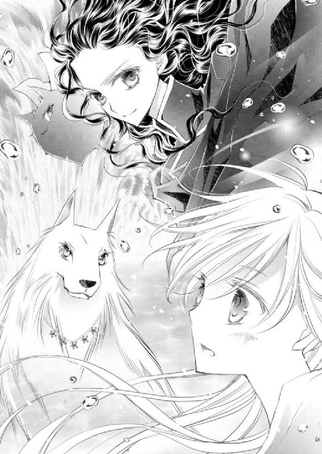
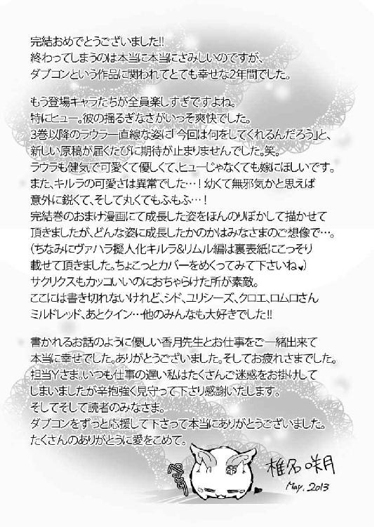

| ダブル・コントラクト8 愛がつながる再誓約!? (ビーズログ文庫) | |
| 香月 沙耶 | |
| (2013) | |
本作品の全部または一部を無断で複製、転載、配信、送信したり、ホームページ上に転載することを禁止します。また、本作品の内容を無断で改変、改ざん等を行うことも禁止します。
購入時にご承諾いただいた規約により、有償・無償にかかわらず本作品を第三者に譲渡することはできません。
本作品は、底本の表現や演出を考慮して本文縦組で制作しております。また一部のページを改変しております。ごらんになるリーディングシステムにより、表示の差が認められることがあります。
ならば統率者をつくればいい。名案だろう？
私の誓約者はそう言うと、顔をほころばせた。
普段は強面と恐れられる私の誓約者は、笑うと子どものような表情になる。
私は、彼のそんな顔がとても好きだった。
誓約者の手が、私のみっともない白い毛を優しく撫でる。
みっともないと恥じ入ると、誓約者は『美しいじゃないか』と私を叱るのだけれど、できることなら、私は誓約者の髪の色のような漆黒の毛色がよかった。
『統率者？』
『そう。ヴァハラにも人間のように、統率者がいてもいいと僕は思うよ』
『ヴァハラは他者の言うことなどきかないわ。自分が一番だもの』
だから人界にもたくさん迷惑をかけている。
私はため息をついた。
私もヴァハラだけれど、どうして同種たちはあんなにも血気盛んで悪戯好き、人間が大好きなのに、ちょっかいを出さずにはいられないのかしら？
ひととヴァハラでは持つ力が違うのに、あんなふうに爪を立ててしまったら、悪くすれば死んでしまうではないの。
じゃれているだけなのかもしれないけれど、加減というものを知らないヴァハラが、もう何度もひとを傷つけている。
ヴァハラばかりではない。
ヴァハラ獣界と人界を繫ぐ『通路』からは、たくさんの生き物たちが気ままにやってくる。
ヴァハラ獣界と人界では圧が違うから、人界の方が過ごしやすいのだろうが、彼らもまた好き勝手に騒いでは、人々を悩ませ、困らせる。
人界に住む私は、肩身が狭くてたまらない。皆おとなしくしていて。ひとを傷つけないで。
そう嘆く私に、私の誓約者は言ったのだ。
統率者をつくるといい。──と、
『言うことをきかせるようにすればいい。君の力を使って、ヴァハラの掟を編むんだ』
『ヴァハラの掟』
私の誓約者は無造作にうなずいた。
『統率者──つまりヴァハラの王、もしくは女王を選ぶ』
『王と女王？』
『王にはほかのヴァハラを率いてもらう。だからヴァハラの中で、一番強い者がなるんだ』
『強いヴァハラといっても、みんな私より弱いわよ』
ヴァハラは本来黒毛しか生まれない。けれど私はこんなみっともない白毛で、それが原因かどうかは知らないけれど、ほかのヴァハラとは明らかに言動が異なるらしい。
ヴァハラがこんなに人間に慣れることはないと、ひとにも同胞にも驚かれるけれど、私は私でしかない。
そんな私を、誓約者は「唯一無二のヴァハラだ」と慈しんでくれるのだ。
ほかのヴァハラと違っていたっていい。誓約者さえ認めてくれたら、私は私でいられる。
『君がヴァハラの女王となるんだ。そして王を──』
密やかに囁かれた言葉に、私は目を瞠る。
『君は特別なヴァハラだ』
誓約者は私の背を穏やかに撫でる。
温かな掌が気持ちよくて、私は灰紫色の目をうっとりと細めた。
『神たる力を持つ君ならば、きっと【ヴァハラの王】を生みだせる』
誓約者の腕が、私の首に緩く巻きついてきて、引き寄せられた。
首筋に鼻を埋めるようにして、誓約者は私を抱きしめる。
『まるで花のような、芳しい香りだ』
『......』
『僕の誓約のヴァハラは、きっと成し遂げる』
誓約者の声は、彼こそがまるで統率者のような、厳かな響きをしていた。
『できるね？』
『......ええオフラ。あなたがそれを望むのであれば』
私の誓約者──オフラは、それはそれは嬉しそうに微笑んだ。
『ではまず、ヴァハラを律する掟をつくろうか。僕も手伝うよ』
『お願いするわ』
『それからヴァハラがやってくる通路の上に、蓋をしようと思うんだ。僕はヴァハラを愛しているから、ヴァハラが悪者になるのは見たくない。ならば希少な生き物、神として愛されるようにしたい』
次々と夢や希望を語るオフラの顔を、私はじっと見つめる。
ねえオフラ、あなたのその笑顔のためならば、私はなんでもする。
なんでもするのよ。
「トラヴィスがセルリア教堂から持ち帰った資料を読んでみたのですが」
冊子状になった紙の束を手に、ローデリー地区オフラ教教主・ユリシーズは、目の前のふたりに、交互に目を向けた。
「汚いなあ。それで読めたのか？」
「長い間、風雨に晒されていたようだからな」
シド・エリクソン少佐と、ミルドレッド・ロレンシア元帥が、ユリシーズが持つ冊子を覗き込む。
三人がいるのは、ローデリー地区オフラ教教堂の舞台脇だ。
ヴァハラ獣界に住む巨人に破壊され、開いた舞台の穴は、優秀な石工たちの活躍により、完璧に塞がれている。だが物理的に塞いだだけでは、蓋の役目を果たさない。
ヴァハラをはじめ、ヴァハラ獣界の獣たちが人界にやってこないために、術を舞台全体に張り巡らせなければならないのだ。
ユリシーズはここ数日ずっと舞台に詰め、ほとんど寝ずに、祝詞を唱え続けていた。
だが普段と異なり、いくら祝詞を唱えても、術は舞台を覆わず、穴が塞がらない。
普段は使わない難易度の高い祝詞を使い、ようやく塞がりかけている現状だ。
無防備な状態では、いつ何時ヴァハラ獣界から危険な獣がやってくるかわからないため、常に守護団や軍人たちが、舞台の警護をしているという状態だった。
ユリシーズの護衛をしているシドと、様子をうかがいにやってきたミルドレッドも、彼に付き合う形で、舞台のすぐそばから離れずにいた。
ユリシーズは冊子を軽く振りつつ、美麗な面に笑みを浮かべた。

「ところどころ文字が滲んでいますが、なんとか」
「ねえねえ、なんて書いてあったの？」
ミルドレッドの誓約のヴァハラ・クインも、興味津々に冊子を見上げている。
ユリシーズは求めに応じ、冊子に視線を落とした。
「簡単に言いますと、ヴァハラの生態に関するまとめ書きです。オフラ教が所蔵する書物の中から、これはと思う個所を書き出していますね。蔵書をすべて読み込んだのでしょう。わたしも読んだことのある書物のあちこちから引用されています」
「それは、アラステア教主が書いたものというわけね？」
「ええ、この癖のある文字に見覚えがあります。そしてこのあとに」
紙をめくり、ユリシーズはふたりに見るよう差し出した。
「何これ」
「処方箋ですよ」
「例のか」
ユリシーズは、ゆっくりうなずいた。
「オズウェル・ジェメル邸で見たものとほぼ同じです」
「え、何。あんたこれ全部覚えてたのか？」
羅列されている花や薬草や合成物の名の数は、百は下らないだろう。
呆れたようなシドの視線に、ユリシーズはにっこり微笑んだ。
「ほぼ、と言ったな？」
「ええ、元帥。ジェメル邸で見た処方箋から、さらに三つほど書き加えられています」
「三つ加わったくらいで、劇的に変わるものなのか？」
ミルドレッドに問われ、ユリシーズは再度冊子に目をやった。
「たとえば香水などは、同じ材料を厳密に計量しなければ、香りが異なるそうですよ。人間の鼻では無臭に感じる液体を一滴垂らしただけで、劇的に変わることもあるとか」
「確かに。アタシたちの鼻だともっとよくわかると思うわ。おんなじ香水をつけても、人間の体臭や体温で、香り方が違うくらいだもの」
「へえ」
「詳しいな、教主」
「昔、毒薬のことを少々学びまして」
ユリシーズが笑うと、シドとミルドレッドは、そろりと顔を見合わせた。
「あんた誰かを毒殺しようって考えてたわけ？」
「まさか。毒殺されないように学んだのですよ」
澄ました顔のユリシーズに、シドはどうだか、と肩を竦めた。
「いずれも薬品として使われていますが、今申したように、この三種を入れたことで、オズウェル・ジェメルが使ったものとはまったく異なる作用を及ぼす可能性が高いかと」
「ヴァハラに逆同調ができる薬が、さらにどう変わったんだ」
深紅の髪をふわりとかき上げたミルドレッドは、大きなため息をついた。
「それはアラステア教主に直接訊くか、これを実際につくるかしなければわかりませんね」
──そして恐らく、舞台の術がなかなか塞がらない原因は、薬液によるものだろう。
ユリシーズは心の内でそう呟いた。
舞台の脇に転がっていた青い瓶を思い出す。
姿を消した賊が持ち去ったあの瓶の中には、薬液が入っていたに違いない。瓶の中身は半分ほどに減っていた。
キルラ‐キルレ‐キロルに酷似した黒きリムル‐リシル‐リスレ。
リムルはなんらかの理由で、この舞台から薬をヴァハラ獣界へ撒いた。その薬が舞台を塞ぐ術にかかったものと、ユリシーズは推理していた。
どんな薬効かはわからないが、まったくアラステア教主は厄介な代物をつくってくれたものだと、ユリシーズはため息をついた。
「だがそのアラステア教主は行方不明。どこに行ったのやら。──ああ、イム！」
舞台上空から、シドの誓約のヴァハラ、イムがゆっくりと旋回しながら降りてきた。
「朗報ですよ」
床に足先をつけるなり、彼にしては珍しく、口早にそう言った。
「なになに、なんかわかったの？」
クインに急かされたイムはすぐにうなずいた。
「どの件だ？」
「エリクソン別邸に侵入した首謀者が判明しました」
その場にいた全員の視線が、イムに注がれる。
「エヴァーツ家に繫がる者たちでしたよ。外れ部隊の者たちが賊の身元を丹念に辿り、先ほどようやく判明した、と」
「ガーディナーもいない、エリクソンも教主の用事にかかりきりって時に、皆よくやったな。さすが選り抜き。わたしの部下だ」
ミルドレッドは嬉しそうに顔をほころばせて胸を張る。
「あとで顔を見せて褒めてやってくださいよ」
「もちろん」
「そういえばエヴァーツ家出身の教尊候補者がいるって言ってたけど、つまりそっち絡みで、ユリシーズが邪魔だから狙っとけってことかよ」
「ひどいわねえ。エヴァーツ家って、高位貴族第一位のお家柄でしょ？ 貴族が王族のユリーの命を狙うなんて、ホント欲深いわ」
憤然とするクインに、まったくです、とイムも同調する。
「それは本当か」
盛り上がる二匹のヴァハラの間に、突然険吞な声が割り込んできた。
「アイネイアス」
セルリア教堂で例の『薬』を吸い込んでしまい、グロッキーになっていたアイネイアスが、真っ直ぐかつ勢いよく走り寄ってくる。
名を呼んだユリシーズの聖衣の裾に鼻を押しつけ、最愛の誓約者を見上げたあとで、クインとイムに視線を流した。
「イム、今の話は本当かと訊いている」
「ええ、本当ですよ、アイネイアス」
「ユリシーズ、少し留守をするがいいか」
「はい？」
「エヴァーツ家の者たちを、死ぬほど怖い目に遭わせてこようと思う」
「......なんですって？」
よくもユリシーズを狙ったなと、怒りに燃えるアイネイアスは、つい最前まで薬でダウンしていたとは思えないほど俊敏に飛び上がる。
「おい、ちょっと待て、アイネイアス！」
慌ててミルドレッドが制止に入るのと同時に、ユリシーズがアイネイアスを両手で抱え込み引き寄せた。
「何をする、ユリシーズ！」
「いけませんよ、アイネイアス」
「なぜだ！」
「今後を考えりゃ、ここは穏便にしておかないとダメだろうが」
冷静な己の誓約者と呆れた顔のシドを交互に見下ろし、だがどうしても怒りが収まらないのか、アイネイアスは控えめながらもユリシーズの腕の中で身を捩る。
「あら、アタシはアイネイアスに賛成。だって考えてもごらんなさいよ、ここでビシッと釘を刺しとかなきゃ、ユリーはまた狙われるかもしれないのよ」
「クインの言うとおりです。やったことに対する裁きは受けなければなりません。シド、わたしたちの家を荒らされたのですよ。わたしも怒っています」
復讐に燃えるヴァハラ三匹に対し、三人の誓約者は困惑顔だ。
「いやあ、やっぱり誓約者が絡むと、誓約のヴァハラは本当に一途ですな」
のんびりとした声と歩調で登場したのは、アイネイアスとともに『薬』でダウンしていた、トラヴィス・クーガンだ。
「クーガン、大丈夫なのか？」
上司ミルドレッドの労わる声に、部下は目を細め敬礼する。そして細めすぎて線のようになっている双眸を、三匹のヴァハラへと向ける。
「いいですか皆さん。こっちはエヴァーツ家に対し、ばっちり証拠があるんです。賊を拘束しているんですから。これは向こうにとって脅威ですよね」
「まあそうね」
「相手は高位貴族第一位。王家の方々でも、正面から手を出しづらいお相手です」
「だから穏便に懲らしめてやるわよ」
「それは切り札として取っておいた方がいいんですよ。ね、少佐」
トラヴィスに話を振られ、シドはそうだよとうなずく。
「相手には、こっちがわかっているってことだけを伝えればいい。それだけで脅しになるし、王族のユリシーズに手を出したんだ。こっちが本気になったら、いくらエヴァーツ家とはいえ相応の仕置きが待っているってわかるだろ」
ええ～、とクインは不満そうだ。もちろんクインだけでなく、アイネイアスなどさらに納得できない、と険吞な目つきでシドを睨みつける。
「アイネイアス」
「......俺はおまえが心配なんだ、ユリシーズ」
ユリシーズは、腕に抱えたアイネイアスと目を合わせ、にっこり笑ってうなずく。
「わかっていますよ。ありがとう」
己の誓約のヴァハラの額にキスを落とすと、アイネイアスの怒気が、一気に霧散する。
「アイネイアス、エヴァーツのあのお方も、襲撃の際、己のヴァハラを利用しなかった。そこだけは評価して差し上げてください」
「つまり自分が悪事を働くところを、誓約のヴァハラには見せたくないってことか？」
「あるいは、教尊候補自身は、この企みに加わっていないのかもしれないぞ。周りが盛り上がっただけかもしれない」
ミルドレッドの言葉は、その場にいた全員を、一旦クールダウンさせることに成功した。
「僕たちの屋敷が荒らされたのは確かに腹立つけどさ、エヴァーツの弱みを握ったって考えただけで、僕は今すごく気分がいいんだけど」
「イイ性格してますもんねー、少佐は」
「トラヴィスだってひとのこと言えないだろ」
睨みつつシドがそう返すと、トラヴィスは、まあそうですねとあっさりうなずいた。
「というわけで、イム、ここはこらえてくれ」
「......シドがそう言うのであれば」
渋々というふうではあるが納得したイムを、アイネイアスはちらりと横目で睨んだ。
「アイネイアス、聞き分けてくれますね？」
「少し懲らしめるだけでもダメなのか」
「そうですね、今度お会いした時に、彼の誓約のヴァハラにお伝えするくらいならばいいかもしれませんね」
うわ、性格悪っ、と思わずシドが呟くと、
「何か仰いましたか、シド」
にっこり笑いつつも間髪容れず声が投げかけられる。
「さっき自分が言ってたじゃないか。それって、もしエヴァーツの教尊候補が主犯だったとしたら、一番されたくないことだって」
己の誓約のヴァハラを襲撃に使わなかったのは、つまりヴァハラを悪事目的に利用したくなかったということだろう。
ピンポイントを突く嫌がらせに違いない。
「そんな未来がやってくると思うと、なんだか楽しくなってきませんか？」
シドの指摘に少しも動じず、完璧な笑みを崩さない誓約者に毒気を抜かれたのか、アイネイアスは、「そ、......だな」と知らずうなずいていた。
「んじゃエヴァーツ家については、そういうことで。でもそういえば、ユリー、もう一件狙われたわよね。弓で」
「第二商業区の広場で、矢を射かけられた件ですね」
「そっちもだいたい見当ついてるよな」
「弓だからなあ」
こちらに関しては、シドもミルドレッドも、深いため息をつく。
ローデリー地区で毎月末におこなわれる仮装デーに参加した日のことだ。
ユリシーズは第二商業区の広場で、弓を射かけられた。
すんでのところで、護衛として同行した英雄将軍、ヒューバート・ガーディナーと、彼の誓約のヴァハラであるサクリクス王に助けられたのだった。
「やっぱり身内かしらねえ」
クインも困ったように首を傾げた。
「弓を使う部隊は決まっているもんな」
シドのうんざりした声に、その場にいた者たちが、それぞれ顔を見合わせる。
「王家弓護隊。王族ならば、右手を振っただけで動かすことができる隊だ」
「でもシド、それを言うなら、ユリーだって王族でしょ」
「元王族です。ロレンシアの姓は、教主となった時に捨てたのですから」
ユリシーズがはっきりそう言った、まさにその瞬間、何日もかけて術で塞いでいた舞台の、その下──ヴァハラ獣界から、突如として何かが噴水の如く噴き出した。
「うお......!?」
複数が驚きの声をあげると同時に、シドは抜刀しつつユリシーズを背に庇い、アイネイアスもまた己の誓約者の背後に回り、守護を固める。
ミルドレッドは長い革製の鞭をするりと解くと、床に向けて放った。
ピシッと鋭い音が舞台に響く。
それぞれが即座に臨戦態勢を取り、舞台の下から噴出した『それ』に鋭い視線を向けた。
水状の何か、言うなれば、透明な雲のようだ。
「イム、あれはなんだ？」
「......ラハヤ、でしょうか」
「ラハヤって、あれだよな、小娘の姉を眠らせていたヤツ」
そうです、とイムはうなずくが、どうにも納得できない様子で、首を傾げた。
「ラハヤなんですが、......どこかおかしい」
「ああ、あれはヤバイ気がする」
アイネイアスの声も、普段より低い。ラハヤから目を離さないまま、ユリシーズが問う。
「どこがおかしいんです？」
「ラハヤはあんなに膨らまない、──避けろ！」
ふっくら膨らんでいたラハヤの先端が、いきなり鋭く尖った。その切っ先が、ユリシーズたちに向かって飛んでくる。
シドの剣がそれを受けると、金属同士がぶつかったような、高い音が響く。
「......！」
ぐいぐい迫るラハヤの切っ先を、シドは真っ向から受け止めず、床に落とすように流した。
二手、三手と、ラハヤの切っ先が襲いかかってきた。
それらすべてをシドは剣で受け止め、受け流し、時には力任せに押し戻す。
イムやアイネイアスも光でラハヤの攻撃を退けるが、あまりにも動きが速いために、なかなか仕留めることができない。
何十手目か、カーブしてユリシーズの後ろ手に回ったラハヤが、鋭く突き進んできた。
見咎めたシドが剣の先で方向を変える。だがさらに続けざまに切っ先が襲いかかり、ユリシーズを庇ったシドの左腕に、鞭状に変化したラハヤがきつく絡みついた。
「つ......！」
「エリクソン！」
シドの腕に絡みついたラハヤを粉砕する勢いで、ミルドレッドの鞭が叩きつけられた。
「大丈夫か!?」
駆け寄るミルドレッドにうなずいたシドは、舞台からもくもくと増殖しつつ湧き上がってくるラハヤを睨みつけた。
ミルドレッドが背後のトラヴィスとシド、そしてヴァハラたちに、順に目をやった。
「クイン、アイネイアス、イムは上空三方へ散るんだ。あれを舞台の外に出さないようにしてくれ。教主はラハヤがあれ以上膨張しないよう、術で動きを封じてほしい。動けなくなったラハヤを、わたしとクーガンが舞台の下に落とす。エリクソンは無防備なユリシーズ教主を守ってくれ」
ミルドレッドの作戦に、それぞれがうなずく。誓約のヴァハラたちはすぐに飛び上がり、トラヴィスとミルドレッドもまた、舞台の下についた。
ユリシーズは静かに祝詞を唱えはじめた。
外に出ようとするラハヤを、ヴァハラたちが光を使って囲い込む。周囲は光の、上下は祝詞の網で覆われたラハヤたちは、徐々に舞台の中央に集められた。
水の衣を纏うラハヤは包囲されながらも、なおも増殖せんと膨らんでいく。
「クーガン」
「了解です」
ミルドレッドとトラヴィスが、舞台の上に飛び乗る。もくもくと膨らむラハヤを、ミルドレッドの鞭が叩き、トラヴィスの剣で斬り裂く。
ラハヤの纏っていた水がドッと落ち、舞台が水浸しになった。
ユリシーズの祝詞が朗々と響き渡る。
それはヴァハラ獣界の者たちを、自身の界へと戻す祝詞だった。
ミルドレッドとトラヴィスの攻撃により衣を奪われたラハヤたちは震え上がる。そして来た道──ほんの微かにずれていた石蓋の隙間を通り、ほうほうの体でヴァハラ獣界へと戻っていった。
「よし！」
全員で安堵する中、ユリシーズがハッと舞台の上を凝視した。
舞台に張り巡らされた網目状の術は、一部だけがぽっかりと空いた状態だった。その穴を塞ぐべく、ユリシーズは不眠不休で祝詞を唱え続けていたのだ。
それが──。
「どうした、ユリシーズ？」
「術の邪魔をしていた何かが、薄まったような。......ああ、だがさらに全体に広がった？」
そうか、とユリシーズは原因に思い至る。
「ラハヤの纏う水に流されたのか。つまり舞台を水で洗い流せば術を張り直せる」
ユリシーズは確信を持って、うなずいた。
「何ひとりでブツブツ言ってんだ？」
「シド、できるだけひとを集めてください。舞台上を洗います」
「は？」
「雨程度では流されなかった。ということは、相当の量の水が必要ということになる。だがそれで術を張り直すことができるはずです」
「ユリシーズ、何言って......」
シドが首を傾げたその時、上空からユリシーズを狙う矢が、風を斬り、凄まじい勢いで飛んできた。
矢がユリシーズの胸に突き刺さる寸前に、やじりをシドの剣が食い止め、矢の胴体部分にはミルドレッドの鞭が巻きつく。そして矢羽をあとかたもなく消し飛ばしたのは、アイネイアスの光だった。
続いて矢が雨のように降り注ぐ。それらの攻撃を床に立つ人間たちは、避け、叩き落とし、斬り裂いていく。
もちろん誓約のヴァハラたちが黙って見ているはずもなかった。
「頭の上からいきなり襲ってくるなんて卑怯者ねえ──ッ！」
クインが雄叫びをあげながら、ぽっかりと空いた舞台の上空から矢を射かけてくる者たちを、容赦なく突き飛ばす。
叫びながら次々と落ちてくる賊を、イムが寸前で助けるが、すぐに乱暴に床へと落とした。
ギャッと声をあげて舞台上に転がる賊は、十人ほどもいた。
黒装束の賊たちを、シドとトラヴィスが手際よく縛める。
「ラハヤの動きに乗じて攻撃しようって魂胆だったんでしょうけど、おあいにく様ね、この卑怯者どもが！」
クインが吠えると、賊たちはびくりと身を震わせた。
顔を隠している巾を、トラヴィスが順に外していく。
「......これはこれは」
ひゅう、と口笛を吹いたのは、シドだ。
「見覚えのある顔ですね。確か現王の戴冠式の折、どこぞの誰かの護衛をなさっていた方々ではないでしょうか」
ユリシーズが澄ました顔で指摘すると、賊たちは真っ青になる。
シドとトラヴィスは、相手がバカな真似をしないようにと、彼らが顔を覆っていた巾を使って、丁寧に猿ぐつわを施した。
ミルドレッドはその様子を見ながら、深々とため息をついた。
「わたしの甥っ子はずいぶん大胆なことをするな」
『どこぞの誰か』とは、ミルドレッドの兄──つまり現王の息子であり、王位継承権を持つ第二王子だったのだ。
ユリシーズに向けられるミルドレッドの眼差しは、同じ王族としてこの事実をどうしようか、迷っているふうでもあった。
ユリシーズはにこりと笑って、「元帥にお任せしますよ」と告げた。
「うーん、もちろんこのままうやむやにしておくわけにはいかないし、だが話を大きくするのもなあ」
「ねえねえミル、今度こそきっちり釘を刺しておくってのはどうかしら？」
「その時にはもちろん俺も行くぞ、クイン」
クインはアイネイアスにうなずいてみせる。
「ミルの甥っ子って、すんごく生意気だから、死ぬほど脅かすってどう？」
「夜眠れないほどの恐怖を味わわせて差し上げるのはいかがです？」
「いいわね、イム！ アタシたちで姿を消して、一晩中脅かしてやるの。やだ、楽しそう！」
「なんでしたらエリクソン邸に招待いたしましょう。娘さんが大層怖がった、生首がぶら下がった部屋に泊まっていただくというのはいかがでしょう」
「イム、それは名案だ」
盛り上がるヴァハラたちに苦笑しながら、ユリシーズはミルドレッドへ、軽くうなずいた。
ミルドレッドもまた笑みを見せるが、すぐに真顔に戻る。
「ユリシーズ教主が今後こんな目に遭わないよう、きっちりと話をつけてくるよ。すまない」
「元帥が謝ることではないですよ。今後もよしなに」
頭を下げる姫元帥に、王位継承権をなんのためらいもなく放棄したローデリー地区の教主は、穏やかに微笑んだ。
「ユリシーズ教主を狙った賊はほぼ判明したし、舞台の術の穴も塞げそうだし、よかったな」
だが、とミルドレッドは、舞台をちらりと見やった。
──ヴァハラ獣界は今、どうなっているのだろう。
言葉にはしなかったが、ミルドレッドが何を言いたかったのか、その場にいた者たちはすぐに察した。
「ヒュー様、いつお戻りになるのかしら。だいたいあの膨張したラハヤってなんなの？」
クインの問いに答えられる者は、この場にはいない。
「まあ、どうしても必要っていうなら、僕とイムが行ってみるけどさ」
「でもヴァハラ獣界は広いわよ。行ってヒュー様たちに会えるとも限らないし」
「もっともだな。とりあえずわたしは王都に戻り、教主を狙ったあのバカ者を、きっちり叱りつけてこよう」
「エヴァーツ家のことも元帥にお任せしてよろしいのですか？」
ユリシーズの問いに、構わない、とミルドレッドはうなずいた。
「あら、じゃあ早く戻らないと！ ホントはヒュー様のお帰りをお待ちしたいけど、今、次期教尊を決めてる最中でしょ。エヴァーツのヤツに教尊の座を渡すわけにはいかないじゃない」
「珍しく意見が合ったな、クイン」
ミルドレッドは魅力的な金茶色の大きな瞳に力を込めると、クインの背中に、ひらりと飛び乗った。
「では、わたしはこの賊たちを収監する手続きを取ってきましょうかねえ」
舞台周りを警護していた守護団を呼び寄せると、トラヴィスは賊を引き連れ、その場から離れていく。
「ユリシーズ教主、エリクソン、またな」
「今度いらっしゃる時は、かのお方がお帰りになっているといいで......いてえ！」
シドの冗談混じりの言葉の途中で、ミルドレッドの鉄拳が上から振り下ろされた。
「エリクソ～ン、貴様覚えていろよ。今後貴様に婚約者ができた時には、赤ん坊の頃からのあれこれ一切合切を、逐一ばらしてやるから」
目を丸くし、そして次の瞬間には、苦く眉根を寄せたシドへ、ミルドレッドは、その時が楽しみだと叫びながら、クインとともに去っていった。
「シドは結婚の予定があるのですか？」
ユリシーズが興味深く問うと、ないないとシドは苦々しく首を振る。
「僕のことよりさ、あんたこれからどうするわけ」
「どうする、とは？ わたしも結婚の予定はありませんよ。そもそも教主は、教義上結婚は望ましくないとありますし」
「え、そうなんだ。......つか誰もあんたの結婚予定なんか訊いてないって！」
「では何を訊きたいのです？」
シドは息をつくと、あらためて口を開いた。
「教尊候補は四人いるんだろう。エヴァーツ家のヤツと、アラステア教主。あと名前も知らないのと、あんた。消去法でいくと、あんたが教尊になる可能性が高いんじゃないか？」
シドの指摘に、矢を射かけられた時でさえ、涼しげな顔をしていたユリシーズが、苦く表情を歪めた。
「わたしは教尊になるつもりはないのですが」
「だが俺のユリシーズが一番適任だと思うぞ」
「わたしもシドとアイネイアスの意見に賛成ですよ、ユリシーズ」
誓約のヴァハラたちの強力推薦にも、ユリシーズは浮かない顔だ。
「小娘が言ってたそうじゃないか。『ユリシーズ教主が教尊になられたら、ヴァハラが悲しむような真似はなさらないのではないか』って」
その言葉に、ユリシーズはわずかに目を見開いた。
「祝詞を使ってヴァハラ獣界のヤツらを出したり押し込めたりするのだって、誰にでもできるもんじゃないだろ。王家の地位を放棄しても、あんたは特殊な力を持っている。その力を、ヴァハラのために使うのもいいんじゃないかって思うんだけど」
ユリシーズは一度目を伏せた。だがそれは一瞬のことで、すぐに顔を上げると、悪戯っぽい視線を、シドへ向ける。
「あなたはわたしに教尊になってほしい、と？」
「元帥がいる限り、ヴァハラを戦争の道具になんてしないだろうけど、あんただって知ってるだろ。一部の軍人が、ヴァハラを召喚して自分を誓約者にしろってごり押ししているのを」
それを、軍とオフラ教のどちら側にも反対する人間が上にいてほしいわけだよ、とシドはさらりと言った。
「全面的に、シドが言うことに賛成」
「もちろんわたしもです」
ヴァハラたちの、あらためての賛成の声に、ユリシーズはため息をつく。
「あなた方は王位継承権を放棄したわたしに、別の場所とはいえ、頂点を目指せとおっしゃるのですね」
「だいたいあんたが下でもぞもぞしているのなんて全然似合わないから」
「まったくです」
「そのとおりだ」
重ねて言われたユリシーズは、降参、とばかりに笑った。
やがて穏やかに唇を開くと、こう言ったのだ。
「では、ヴァハラのために、ただ働きを覚悟しましょうか」
と。
「よし、それでこそ俺のユリシーズだ！」
喜ぶ自らの誓約のヴァハラの頭を、ユリシーズの整った指が優しく撫でる。そうして、今は静まり返った舞台へと目を向けた。
その場にいた者たちもまた、つられて舞台を見る。
「結局娘さんの姉君は、白毛のヴァハラの誓約者なのでしょうか」
「それは帰ってきたら聞いてみるさ」
イムは、そうですね、とうなずいた。
「ガーディナー少将とラウラ・ファウベルは、今頃何をしていらっしゃるでしょうね。クロエ・ファウベルと再会できていればいいのですが」
ユリシーズの言葉を受けて、シドはひょいと肩を竦めた。
「どーせどこに行ってもいちゃいちゃしてんだろ。あのヒューが、小娘に傷ひとつつけるような真似を許すはずないしさ。別に心配しなくても平気だろ。キルたんもいるし」
あっさりとそう言ったシドだが、言葉ほどには楽観していないことは、眼差しの真剣さを見れば明らかだった。
ユリシーズは口元を微かにほころばせた。
「ところでシドは、いつまでラウラ・ファウベルを『小娘』と呼ぶのですか？」
「それはわたしも気になっていました」
「娘は小娘呼ばわりされるほど子どもじゃないだろ。それに、シドとほとんど変わらない背丈じゃないか」
その場にいた全員に窘められるも、シドはつんとそっぽを向いた。
「いつまでっていつまでもさ」
「シド」
「でかいことを気にしてるから、『小さい娘』って呼んでやってるんだよ」
素っ気なくそう言ったシドに、ユリシーズは、おや、と目を瞠った。
「シドはラウラ・ファウベルを気に入っているのですね」
「わたしは以前から気づいていましたよ。お気に入りの相手には容赦ないんです、シドは」
「は？ イム、それはない」
「ではわたしも気に入ってくださっているのですね」
ふっと笑うユリシーズに、シドはさも嫌そうに顔をしかめ、ないから！ と叫んだのだった。
くしゅん、と小さなくしゃみをしたラウラ・ファウベルへ、ヒューバート・ガーディナーの気遣う視線が向けられる。
「寒いか？」
「あ、大丈夫です。全然寒くありませんから」
むしろ身体の奥の方から、熱いものがこみ上げてきて、寒さなど少しも感じない。
ラウラがにっこり笑ってそう言うと、ヒューバートもまた、微かに笑んだ。
「寒いならオレが抱きしめてあっためてやるのに」
そう言うや、ヒューバートの......否、同調している、ヴァハラの王・サクリクスが腕を伸ばしてくる。
「え、わ......！」
「ヒューバートならば大歓迎じゃが、貴様になどあっためてほしくない！」
戸惑うラウラに代わり、こちらも同調中のキルラ‐キルレ‐キロルが現れ、ぐいぐいサクリクスの胸を押す。
「ええ？ キルキル、昔はオレが抱っこして寝かしつけてやったのになあ。ラウラちゃん、キルキルってばホンット可愛くてさ、あ、今ももちろん可愛いんだけど、『シャクリクス、寒いのじゃ』とか言っちゃって──」
「ぎゃあっ、ラウラに余計なことを吹き込むでない～！」
慌てふためくキルラが可愛くて、ラウラは小さく笑った。
だがその笑みも、ふと消えて、ラウラは眼下に延々と広がる白黒の森を、睫毛を伏せて見下ろした。
「ラウラ、どうしたのじゃ？」
「ラウラちゃん？」
「あ、平気ですよ。ごめんなさい」
慌てて取りつくろうように笑みを見せると、ふいにヒューバート、いや、サクリクスの腕が伸びてきた。
やんわり抱きしめられたかと思うと、ぽんぽんと背中を優しく叩かれる。
「だーいじょうぶ。すぐにクロエちゃんは見つかるよ。そんでラウラちゃんの両親も見つけて、エフィと話をつけて、みんなで人界に帰ろうな！」
「......はい」
「そうじゃぞ。我とヒューバートがおるのじゃから大丈夫じゃ」
「ちょっとちょっと、そこにオレも入れてちょうだいよ、キルキル」
「貴様は役立たずの王じゃからの」
「そ、そんなことないぞ。オレだってそれなりになあ」
キルラとサクリクスの掛け合いに、ラウラは作り笑いではなく、心からの笑みを面に浮かべた。
キルラとサクリクスはいつもこうだ。ラウラの気持ちを優しく解してくれる。そんなふたりの気持ちが嬉しくて、ラウラはうん、とうなずいた。
「大丈夫。わたしも信じているから」
顔を上げる。
するとサクリクスからヒューバートに代わったのか、目の前の双眸が優しく細められた。
──そして将軍も。
ヒューバートから向けられる、静かだが温かな眼差しに、ラウラは励まされる。
そばにいたい、......いてほしい、とても大切なひと。
ヒューバートがいてくれたら、自分はもっともっとがんばれる。
──お父さん、お母さん、姉さん。
行方不明だった両親が、ここ、ヴァハラ獣界で見つかったのだ。今は姉のクロエとも離れてしまったが、全員を探しだして、そして家族みんなで人界に戻るのだ。
そのためにラウラは、精いっぱいがんばろうと思う。
そんなラウラを、キルラが、サクリクスが、そしてヒューバートが支えてくれる。ともにいてくれるのだ。
怖いことも不安も、すべて消すことはできないけれど、その気持ちにのまれることなく力を尽くしたかった。
「ヴァハラの女王とラウラの姉は、同じ方角に進んでいるんだな」
ンピチュ、ンピチュピチュ！
そうだべさ、こっちの方角だべさ！
「そうだってネムリンは言ってます。そういえば、姉さんと一緒にヴァハラ獣界に落ちたロムロさんが、白黒の森の手前で待機しているってラハヤから聞いています」
「んじゃロムロはこの先にいるかもしれないんだな」
はじまりの森の端のためか、この近辺はまだラハヤの侵食を受けていなかった。揃って目を凝らすが、人間はおろか、動物の姿も見当たらない。
「まあロムロのことだからあいつ自身は大丈夫だとは思うが、クロエちゃんはラハヤに包まれて眠っているんだよな。その状態でロムロにすべてを任せるのは荷が重いか」
確かにそうだ。
ここ、ヴァハラ獣界と人界では気の重さが違う。
ラウラは今、キルラと同調をしているから、こうして自由に動けるし、空だって飛べる。けれど普通の人間は、スムーズに動けないだろう。
ラウラなど、キルラと同調していなければ歩くことすら辛いし、姉のクロエにいたっては、リムル‐リシル‐リスレに同調を解かれ、強い圧に晒された途端、気絶してしまったくらいだ。
「ロムロさんは、将軍のようにお強いのですか？」
「強いよ～。あいつ、母国で魔者扱いされてたの知ってる？」
「魔、者ですか」
確か奴隷として鎖に繫がれていた、ということは聞いているが、魔者扱いされていたなんて初耳だ。
「そ。ロムロの国では、金色の髪は魔者の印だったらしい」
「髪の色だけで、ですか？」
そんなのひどい、と憤慨するラウラを見て、サクリクスは優しく目を細めた。
「あいつ、相当な身体能力があったから余計にそう思われたんだよ。自分と違う者をなかなか受け入れられない国だったんだろうな」
「......」
「話がずれた。あいつヒューに勝るとも劣らない身体能力だから、大丈夫、ラウラちゃん」
「あ、......はい」
「違うことは悪いことなのじゃろうか」
ラウラがうなずいたその直後に代わって表に出たキルラが、小さく呟いた。するとサクリクスは、なお一層目を眇めて微笑む。
「全然悪くないさあ。まあ状況にもよるが、そういうのは、違う側じゃなくて、受け入れる側の問題だと、オレは思うぜ」
──確かにサクリクスさんの言うとおりだ。
ラウラはサクリクスの言葉に、素直にうなずく。だがキルラはどこか納得し難いように、微かに首を傾げた。
「キルキル？」
顔を上げたキルラは、じっとヒューバート──サクリクスに、視線を注いだ。
「あの白きヴァハラは、何ゆえ我を、......我とあの黒き者をつくったのじゃろう」
白きヴァハラ──ヴァハラの前女王であり、女神とも崇められる存在、エフィ。
キルラの問いはもっともで、そしてラウラ自身も、彼女には訊きたいことがたくさんある。
なぜラウラの両親を、ラハヤで眠らせているのか。
そもそもエフィと両親の関係は？
なぜヴァハラ獣界に連れてきたのか。
そのことを、どうしてラウラとクロエに言ってくれなかったのか......？
エフィがしていた首飾り、あれは確かにラウラの父であるレアンドロが、母クラリサに贈ったものだ。それを、どうしてエフィがつけていたのだろう？
先刻の邂逅では、エフィは何ひとつ答えてくれなかった。次に再会した時、彼女はちゃんと教えてくれるだろうか。
そして両親を返してくれるのか......？
「エフィの目的はわからない。でもさ、キルキル」
「なんじゃ」
「オレはエフィが、キルキルを生み出してくれて、すげえ感謝してるよ。キルキルをオレに預けてくれたことに対しても」
ヒューバートの顔で優しく微笑まれて、キルラもいつもの調子が出ないようだった。
ラウラの内でもじもじしていたかと思うと、急に背筋を伸ばしてサクリクスを真っ直ぐに見据えた。
「ゆうておくが、我は貴様に育てられたのではないぞ。我を主に育ててくれたのはじじじゃ」
つん、と唇を尖らせたラウラ──キルラを見た瞬間、ヒューバート──サクリクスがとろとろに笑み崩れた。
「キルキル～、おまえ可愛すぎるって！」
「うおっ、何をするのじゃ、抱きつくでない～～ッ!!」
「オレ確信してんだけどさ、あいつ、あ、エフィのことだけど、絶対子育てに自信がねえからオレにキルキルを預けたんだぜ。キルキルとあの黒いのを教育できるか不安だったんだって」
「むうっ!? なんじゃその理由は」
「だってあいつ、すんげえ美形ですんげえ力を持ってんのに、すんげえ不器用なんだぜ。それでいて我が道を行くタイプで、じじいでも矯正できなかったくらいだからな」
「......前々王様って、エフィさんのお父さんですよ、ね？」
サクリクスは、そう、とうなずいた。
「二十八ツ年前にオレは王になったんだが、それは女王のエフィが、誓約者とともに人界で生きていくと決めたからなんだよ」
「誓約者、......ですか？」
「そう。そのために女王ではいられない、だから次王を決めるって言ったんだよ。オレやじじいがいくら宥めても説得しても、絶対自分の意思を翻さなかったんだ」
──ず、ずいぶん、意思の強いヴァハラなんだなあ......。
二十八ツ年前か、とラウラは何気なく考えた。
ラウラの両親は同じ年だから、その時には、とふと思い浮かべ、微かに目を見開く。
「ラウラ？」
そのわずかな表情の変化に気づいたヒューバートが、ラウラを覗き込んできた。
「あ、な、なんでもない、です」
だが浮かんだことが、ラウラの頭から消えない。
その時両親は十六歳。ちょうどラウラと同じ年。......つまりヴァハラの儀に臨むことができる。そう考えるが、すぐに首を横に振った。
両親はヴァハラの誓約者ではない。
少なくともラウラは、両親と暮らした十ツ年間、ヴァハラの姿を見たことはない。
──そうだよ。一度もなかったもの。
だがそうであれば、なぜエフィは母の首飾りをしていたのか。
──お母、さん......？
記憶の中にある母クラリサが、ふいにあやふやな存在となってしまったような、心もとない感覚に襲われたラウラは、知らず己の身体を抱きしめていた。
「ラウラ、どうしたのじゃ」
最初に異変に気づいたのは、同調しているキルラだった。
ハッと顔を上げたラウラは、忙しなく瞬きを繰り返す。
見れば目の前のヒューバートが、慮るような眼差しを、ラウラに注いでいた。
「あの、ごめんなさい、わたし......」
「ラウラちゃん、疲れてるよね。どこか辛くない？」
「だ、大丈夫ですよ。キルラと再同調をして以来、ホントすごく元気なんです」
お腹も空いていないし、それどころか身体の奥底から力が湧いてくるみたいな、そんな感じなんですよ、とぎこちなく笑う。
だがそんなラウラを、ヒューバートの逞しい腕が優しく引き寄せ、抱きしめた。
「わ、わ、サ、サクリクスさん、ですか？」
「いや、俺だ」
「将、軍、あの......？」
抱きしめるヒューバートの腕は穏やかで、まるでラウラを憩わせるかのように温かい。
ヒューバートに抱きしめられて、にわかに鼓動がうるさく跳ねるけれど、その優しい腕の力に、ラウラは小さく息をついた。
──ああ、温かい。
寒さなんて感じていなかったのに、触れるヒューバートの温かさが、じんと身に沁みる。
こうされて初めて、身体が冷えていたのだと、ラウラは気づいた。
確かに空を飛びっ放しで、その間ずっと風を受けている状態なのだ。
身体が冷えるのも当然なのかもしれない。
ラウラはヒューバートの肩に、そっと額を押し当てた。
「......将軍」
「なぜ俺がここにいるか、ちゃんと認識してくれ」
「え？」
「俺はおまえのためにここに在る」
耳元に声が触れた途端、ラウラの全身にカッと熱が奔った。
「悩むなとは言わない。おまえが思うすべてを教えろとも。だが俺がここに、おまえのすぐそばにいることを、決して忘れるな」
俺はおまえのすべてを引き受けるつもりでいるのだから。
「し、......将、軍」
ヒューバートの声音は、普段と変わらない。平静で、だからこそ本気で言っていることがうかがえて、ラウラはもう、声が触れる耳朶が熱くて仕方がなかった。
真っ赤になっているであろう耳に、可愛い音とともに、ヒューバートの唇が触れた。
「ひゃ、し、将軍、......ってば！」
もう、とほんのり頰を膨らませながら、ヒューバートを甘く睨みつける。
だが降ってきたヒューバートの視線が、ラウラを包み込むように優しいものだったから、すぐに心からくたくたと力が抜けてしまった。
──わからないことを今ぐずぐず考えてもムダだよ。エフィさんに会った時に、今度こそ答えてもらおう。
「将軍、あの、ありがとうございます。余計な力を抜くことができました」
ヒューバートはごく軽く首を振ると、ラウラの額に、自らのそれをこつんと押し当てた。
言葉はなかったが、ラウラはヒューバートの温かな想いを、確かに受け取った。
やわらかな光をたたえる双眸に見つめられていると、ふいに気恥ずかしさがこみ上げてきて、そっと目を伏せる。
気配が接近してきて、ラウラは思わず瞼を閉じた。
ヒューバートの息が唇の端に触れ、──だが次の瞬間、ラウラはハッと顔を上げた。そして同時に、ヒューバートの胸をぐいぐい押す。
「将軍、ま、待って......！」
今はふたりきりじゃありませんっ！
そう叫ぶや、それまでずっと内でなりをひそめていたキルラが、ラウラにとって代わった。
「何ゆえラウラは今我に返るのじゃ？ ここはチューをすべき場面であろう!?」
「あーあー、せっかくおとなしくしてたのになあ。ラウラちゃん、こういう時は、オレらのことなんか気にせず、いちゃいちゃしまくっていいんだよ？」
「はっ？ ええっ!? いえっ、そんな！」
嫌だー！ と両頰を掌で押さえて、ラウラは何度も首を横に振った。
「ま、ヒュー。続きは人界に帰ったら、思う存分するといい」
「うむ、思う存分するといいぞ、ラウラ」
誓約のヴァハラたちに揃ってそう言われ、ラウラはもう身の置き所がない。
「も、もう......！」
恥ずかしすぎて、今度は掌で顔を覆ってしまった。
「いやいやラウラちゃん、そんな恥ずかしがっても可愛いだけだから、ヒューの自制心を試したいだけならやめといた方がいいって」
「自制、心......？」
サクリクスの言葉の意味が理解できなくて、ラウラがきょとんと首を傾げると、サクリクスからヒューバートに代わる。普段どおりに見えたのは一瞬のことで、微かに苦笑混じりの表情へと変わった。
「あの、将軍」
自分は何かおかしなことをしただろうかとちょっとだけ不安になって、ヒューバートを上目遣いで覗き込む。するとヒューバートは、ラウラが初めて見るような、悪戯めかした表情をしてみせると、不意打ちでラウラの唇を強襲した。
「......っ!?」
それは、瞬きをするほどの、ほんの一瞬の触れ合いだったけれど、突然のことに、ラウラは目を白黒させる。
「し、将軍！」
──キルラやサクリクスさんと同調しているのに......！
何するんですか、と顔を真っ赤にして抗議すると、ぽんぽんと頭を撫でられる。
ごまかさないでください～、となおも言うが、ここでヒューバートの行為をさらに騒ぎたてたら、またサクリクスやキルラに突っ込まれるに違いないと、ラウラは口を噤んだ。
だが言えなかった鬱憤が顔にあらわれてしまったのか、サクリクスが盛大に噴き出した。
「ラウラちゃん、その顔可愛いって！」
ちょっとだけ膨らんだ頰をつん、と突つかれてしまう。
「もう......！」
「バカ王、ラウラが可愛いのは当たり前のことじゃが、貴様がゆうてはならん」
「えー、どうして？」
オレが言ったっていいだろ、と不満そうなサクリクスに、キルラはむふんと胸を反らす。
「ラウラを可愛いとゆうていいのは、我とヒューバートだけじゃからじゃ！ 先刻ヒューバートがそう言ったのじゃ」
「......へー」
目を眇めたサクリクスは、一旦黙り込んだ。
恐らくは中で、ヒューバートとお話し中なのだろう。
「のうラウラ、ヒューバートは確かにそうゆうておったじゃろう？」
「そ、......そう、だった、かな......」
「いつじゃったかのう。......おお、そうじゃ。あの男、アラステアが、ラウラを可愛いとゆうたからじゃった」
アラステア。
その名をキルラが口にした途端に、ラウラはふっと気持ちを引き締めた。
ヒューバートもラウラと同じ思いだろう、どちらからともなく顔を見合わせ、小さくうなずいた。
エフィがラウラの両親と姿を消した時、アラステアもまた、あの場からいなくなっていた。
今もひとりでイーノスを捜しているのだろうか......。
ンピチュ
はじまりの森が終わるべさ
ネムリンの声に、アラステアのことを考えていたラウラは、ふっと我に返り、前方へと目を向ける。
白黒の木々が、ふっつりと途切れ、そこから先はごつごつした岩場がある。
「ロムロはいるかな」
あらためて全員で見回すが、動いているものはなかった。
ネムリンが、調べてみるべさ？ と言ってくれた。
「お願いできる？」
ンピチュ！
もちろんだべさ！
ネムリンがいつものように、全方位に向けて、頭をくるりと回す。
しばらくすると、元気よく、見つけたべさ、と叫んだ。
ンピチュ、ンピチュピチュー！ ンピチュー！
あっちだべさ、あ、おいらの仲間もそこにいるべさー！ やったべさー！
ネムリンが示したのは、やはり自分たちが進む方角だった。
「ネムリンの仲間って、あ、ネムリンと一緒に人界に来ちゃった子たちかな？ ロムロさんと一緒なのね」
そうだと言ったネムリンは、さらに話し続ける。
灰色の大地の入り口にある、灰色の川のほとりにいるべさ
「そうなんだ......！ あの、姉さんも一緒、かな？」
ンピチュ
いないべさ
ネムリンがすぐにふるふると尾を振る。
「え」
「シシハヤなんだって、ラウラちゃん？」
「あの、ロムロさんと姉さん、一緒じゃない、みたいなんです」
「まだ合流していないってことか」
「......そうみたいです」
にわかに不安が押し寄せて、ラウラは忙しなく辺りを見回す。
だが正常なラハヤに包まれた姉の姿は、どこにもなかった。
ンピチュピチュンピチュ
続けての言葉に、ラウラだけでなく、キルラも、えっと声をあげた。
「なになに、なんだって？」
「ロムロさんのそばに、黒い小さな塊がいるって。あの、それって」
「あいつかあ！」
サクリクスは突如としていきり立った。
「サ、サクリクスさん......！」
落ち着いて、と宥めると、サクリクスはすぐに深く息をついた。
「ああ、ゴメン、つい」
「いえ、サクリクスさん、リムルに薬をかけられちゃったんですものね」
「あの者は何ゆえロムロとともにおるのじゃろう」
「......リムル、眠りについたエフィさんを助けたくて、力を持つ姉さんと誓約したらしいけれど、姉さんとは誓約解除するって」
「エフィが眠りについた？」
初耳だったのだろう、サクリクスがいつもより低い口調で問うてきた。
ラウラはうなずく。
「わたしもそれは見ていなくて、あ、でもキルラは見たのよね？」
「うむ。白きヴァハラと黒きヴァハラ──アラステアが自分の誓約のヴァハラ、イーノスじゃと申していた──が、神木の頂で眠りについていたのじゃ」
「エフィとイーノスが？ ラハヤはエフィの眷族だぞ。そのラハヤがエフィを眠らせるなんて、いったいどうしちまったんだ」
──ね、キルラ。
うむ。
ラウラとキルラは内でうなずき合う。
「アラステア教主が撒いたあの秘薬が、原因のひとつなんじゃないかって、キルラと話したんです」
「じゃがアラステアの周りにいたシシハヤたちは、あやつの命令に従いはしたが、暴走などせんかった」
「だからほかにも原因があると思うんですが、それがわからなくて」
「それはエフィかイーノスに訊かなきゃわかんないだろうな。だけど、その、アラステア？ がつくった秘薬っていったいなんなんだ」
ヴァハラと逆同調することができる。
ヴァハラばかりか、ヴァハラ獣界の獣たちまでも己の意のままにする。
さらには、誓約者と誓約のヴァハラの鎖を切断できるのだ。
まるで神の力のようではないか。
その力は、秘薬をつくったアラステアさえ、思いも寄らぬ作用を及ぼしているのかもしれない。
女王であり女神でもあるエフィや、サクリクスと対等に戦ったというイーノスですらのみ込む、ラハヤの暴走。
甘い甘いサーリァの香りに似た──けれどキルラにとっては、まったく似ていない──、そして白きヴァハラの女王、エフィが纏う香りとも酷似した薬は、いったいヴァハラ獣界に、どんな影響を及ぼすのだろう。
ラウラはふいに、恐ろしくなった。
あの薬があれば、アラステアはなんでもできるのではないだろうか。
彼は神の力を手に入れてしまったのではないか......？
「ラウラ」
深く考え込みかけたラウラを、ヒューバートの声がそっと掬い上げる。
「あ、はい」
「少し飛ぶ速度を上げるが、大丈夫か」
「もちろん、大丈夫です」
「我も大丈夫じゃぞ！ バカ王はどうかわからんがの」
「ちょっとちょっと、オレだって平気に決まってんだろ」
んじゃ行くぜ！
威勢のいい声とともに、ラウラは手首をやんわり摑まれる。グン、と速度が増し、頰に当たる風も強くなる。
半ば目を細めながらラウラたちは進んだ。

「どこまでついてくるつもりじゃ」
女声にしては落ち着いた低音が、アラステアの耳にそっと忍び入ってきた。
「おや、お気づきでしたか。ヴァハラの女王よ」
無論じゃ、とでもいうように、白きヴァハラが目を眇める。
美しいヴァハラだった。
純白の被毛は日差しを浴びて輝き、地上の者とは思えぬ美麗なその姿は、見る者によっては、神々しい、と感嘆するだろう。
だがオフラ教教主であり、今はヴァハラに逆同調しているアラステアの目には、たとえヴァハラの王だろうと女王だろうと、ただの白いヴァハラでしかない。
アラステアにとって、最愛かつ最上のヴァハラは、自らの誓約のヴァハラ、イーノスしかいないからだ。
「其方、奇妙じゃのう。ヴァハラか？ ひとか？」
なんの変哲もない、特徴といえば額にかかるくるんとした毛だけという黒いヴァハラを、ヴァハラの女王・エフィは、疑心に満ちた眼差しで見据えた。
「鋭い！ 吾輩、ヴァハラでありひとでもあります」
アラステアがにんまり笑うと、エフィは次いで、すんすんと鼻を鳴らした。そしてふいに鼻筋にしわを寄せると、さも嫌そうにアラステアから距離を取る。
「その匂い」
「ああ、こっちも気づかれましたか。あなたの香りを模した秘薬ですよ」
「模した？ まったく似ておらん。臭くて鼻が曲がりそうじゃ」
「おやおや、そうですか？ 姫は似ていると言ってましたがねえ」
姫とは？ とエフィが微かに首を傾げるのに対し、アラステアは大きくうなずく。
「ええ、あなたの娘」
「リムル‐リシル‐リスレのことかえ」
「そうそう、そんな感じの名前の姫ですよ！」
「リムル‐リシル‐リスレが似ていると？」
「はいぃ」
エフィはごく軽くため息をついた。
「あれは獣としての基礎能力が低いようじゃのう。どこが似ているのじゃ。──それで妾に何用じゃ」
ああ、とアラステアは再び笑った。
「あなたと一緒に眠りについていた黒きヴァハラの所在についてお訊ねしたいのです」
「......イーノスのことかえ」
「ええ、そうです！」
「其方はイーノスとどのような関係じゃ。ひとヴァハラよ」
「ははっ、ひとヴァハラとは楽しいネーミングですね、女王よ。吾輩、イーノスの誓約者なのですよ」
「む。イーノスの？」
「はいそうです。そう簡単にあのふよふよに捕らわれるようなイーノスじゃあないと思うんですよねえ。あの大きな木のそばで、いったい何があったのやら。あなただって、女王っていうくらいですから、強いんでしょ？ なんだってあんなことに？」
エフィはふいとそっぽを向いた。
「其方に話すべきことは何もない。イーノスがどこに行ったのか妾は知らぬ。さっさと何処へでもゆくがよい」
エフィはかたわらに浮かぶ虹色のラハヤの塊にそっと添うと、そのまま進もうとする。
「待って待って！ 用はそれだけじゃないんですよ！」
先回りをしたアラステアが、ラハヤの塊にポンと前肢を添えるや否や、
「触るでない──ッ!!」
雷鳴の如き声でエフィは吠える。同時に何処からともなく天を衝くのではないかというほどの、大量の水柱が出現し、アラステアを襲った。
「うおぅっ！」
危うく直撃を避けたアラステアは、陽気な声をあげて笑う。
「やははっ、さすがは女王ですなあ！ 姫の水での攻撃とは雲泥の差だ！」
「いちいちリムル‐リシル‐リスレのことを口にするでない。出来は悪いが、あれは妾の娘であるぞ」
「おや、意外と母性があるんですな。それを姫にちゃんと言って差し上げればよろしいのに」
「──」
「だけどあなたにとって、一番大事なのは」
アラステアはいきなり上空へと飛んだ。
「このラハヤに包まれた男女ですねえ！」
エフィの背後に回ると、虹色のラハヤの上に、トン、と足先をつけた。
刹那、エフィの面が憤怒の形相を象った。
「貴様、その汚い肢を退けるのじゃ！」
エフィがアラステアに攻撃を仕掛けようとするが、ふっと動きを止めた。アラステアの肢が、強くラハヤを踏みつけたのを見たからだろう。
「吾輩、頼みたいことがあるんですよ、ヴァハラの女王よ」
エフィはギリギリと奥歯を嚙みしめた。
「聞いてもらえなければ、秘薬でこのラハヤを吾輩の言うがままにしましょう。もしくは穴をあけちゃいます」
「......ただの模造品に何ができるという」
「結構なんでもできちゃいますよ。吾輩、こう見えてわりと博学なのです。これまで人間が──まあ、主にオフラ教の者たちが研究を重ねてきた、ヴァハラの謎について考察しましてね、ヴァハラはある特定の匂いに、非常に弱いことを突きとめたのです」
「──」
「ロレンシア王国の国花、サーリァの香りを、ヴァハラはことのほか好む。どんなヴァハラでも、あのイーノスでさえ、大好きだと、いとおしく、特別な香りだと言うんですよ。なぜか。──それはヴァハラの女王たる、あなたが纏う香りと酷似しているからだ」
アラステアは、足先でするりと虹色のラハヤを撫でた。
「前肢に仕込んだこの秘薬をほんの少し嗅いだだけで、どんな強者であってもその者の心は挫け、吾輩の思うがまま、なんでも言うことをきいてくれます」
まあ、たったひとり、この薬が効かなかったバケモノ将軍がいますけども、とは、心の中だけで呟く。
「この薬の香りが、あなたのものと勘違いしているのかもしれない」
「......似てはおらぬ」
「でも現に、ヴァハラをはじめ、大抵のヴァハラ獣界の獣たちはこの薬に酔いますぞ」
「──」
「ですから、あなたの眷族らしい、この美しい虹色のふよふよ......ラハヤ、といいましたか、これも、薬を嗅いだら最後、あなたではなく、吾輩の命令をきくことになります」
試してみましょうか、と、アラステアが足先に仕込んだ薬を一滴垂らしかける。
案の定、待て、と声がかかった。
「聞いてもらえますか、ヴァハラの女王？」
エフィはふっと息をつく。そして憤りの滲んだ強い眼差しを、アラステアへと向けた。
「貴様、妾の誓約者を踏みつけておいて、無事で済むと思うな」
「ふふっ、怖い怖い。迫力ありますなあ」
首を竦めるアラステアに、エフィはメスヴァハラかつ女王にあるまじきことに、チッと舌打ちをした。
「妾に何を望む」
アラステアは、いつものようににんまりと笑んだ。
「姫も新種のヴァハラくんも、ヴァハラとは似ても似つかぬ姿をしていますね。にもかかわらずヴァハラの力を有している。もっと言えばヴァハラやひと以外の生物の言葉を理解するといった、ヴァハラ以上の能力を持っている。そして姫はあなたを『母上』と呼んだ。この情報から導き出される解はひとつ。──ヴァハラの女王は、ヴァハラではないモノも生み出せる」
「──」
「ヴァハラの女王は、ヴァハラ獣界における神なのだと」
声高く叫んだアラステアを、エフィはバカにしたように目を眇めて睨みつけた。
「妾は貴様の望みはなんじゃと問うたのじゃぞ。戯言はもうやめい」
「戯言じゃあないんですけどもねえ。あなたが神ならば、大概のことは叶えられるでしょ。吾輩、ぜひ頼みたいことがあるんですよ」
「だからなんじゃ」
アラステアはたっぷりエフィを苛立たせたあとで、ようやく口を開く。
「あのですねえ、吾輩、──」
アラステアの『頼みごと』を聞くなり、エフィは「それが戯言でなくてなんなのじゃ」と呆れたように呟いた。
「だから戯言じゃないんですってば。吾輩、本気中の本気ですよ」
いかがです？ と首を傾げる。
エフィからの返事は、思いの外早かった。
ため息三つ分待っただけで、エフィはあっさりとうなずいてみせたのだ。
「それにしても、其方は本当にイーノスの誓約者かえ。イーノスは私欲のために決してこの力を使うなと説教をしただけでなく、妾を止めようと戦いすら挑んだのじゃぞ」
アラステアをじろじろと睨み据えるエフィに、なるほどわかりましたとうなずいた。
「イーノスはあなたと戦い、著しく力を消耗していたために、ラハヤに取り込まれて眠りについてしまったのですな」
あやつは真面目すぎるのじゃ、とエフィは吐き出すように呟いた。
「ええ、ええ、それがイーノスのよいところです。自らの欲のために自らの力を使うことのどこがいけないのかと吾輩ならば思いますけれどもねえ」
「......貴様はイーノスより話がわかるようじゃの」
そう言いつつも、アラステアが虹色のラハヤ──その下の、ふたりの人間──を踏みつけていることに我慢できずにいるのか、エフィの双眸がどんどん険吞になる。
「いい加減その肢を退けよ」
「ああ、すみませんねえ。でも女神が吾輩の望みを叶えてくださるまで、怖くてこの上から退けません」
ふふっ、と笑ったアラステアを見るエフィの目は、ますます眇められた。
「妾は噓などつかぬ」
「つかないかもしれませんが、吾輩をボコボコにするかもしれないじゃあありませんか」
「してはならぬのかえ？ 妾は今、貴様をボコボコにしたくてたまらん。望みを叶えてやるのじゃから、それくらいしてもよかろう？」
「いやいや、痛いの嫌ですって」
「命を奪いはせんから、妾にボコボコにされるのじゃ」
じりじりと迫りくるエフィに、アラステアはこっそり口の端を引きつらせつつも、足先をラハヤから上げない。
「いやいやいや、嫌ですってば。それ以上近づいたらラハヤに穴あけちゃいますよ！」
チッと舌打ちをしてようやく止まったエフィに、内心胸を撫で下ろす。
怖い怖い女王様だ、と呟きつつも平静を装い、アラステアはにっこり笑った。
「ホントは何より先にイーノスを見つけたいのですけれどもねえ」
「ならぬ。妾の用件を片付けてからじゃ」
「この虹色のラハヤに包まれたおふたりを何処かへお隠しになる？」
「それは当面の用件じゃ」
「ではすべての用件が片付かないと、吾輩の望みは叶えられないのですか？」
エフィはうなずいた。
「それって、どれくらいかかるんです？ ていうか、やっぱり吾輩あなたに騙されてません？」
「騙してなどおらぬ」
「では、最終的な用件というやつをお聞かせくださいな」
目を細めて笑うが、それを笑みだと、エフィは取らなかったようだ。もちろん噓笑いだから、ヴァハラの女王は正しい。
アラステアを胡散臭いと思っているのであろう、エフィはつかの間黙り込んだ。
「お聞かせくださいなっ！」
同じ言葉を繰り返すと、やがてエフィは深々と息をついた。
「妾の用件とは、妾の誓約者を元に戻すことじゃ」
「元に戻す。......というか、あなたの誓約者って誰？ このおふたり？」
「ヴァハラはふたりとは誓約できん」
「ですよねえ。新種のヴァハラくんは、ふたりと誓約してましたけども」
普段は気だるげに双眸を伏せているエフィが、その言葉にふっと目を見開いた。
「まことかえ」
「ご存じありませんでした？ 新種のヴァハラくん、お嬢さんとロレンシアの英雄、ふたりと誓約しちゃって、しかもそのふたりまで誓約の鎖で繫がれちゃってね！ まあ、そっちの鎖は、吾輩が断ち切って差し上げましたけ、ど......いかがしましたか、女王？」
アラステアは目を丸くした。目の前のヴァハラの女王が、高らかに笑いだしたのだ。
「成功じゃ。妾はやったぞ！」
エフィは虹色のラハヤにそっと身を寄せ、並んで眠るふたりを見下ろした。
「クラリサ......！」
「〝クラリサ〟？」
「クラリサ、長く待たせたが、再びそなたとともに生きてゆくことができる。もう少しの辛抱じゃ」
待っておるのじゃ。
エフィは虹色のラハヤに、鼻先をそっと押しつけた。女王に触れられてか、虹色のラハヤがふるりと震えた。
それは歓喜ゆえの震えのように、アラステアの目には映った。
「どーいう意味か、まったくわかんないんですけども」
「貴様は関係ないのじゃから別にわからずともよかろう」
「関係ありますって。女王の用件が終わらなきゃ、吾輩の望みも叶わないわけで」
「安心せい。それほど長くは待たせん」
「どれくらいです？」
しつこく問いを重ねると、うるさく思ったのか、上機嫌だったエフィが、にわかに物騒に目を眇めた。
「やはりボコボコにされたいようじゃのう」
「いやいや、だってわかんないことをそのままにしておくのって気持ち悪いじゃあないですか。吾輩女王を脅迫している身ですけども、なんなら力を貸しますよ。役に立つと思います」
「貴様の手など借りたくはない」
「そう言わずに！ 吾輩意外と頭が回りますよ。たとえば今あなたがどうしてあんなに喜んだのか、想像してみましょうか？」
訝しげに首を傾げるエフィへ、にんまり笑ってみせる。
「まずは情報を整理してみましょう。一、女王が新種のヴァハラくんと姫をつくれたのは、女王がこのヴァハラ獣界における神だから。二、女王が新種をつくろうとした理由は、あなたの誓約者のため。三、あなたの誓約者はなんらかの問題を抱え、このままではあなたとともに生きてはゆけない。四、ともに生きていくためには、新種のヴァハラくんと姫の『力』が必要」
アラステアは、ちらりとエフィを見やる。女王は無言だった。
「五、新種のヴァハラくん、そして姫は、複数の人間と誓約ができる。また複数の人間を誓約の鎖で繫げることができる。結論。あなたの誓約者は、新種のヴァハラくんと誓約し、誓約の鎖で繫げば、あなたとともに生きてゆける。何人も鎖で繫げる......鎖は即ち力、つまり力を交流させることができるとわかったから、あなたはあれほどに喜んだ。──ですね？」
「──」
エフィは鼻筋にしわを寄せ、アラステアを睨み据えた。
「〝クラリサ〟がこちらの女性。男性は彼女の伴侶でしょうか？ このふたりに新種のヴァハラくんと姫を誓約させると、あなたにとっていいことがあるのかなっと、以上が吾輩の想像です」
いかがです？ と胸を張って問いかけるが、エフィは無言を貫く。
「おや、答えてはくれませんか。てことは、正解でしょうかねえ？」
心底嫌そうな、苦い表情をするエフィが見られたのが楽しくて、アラステアはにまにまと笑った。だがすぐにその笑みを引っ込めると、わずかにエフィへと顔を寄せた。もちろん彼女の攻撃が届かないよう、じゅうぶんに距離を取って。
「ねえ女王。つまり新種のヴァハラくんと姫を手に入れなければならないことになりますが、どうするんです？」
「......何をじゃ」
「吾輩、今言ったじゃないですか。新種のヴァハラくんには、ふたりの誓約者がいるって」
「......」
「しかもひとりは、あのお嬢さんですぞ。──ああ、だから『運命』なのか」
『白い方と同調したのが、よもや其方とは。......これは運命か』
エフィが、新種のヴァハラ──キルラ‐キルレ‐キロルの誓約者である、ラウラ・ファウベルと顔を合わせた時にそう言ったことを、アラステアは確かに聞いている。
「この方々はお嬢さんのご両親ですよね。あなたの誓約者はお嬢さんのお母さんで、あなたの息子たる新種のヴァハラくんの誓約者がお嬢さん。確かに運命と言ってもいいかもしれない」
ま、吾輩運命信じてませんけどもね、とつけ加える。
エフィはふっつりと黙り込み、虹色のラハヤに包まれたふたりをじっと見下ろした。
「......それでも妾はクラリサとともに生きたいのじゃ」
「ええ、女王、あなたの気持ちはとてもよくわかります。吾輩とて、イーノスと離れるなんて絶対に嫌ですからね」
エフィは、己の誓約者からアラステアへと視線を向けてくる。
互いの目と目が合う。先に目を逸らしたのはエフィだった。
「妾は妾の想いを貫く」
顔を伏せながらも、エフィはきっぱりとそう言いきった。
彼女からは見えないところで、アラステアは口元を歪めた。
「協力しましょう。あなたの手の者をしばしお貸しいただきたい」
「何をする気じゃ」
「さっき言ったじゃないですか。吾輩はヴァハラ獣界の大概の獣を、意のままにできる、と」
「妾が問うているのはそういうことでは」
言いかけて、だがすぐに気づいたのだろう、エフィの言葉が途中で途切れる。
アラステアは、どうかすると優しくすら見える微笑を面に浮かべた。
「あなたの息子と娘を連れてこさせましょう。吾輩にはそれができますぞ」
「......」
「あなただって胸が痛むでしょ？ ご自身の誓約者の娘から、誓約のヴァハラを奪うなんて。だから悪役は吾輩が引き受けましょうと言っているんです」
エフィが、奥歯をぐっと嚙みしめるのを見ながら、アラステアは、何もかもわかっていますよ、というふうに、鷹揚にうなずいてみせた。
「早急にことを終えて、吾輩の望みを叶えてくださいな。ヴァハラの女神よ」
ごつごつした岩場から、フラットな灰色の平地へと変わった。
見渡しやすい場所へと出たラウラたちは、高度を上げて広く辺りを見回す。
「いた」
ヒューバートはそう言うや、ラウラの腕を引きながら、真っ直ぐに飛んでいく。
しばらく進んで、ラウラの目にも、浅黒い肌と金髪の、ロムロ・バルディリス中尉が飛び込んできた。
彼のそばにいる黒い塊──リムルも確かに見える。
だがふたりの様子に、ラウラは息をのんだ。
数百どころではない、数千、あるいは数万もいるのではないかというほどのシシハヤが、空を覆い、今にもふたりに襲いかからんとしていたのだ。しかも、
「透けておる！」
ではあれは、アラステアの手の者......！
「でもどうしてアラステア教主がふたりを襲うの!?」
数万のシシハヤが、ロムロ──否、その隣にいたリムルへと突っ込んでゆく。
声は聞こえない。まだ相当距離があるためだ。
だがリムルが悲鳴をあげている気配が伝わってくる。
そしてラウラはさらに目を瞠った。
シシハヤの大群に突っ込まれたリムルを、ロムロの掌が包み込んだかと思うと、大きく振り上げて、ぽぉん、と投げたのだ。
「うわ......」
「あれは我もやられたことじゃ！」
サクリクスはひょいと肩を竦めた。
「いやあ、あの時はつい力が入っちまったんだって」
「あんなに勢いよく投げずともよかったのじゃ。......まあ助かったがの」
ぼそぼそと礼を言うキルラに、こっそり笑みが浮かぶが、すぐにラウラの頰が強張った。
「ロムロさん！」
リムルを庇ったため、今度はロムロが数万のシシハヤにのみこまれてしまったのだ。
「まずい、窒息させられるぞ......！」
サクリクスの叫びとともに、これ以上は無理というくらい、スピードが上がる。
「キルラ......！」
「うむ！」
「ヒュー！」
「ああ」
それぞれの言葉は短かった。だが互いの言いたいことを完璧に汲み取る。
ロムロを取り込むシシハヤたちからは少し離れた場所へ、ラウラとキルラが光を放つ。一拍遅れて、ヒューバートが剣を抜く。
力強く剣を振った、その軌跡に沿うように、サクリクスの光が放たれた。
淡く透けたシシハヤたちは、たまらずバラバラになって逃げる。だがしつこいシシハヤの一部は、ロムロを取り込んだまま、一向に離そうとしない。
ロムロの表情が微かに歪む様を目にしたラウラは、二手目の光を溢れさせた。だが、ラウラがその光を放つことはなかった。
「貴様らロムロを離すのじゃ──ッ！」
黒毛を逆立てたリムルが叫ぶと、全身が淡い紫色の光で包まれる。
そのままリムルは、まったく躊躇せずに、シシハヤの中に突っ込んでいったのだ。
だがすぐに、苦しそうに顔を歪める。じたばたと手足を振るリムルを、自身も苦しいだろうに、ロムロがそっと抱き寄せた。
「あ」
「ああ！」
「なんと......！」
ヒューバートを除くラウラとサクリクス、キルラが、同時に叫んだ。
シシハヤにのみ込まれながら、リムルがロムロの額に、己の前肢を触れさせたのだ。
あれは。
「──誓約をしたな」
ヒューバートが呟いた次の瞬間、リムルは吸い込まれるようにロムロの中に入っていく。
「しかも同調!? おいおい、最初っから何してんだ......！」
大丈夫なのか、とサクリクスは眉間にくっきりとしわを寄せている。
だが心配には及ばなかったようだ。ロムロの眩い金色の髪が漆黒に変わるや、淡紫色の光が全身を包み込んだ。
その光を厭うように、シシハヤたちはロムロから離れていく。
「ロムロさんとリムル、......誓約しちゃった、んだ。はは......」
キルラのように、リムルも複数の人間と誓約できるということは、エフィによって生み出された新しい種である彼らが、そういう性質を持っているということなのだろう。
「だ、大丈夫、なのかな」
我が姉も、もしかしたらリムルとだけでなく、ロムロとも誓約の鎖で繫がれてしまったのではないだろうか。それともそれは、キルラだけの特質なのか？
自分たちが繫がったのは、キルラが自分の誓約者と離れたくないからという願いがあったからこそだと、想像していた。
そのことに間違いがないのであれば、誓約者同士が繫がるのは、キルラの誓約者であるラウラとヒューバートだけなのかもしれない。
誓約したての頃のドタバタを思い出したラウラは、どうか姉がそんなことになりませんようにと願わずにはいられなかった。
「あ、ヒューバート様、ラウラさん！」
シシハヤを退けたロムロが、ラウラたちに気づいて、にっこり微笑みながら手を振ってくる。だが散ったシシハヤたちが再び集結し、今にもロムロに襲いかからんとしている。
「ロムロ、余所見をしている暇はない......！」
ロムロの口からリムルの声が溢れるのが、とんでもない違和感だが、当の本人はちっとも気にならないらしい。
「ああ、そうだね」
ロムロはあっさりうなずいた。
「貴様ら、ヴァハラ獣界の女王たる妾を襲うとはなんという罰当たりじゃ。成敗じゃ！」
キッとシシハヤを睨み据えるや、リムルの背後から、突如として水流が立ち上った。
すぐそばを流れる灰色の川の水のようだ。
「......すご」
「あいつが女王ってのは甚だ納得し難いが、やっぱりエフィの娘だな」
水を扱えるなんて、とサクリクスがどこか悔しそうな、それでいて感心したように呟く。
灰色の水はぐんぐん立ち上り、凄まじい勢いで、シシハヤに激突した。
ピチュ～～～ッ！
シシハヤの悲鳴が聞こえた。
水が直撃したシシハヤたちは、たまらず逃げ出す。
「透けていないな」
ラウラはあっと声をあげた。ヒューバートの言葉どおり逃げていくシシハヤは透けておらず、普段の姿に戻っていたのだ。
「どういうこと？ あ、そういえば、エフィさんが水で攻撃した時にも、シシハヤやミュウィンの姿が元に戻っていました......！」
「俺も被った薬を川の水で洗い流したら、力が回復したっけ。......つーことは」
「アラステア教主のあの薬には、水での攻撃が有効ということですね」
「だな」
リムルの水での攻撃で、シシハヤたちはあらかた正気に戻ったようだった。
自分たち何してんの？ とばかりに、統制なくふらふらと空を泳いでいる。
ンピチュー!!
ラウラの肩に乗っていたネムリンが、いきなり叫んだ。そしてロムロ目がけて飛んでいく。
「あ」
ロムロの周りを、二匹のシシハヤがくるくると回っていた。
「ネムリンの家族だね」
ンピチューンピチュー、と再会を喜んでいる姿と声が聞こえてくる。
「よかったのう。本当によかったのじゃ」
自分のことのように嬉しがるキルラに、ラウラもうなずきながら目を細めた。
「あれ、でも二匹？」
確か四匹なのでは、と首を傾げたラウラだったが、その時、
「ヒューバート様、サクリクス王、ラウラさん、キルラくん」
ロムロが律儀に全員の名を呼びながら走り寄ってきた。
地に降り立ったヒューバートに敬礼すると、すぐに、隣に立つラウラに目を向けてくる。
「こんにちは、ラウラさん」
「あ、はい、こんにちは。あの、姉がご迷惑をおかけしてしまったようで」
本当にすみません、とラウラは頭を下げる。だがロムロはなお一層笑みを深くして首を振った。
「とても楽しく珍しく有意義な時間でした。あなたのお姉さんはとても素敵なひとですから」
「あ、......ええと、ありがとうございます」
「なんじゃ、ロムロはクロエ程度のおなごを素敵と言うのかえ」
突然ロムロからリムルに代わる。しかもその声が、どこか拗ねたようなものだったから、ラウラは目を瞠った。
──えっと、なんかやきもちやいているみたい。
みたい、ではなくまさしくやきもちをやいているのだが、そこまでリムルともロムロとも親しくないラウラは、ただ戸惑うばかりだ。
「ロムロ、おまえ誓約して、しかもいきなり同調までして大丈夫なのかよ？」
「ええ、大丈夫ですよ、サクリクス王よ。先刻まで少々圧がきつかったですが、むしろ身体が軽くて良好です。俺が誓約するとは思ってもみませんでしたが。というか、誓約するつもりはなかったんですけれども」
あっさりそう言うロムロの懐の大きさというか、どこか摑みどころのない受け答えにも少々戸惑う。
「ロムロは妾と誓約したくなかったのかえ」
拗ねたようなリムルの声に、ロムロはにこりと笑う。
「まあ、人生は予定どおりにいかないからこそ楽しいということもありますからね。リムル‐リシル‐リスレには助けられました。ありがとう」
「べ、別に、妾は其方を助けようと思ったわけではない。ただ先に其方が妾を助けたから、妾は借りを返しただけじゃ」
うわーこれが世に言うツンデレか。
恐らくその場にいたほとんどがそう思ったことだろう。
リムルには散々大変な目に遭わされたが、今、ロムロと同調をしている彼女の返す言葉や態度は、どうしたことか、なんだかとても可愛らしい。
しかもキルラをあれほどに嫌がっていたというのに、どう折り合いをつけたのか、今は突っかかってこようとしない。
もしかしたらロムロが、魔法でもかけたのではないかなんて突拍子もないことを、思ってしまったくらいだ。
いずれにせよ、ラウラとしては、リムルがおとなしければ、わざわざこちらからケンカを仕掛けるつもりはない。
「リムル‐リシル‐リスレ」
ヒューバートが静かにリムルを呼んだ。
「なんじゃ、ロレンシアの英雄よ」
「おまえはラウラの姉と誓約解除をしていないのだな」
「クロエのことかえ」
うなずくヒューバートに、リムルは嫌そうに顔をしかめた。
「したかったがまだ誓約解除はしておらん」
「俺たちもクロエさんを捜している最中だったんです」
「誓約のヴァハラと誓約者として繫がっているのであれば、ラウラの姉が今どこにいるかわかるのではないか」
だがどういうわけか、目の前のふたりは、揃って黙り込んでしまう。
「あの......、どうしたんです？」
ラウラが問うと、表に出てきたのはロムロだった。柔和な微笑みが、苦笑に変わった。
「実はリムル‐リシル‐リスレは方向音痴でして」
「は？」
「......方向音痴。あの、リムルが、ですか？」
「ええ。本当は真っ直ぐ『はじまりの森』に行きたかったのですが、ヴァハラ獣界に来て以来、ずっと迷っていまして」
丁寧な説明を聞いているヒューバート......否、サクリクスの肩が、ぶるぶると震えた。そして、ラウラがあっと思う間もなく、盛大に噴き出したのだ。
「方向音痴......！ 方向音痴！」
ゲラゲラ笑うサクリクスを前に、リムルは小刻みに身体を震わせている。
「サ、サクリクスさ......」
あんまり笑わない方が、と言いかけたが、最後まで言葉にできなかった。
「笑うでない～!!」
叫びながら拳を振り上げたリムルは、だがすぐにぴたりと歩を止める。
「止めるなや、ロムロ！ 殴らせるのじゃ！」
「いやいやダメですよ。ヒューバート様は俺の上官であり命の恩人です」
「ロレンシアの英雄ではなくサクリクス王を殴るのじゃ！」
「だから今は同調しているからダメですって。はい、落ち着いて」
むずかる子どものようなリムルを、ロムロは完璧に御している。
中で攻防があったようだが、最後にはにっこり笑うロムロが現れた。
「サクリクス王、あんまり女の子を笑ってはいけませんよ。──で、そういうわけで、クロエさんの居場所は、リムル‐リシル‐リスレが探っているのではなく、シシハヤくんに頼んでいる状況です」
「シシハヤに？」
「今、クロエさんのえせ軍服のポケットの中にいてくれているので」
「あ、あと二匹のシシハヤですね」
はい、とロムロはうなずいた。
「はじまりの森に入る手前で、俺は入ることができず、そうしたらシシハヤくんが二手に分かれてクロエさんについていってくれる、と。まあ、リムル‐リシル‐リスレがいなければ、シシハヤくんとは意思疎通はできないんですけどね」
ンピチュピチュピチュ
だけどおいらたちの方は何を言っているかわかるから、クロエちゃんのところに連れていってやれるべさ
ネムリンではないシシハヤが言ったことに、なるほどとうなずいた。
たとえ言葉が通じなくとも、ヒューバートとネムリンも、確かに思いを分かち合い、ラウラを見つけることができたと聞いている。
「リムル‐リシル‐リスレとキルラくんに、シシハヤくんの交信を翻訳してもらいましょう」
キルラの名を聞き、ふっとロムロからリムルに代わった。
ラウラの方もまた、キルラが表に出る。
互いの目と目が合い、また一触即発かとラウラは緊張するが、リムルはやはり、これまでのような癇癪を起こすことはなかった。
もしかしたらロムロと出会ったことで、リムルは変わったのではないか──そんなふうにラウラは感じた。
「妾は貴様が嫌いじゃ。そのことだけは覚えておくがよい」
それでも、つん、と顎を上げて、リムルははっきりそう言いきる。
「先刻もゆうたが、我は嫌うほど其の方を知らぬ。じゃからこれから知ってゆこうと思う」
そう返したキルラを睨みつけながら、リムルは片方の眉をぐっと上げた。
「我らはこの世でたったふたりの種じゃ。何ゆえ、白きヴァハラ......我らの母者が、我らをつくったのかわからぬが、ただひとりの同胞を嫌いにはなりたくないのじゃ」
キルラの誠意ある言葉に対し、リムルはむっつりと口を噤むばかりだ。
だが少しして、リムルは深々とため息をついた。
「母上が何ゆえ妾と貴様を生み出したのか知っても、平然としていられるかのう」
「我らを生み出した、理由？」
そうじゃ、とリムルはうなずく。
「母上はのう、誓約者が一番大事なのじゃ。妾より、もちろん貴様より」
「......」
「母上はまさに、己の誓約者のために、ヴァハラにはない力を持つ新種──妾と貴様を生み出したのじゃ」
誓約者のため。
ふいに、鼓動が高く跳ねる。
──エフィさんの......、ヴァハラの女神の、誓約者って。
「母者の誓約者とは誰なのじゃ」
リムルは、ふん、と鼻を鳴らした。そして真っ直ぐにラウラを見据える。
「母上の誓約者は、貴様の誓約者の母親、クラリサ・ファウベルじゃ」
「ラウラちゃんのお母さんが、エフィの誓約者？」
「そうじゃ」
「なんでキルキルとおまえをつくることが、ラウラちゃんのお母さんのためなんだよ」
サクリクスはまさに、ラウラが抱く疑問を口にしてくれる。
その問いに、リムルの唇が苦く歪んだ。そんなリムルの表情を見た瞬間、ラウラは聞きたくない、と咄嗟に耳を塞ぎたくなった。
とてつもなく嫌な予感がするのに、無情にもリムルは口を開き、そして言ったのだ。
「それはのう、旧種のヴァハラにはない妾たちの力を使って、瀕死のクラリサを生き返らせるためじゃ」
と。
ヴァハラ獣界を統べる獣、ヴァハラたちから一目置かれ、長老、知恵者、わからないことがあればあのお方に訊け、と皆から頼られる存在──現王、サクリクスよりふたつ前の王であるヴァハラは、名をジェシスという。
現王でさえ頭が上がらないといわれているジェシスは、寿命が二百ツ年とも三百ツ年ともいわれているヴァハラの中でも一際長生きで、巷の噂では、誓約者をすでに三人も看取ったとか看取らないとか。
そんなまことしやかに噂されている自身を、ジェシスはむしろ楽しんでいて、否定も肯定もしないものだから、余計に噂の的になるのだ。
現王サクリクスがヴァハラ獣界と人界を行ったり来たりしていることから、ジェシスは王の役目を代任しており、そこそこ忙しい日々を送っている。
生まれて間もなく、サクリクスの寝床に捨てられていたキルラ‐キルレ‐キロルを育て、また教育したのも、ほぼジェシスだ。
キルラの口調は、そっくりジェシスから学んだものだった。
そのためサクリクスには、人界から戻ってきた時に、大層嘆かれた。
キルラは利口で物覚えがよく、サクリクスが留守をしていた半ツ年のうちに、ほとんど人界の言語をマスターしてしまったためだ。
『おおおお......、じじい、てめえ、可愛いキルキルになんて言葉を教えやがった！ キルキルはまだ子どもなんだから、もっと愛らしく話すべきだろうが。なんで一人称が「我」なわけ？「そうじゃろう？」ってさ。それ、じじいの口調そのものじゃんか！』
オレが言葉を教えたかったのに、とサクリクスは地団駄を踏んで悔しがった。サクリクスの嘆きっぷりがあまりに大袈裟だったから、ジェシスは大笑いしたものだ。
「さて、バカ王が次にやってくるのは半ツ年後か。それでは遅いのう」
サクリクスがヴァハラ獣界に来る頃には、ヴァハラ獣界はラハヤに覆い尽くされていることだろう。気が進まないが人界にゆかねばならぬかと、ジェシスは軽くため息をついた。
「それにしても禍々しい匂いじゃのう」
ヴァハラ獣界を覆っていくラハヤの様子を、小高い丘から眺めていた時のことだ。ラハヤの纏う匂いを感知するや、ジェシスは猛烈な危機感を覚え、すぐに風上へと飛び上がった。
ジェシスはよく似た香りを知っていたが、それとは明らかに違う。
その匂いこそが、ラハヤを変質させた原因のひとつであろうと、ジェシスは直観していた。
ふ、と芳しい香りが鼻腔をくすぐった。
ラハヤの纏う匂いかと身構えたが、すぐに違うと気づく。
ジェシスは鼻筋にしわを寄せ、特別な「香り」の出所を探る。
「なんとまあ」
それはラハヤに包まれジェシスの後ろをついてくる、眠ったままの少女から漂ってきていた。
「この娘は特別な娘か」
この香りを纏うのは、特別な者しかいないはず。
少女がそれを纏う、ということはつまり──。
「慣例からいえば、この娘は次期女王というわけじゃが、さて」
少女を守るように包み込んでいるラハヤを一瞥する。
ラハヤは水の守護者、あるいは聖なる水纏者と呼ばれている。
水を身に纏い、水を従えることができるためだ。
そして水性の動物たちは、ヴァハラの女王に従う。
なるほどラハヤは、特別な香りを持つこの少女を女王と思うからこそ、こうして守っているのだろう。
女王の纏う特別な香りは、ほとんどのヴァハラ獣界の獣の、理性では御しきれない本能に直接作用する。ヴァハラ獣界の獣、特に水性の者たちは、ヴァハラの女王を守り従うようにと、魂に刻み込まれているのだ。
唯一女神の香りの威力が効かないのは、ヴァハラの天敵であるヤトだけだった。
いにしえのヴァハラ──ヴァハラの初代女王であり、初めて人間と誓約を交わした女神が、ヴァハラ獣界における決めごと──ヴァハラの掟をつくった。
ヴァハラはヴァハラ獣界をおさめる力を持つが、その力が暴走しないとは限らない。現にヴァハラの中には、好戦的な乱暴者がたくさんいる。
だからヴァハラの女王は考えた。
ヴァハラを唯一の絶対者としてはならぬ、ゆえにヴァハラにも天敵が必要だ、と。
他者と良好な関係を持つヴァハラばかりではないことを、初代女王にして女神は憂いていたのだろう。
ヴァハラの掟には、女神の、誓約者......ひいてはひとへの想いで溢れている。
女神は己の誓約者にベタ惚れだったに違いない。
いつの時代のヴァハラも、誓約を交わした相手──ひとには、特別な想いを抱くようだ。
ジェシスは、ゆえあって十九ツ年前に誓約を解除した男の姿を思い出し、苦笑するように、微かに目を細めた。その目を紫色の軍服を身につけた少女に向ける。
「人間はヴァハラの女神にはなれぬ。ならばこの娘はなんじゃ」
ヴァハラの女神の被毛とそっくりなプラチナブロンドの髪。繊細に整った、完璧な美貌。
眠る姿をじっと見下ろすジェシスの脳裏に、ふと、ある考えが浮かんだ。
「エフィと繫がりのある娘か。──誓約者。いや、年齢が違うのう」
だがジェシスの娘のエフィとこの少女は、なんらかの繫がりがあるのかもしれない。
何はともあれ、ますます娘をそのままにはしておけぬ、とため息をついたジェシスが、ハッと全身に緊張をみなぎらせた。
「なんじゃ、あれは？」
空から、そしてまだラハヤに侵食されていない地から、何かがやってくる。
獣や鳥たちだ。
その数、百を超えるのではないか。
それも彼らは、まるで何かに追い立てられているかのように、凄まじい勢いで押し寄せてくる。
ジェシスは獣たちが走ってくる理由に、即座に気づいた。
「ラハヤよ、その娘をもっと高所へ浮かばせるのじゃ！」
ラハヤは一瞬、え？ というふうに小刻みに揺れたが、地響きをさせ近づいてくる、大小さまざまな獣たちに気づくや、慌ててジェシスと同じくらいの高さまで飛び上がった。
やかましく叫びながら、獣や鳥たちは勢いを消すことなく走り、飛んできていた。
「静まれ」
ジェシスの厳かな声に、動物たちは我に返ったように動きを止める。だがそれも一瞬のこと、すぐにじりじりと近づいてくるものだから、ジェシスは大きくため息をついた。
自らの隣で浮いている、ラハヤに包まれた少女に目を向ける。
芳しい香りが絶えずジェシスの鼻腔をくすぐる。
ジェシスはこの香りに耐性がある。何しろ娘のエフィの香りとほとんど同じだからだ。そのためこうしていても正常でいられるが、ほかの動物たちはそうはいかない。
彼らにとってこの香りは特別なのだ。
うっとりしながら、少しでも彼女の香り──女神の香りを持つ者に近づこうとする。
いくらラハヤに包まれているからといって、これほどの数の生き物が同時に纏わりつきのしかかってでもこられたら、少女も無事では済むまい。
キュィィ───！
いきなり、ヴァハラより大きな獣が叫んだ。それを機に、取り囲む動物たちは雄叫びをあげ、一気に近づいてくる。
「仕方あるまい」
まったく年寄りを働かせるのではない、と零したジェシスは、重々しく口を開いた。
ジェシスの青みを帯びた光を目にした動物たちは、つんのめるように動きを止めた。
光はどんどん、どんどん大きくなり、そして光度を増していく。
その光を見て、ジェシスもまた特別なヴァハラであることに気づいたようだ。
小動物は恐れ戦いたのか、甲高い鳴き声をあげて距離を取った。ジェシスより立派な体格の動物たちも、これはまずいと思ったのだろう、毛を逆立ててあとずさる。
ジェシスはあえて力を誇示し、時間をかけて光の玉を育て上げると、上空に向けて放った。
光の玉はぐんぐん伸び、やがて彼方へと消えていく。
動物たちの異様な目の輝きが幾分褪せていた。だがそれでも、女神の香りには抗い難いのか、そばから離れようとしない。
「厄介な香りじゃのう。まあよい。其の方らも避難すべきじゃからの。ついてくるがよい」
ヴァハラの前々王はのんびりそう言うと、少女を包み込むラハヤに、ゆくぞと声をかけた。
「パパァァァ─────ッ!!」
突如として、悲鳴のような声がジェシスの耳を直撃し、ほとんど同時に、真っ黒な塊がドシンとぶつかってきた。
「うおぅっ!?」
その塊に追突され、ジェシスは地面に押し倒されてしまう。
「パパパパパパパパァァァ！ 会いたかったよお！」
「......ゼノ、重い」
涙でぐしゃぐしゃの顔を押しつけられ、それを微妙に避けながら、ジェシスはぽつりと呟く。
「あ、ごめんね！ すごくすごく嬉しくって、つい！」
黒い塊はそう言ってジェシスの上から退くと、緩んだ顔を近づけてくる。
「パパ、久しぶり！ 元気そうでボク嬉しいよ。会いたかった！」
「こちらに来ておったのか、ゼノ」
「うん！ パパの青色の光が見えてホントよかったー！ ボクひとりでどうしようって、すごく心細かったの！ あのね、アイネイアスくんに通路から突き飛ばされて落ちちゃって、でもどこに落ちたのか全然わからなくて、そしたらヘンな声が聞こえてきてすごく怖かったんだけど近づいてみたらさ！」
「ゼノやゼノ。話は歩きながら聞こう。白銀の森に戻るから、ついてくるがよい」
「うん。えへへー、パパの寝床に行くの久しぶりだ！ ボクあそこ大好き」
スキップでもしそうなほど、嬉しそうについてくる我が息子──ゼノに、ジェシスは苦笑するかのように目を細めた。
「ボクねー、パパに話したいことたくさんあるんだよ」
「そうか。ゼノはラハヤの暴走を見たか？」
「ラハヤの暴走？ 何それ」
ゼノはきょとんと首を傾げた。
獣としての本能や強さをどこかに置き忘れてきたような、ぽわんとした性質の息子だが、運はいいらしい。
狂ったラハヤに会っていたら、一瞬でのみ込まれてしまったことだろう。
「ふんふん、なんだろう、すごくいい香りがする。エフィちゃん、近くにいるの？」
「いや、それはこの娘からじゃろう」
「むすめ？ うわ、何このラハヤ！」
ずっと隣に浮いていたのに、ゼノは初めて気づいたらしい。恐る恐るラハヤを見──。
「クロエちゃん───!?」
頓狂な声をあげた。
「えっ、えっ!? なんでクロエちゃんが、え、クロエちゃん、まさか、死......」
ラハヤに包み込まれ、微動だにしない少女を見て、ゼノは喉を鳴らした。そうかと思うと、ジェシスが仰天するほど唐突に、ボロボロと涙を零しはじめた。
「クロエちゃん、なんでこんなことに......。うう、ボクがもっと早く見つけていたら......。クロエちゃぁぁん──！」
盛大な勘違いをしているゼノに、ジェシスはため息をつく。
「落ち着くのじゃ。死んではおらぬ」
「ふぇ......？」
黒い眼から大きな雫を零しながら、ゼノは首を傾げ、そうしてそろりとラハヤと、その中にいる少女に目を向けた。
少女の胸元が微かに上下していることに気づくや、ゼノの表情がパァッと明るくなった。
「ホントだ！ 生きてる、生きてるよ──！ よかった、ジェイラスだけじゃなく、クロエちゃんまで亡くしちゃったら、ボクもう立ち直れない......」
喜びながらまたしても泣くゼノが漏らした言葉に、ジェシスはふっと口を閉ざした。
誓約者を亡くしたのか、と神妙な面持ちになる。
「パパ、ありがと！ もしかしなくても、パパがクロエちゃんを助けてくれたんだね！」
「まだ助ける途中じゃ。ほら、もう泣くでない。目が腫れてしまうじゃろう」
「うう、うん。でもよかった、クロエちゃん、どこに行ったかわからなかったの。こっちに飛び込んじゃったんだって。ボク、アイネイアスくんに蹴っ飛ばされてこっちに戻ってきたんだけどね、それって多分、ううん、きっと、クロエちゃんを捜しに行けって、アイネイアスくんが言ってくれたんだと思うの。だけどどこにいるのかわからなくて、そしたらサクリクス王に会ってね、サクリクス王の調子が戻ったら、一緒にクロエちゃんを捜してもら......」
「バカ王はこちらに来ておるのか」
毎度のことながら要領を得ない息子の説明途中に割り込むと、ゼノは真っ直ぐな視線を注いでくる。
「ねえパパ。サクリクス王のこと、パパがバカ王なんて言うから、キルラもサクリクス王のことをバカ王って呼ぶんじゃないのかなあ。やめた方がいい気がするんだけど」
ゼノにしては至極真っ当なことを言う。ジェシスはコホンと咳払いをした。
「ゼノ、キルラとも会ったのか」
「うん。あのね、キルラの誓約者の、ロレンシアの英雄にボク嚙みついてしまって、すごく悪いことをしちゃったの。でも許してもらえたんだよ」
「そうかそうか。それで？」
「それでって？」
「バカお......、うむ、サクリクス王もヴァハラ獣界に来ているのじゃな？」
ゼノは、再び瞬きをし、そうして、うん、とうなずいた。
「どこにおるのじゃ」
「どっかに行っちゃったの。一緒にクロエちゃんを捜してくれるはずだったんだけど......。あのね、飛んでいくサクリクス王の額から、赤い色の鎖が見えたんだよ」
「鎖」
ジェシスは鼻筋にしわを寄せる。
「鎖が現れるなんて、もしかして、ロレンシアの英雄に何かあったのかなあ」
ゼノが心配そうに呟く。
「ロレンシアの英雄といえば、ブルーノの孫じゃろう。それはいらぬ心配じゃ」
「あれ、パパ、ロレンシアの英雄知ってるの？ ていうか、ブルーノって、誰？」
「元誓約者じゃ」
ジェシスは素っ気ない口調で告げる。
元、誓約者、とゼノは繰り返した。そしてあっと声をあげる。
「思い出した！ エフィちゃんがいきなりヴァハラの女王をやめるって駄々こねて、それで新しい王様を決めなきゃならなくなったんだった。それでサクリクス王とイーノスくんが戦うことになって、サクリクス王が勝ったんだよね」
「よく覚えているの」
ゼノにしては。とは口にしなかった優しい父、ジェシスである。
ゼノは、えへへー、と照れたように笑った。
「ボクね、物覚え悪いけど、一度覚えたことは結構忘れないんだよ」
「知っておるよ」
「ふふ。でもそのあと......確か、十九ツ年前にサクリクス王に誓約者ができて、人界にも身を置かないといけなくなっちゃって、どうしようってなったんだよね」
ゼノは、うむ、とうなずいた。
そんな経緯があり、サクリクスがヴァハラ獣界にいない時には、ジェシスが王の代理を務めることとなった。
そしてそれを機に、長年連れ添った誓約者のブルーノと、誓約解除をおこなったのだ。
『妾は誓約者と一緒にいなければならぬのじゃ』
二十八ツ年前、人界にずっといると宣言した娘のエフィのワガママのために、サクリクスが王にならなければならなくなったことへの、せめてもの詫びのつもりだった。
ジェシスからの提案に、ブルーノはあっさりうなずいた。
『会いたくなったら俺の方から来るさ』
そう言って、ジェシスの誓約者は精悍な面をほころばせたのだ。
人間としてあるまじき能力を持つブルーノは、言葉どおりに、界を軽々と越えてひんぱんにジェシスの寝床にやってくる。
そのブルーノの孫なのだ。ロレンシアの英雄──ヒューバート・ガーディナーが、そうおいそれと命に関わる危機に陥るとは思えなかった。
本来であれば、エフィの女王としての在任期間は、もっと長いはずだった。健康な王ならば、通常百ツ年は務める。
それを誓約者のために、途中で役目を放棄したのだ。
昔からひとつのことしか目に入らない、よく言えば一途な、悪く言えば超絶ワガママな娘、エフィ。
いったい今、どこでどうしているのやらと、ジェシスは娘を思い出しながら、ラハヤに包まれた少女に目をやった。
「ねえ、ところでパパ、この動物たち何？」
ラハヤに気づくのも遅かったが、周囲の動物たちもまったく目に入っていなかったらしい。いまさらながら、ゼノがそう訊ねてきた。
「娘──クロエというのか──の香りに惹かれてやってきた者たちじゃ」
「あっ、そうかあ。クロエちゃん、女神様だもんね！」
「ひとはヴァハラの女神にはなれんぞ」
「う？ でもエフィちゃんと同じ香りだよねえ？」
姿は立派だが、まるで幼子のように澄んだ瞳を持つ息子は、不思議そうに首を傾げる。
「とりあえず、ゼノ、おまえの話を聞かせるのじゃ」
「うん。えーと、どこから？」
「おまえの誓約者、ジェイラスのことから」
ゼノはふっと目を瞠る。みるみるうちに涙ぐみながらも、小さくうなずいた。
「そのあとで、おまえは一旦人界に戻るがよい」
「えっ、なんで？」
「娘を人界に連れ帰るのじゃ。このままではそこら中の獣たちを引き連れてゆかねばならぬ」
邪魔で仕方がないではないかと、これは内心で呟くに留める。
「えっと、でも」
もごもごと口の中で呟くのを、父ヴァハラは、今度は口を挟むことなく、辛抱強く待った。
「えっとね、クロエちゃんね、どうしてヴァハラ獣界に来たのかなって」
「うむ？」
「もしかしたら、まだ用事の途中かもしれないでしょ。それなのに、クロエちゃんの意識がないうちに、人界に戻してもいいのかなあって」
ボクは思うんだけどと、またしても真っ当な意見を口にする。
以前とまったく変わっていないと思っていたが、もしかしたらわずかとはいえ成長しているのかもしれん、とジェシスは我が息子に目を細めた。
「ここは、ひとの身では危険じゃぞ」
「そ、そうだよね......」
「そのうえ娘は意識を失っている」
「ボクがクロエちゃんを守るよ！」
ゼノは突然、黒い眼をキラキラと輝かせた。
「だってクロエちゃんはボクが誓約者になってほしいって望んだひとだし、誓約は別のヴァハラとしたみたいだけど、でもボクはやっぱりクロエちゃんが大好きで、クロエちゃんを守りたいって思うんだよ！」
言葉こそ頼もしいが、息子が何かの役に立ったことは、これまで一度もなかったし、恐らくは人界でもそうだっただろう。
だがこんなにもやる気になっているのだ。やる気を削ぐことはない。
たとえその選択が、ジェシスの労を増やすことになろうとも。
ため息を零しつつも、わりと子煩悩な前々王、ジェシスである。
「わかった。守ってみろ。じゃが今はヴァハラ獣界にとって緊急事態じゃ。この娘の身が危うくなったら、すぐに人界に連れ帰るのじゃぞ。よいな？」
「うん。約束するよ」
ゼノははっきりうなずく。そのあとで何か引っかかったのか、上目遣いに父ヴァハラを見上げてきた。
「ねえ、ヴァハラ獣界って、今緊急事態なの？ なんで？」
「それはのう」
説明をしかけたジェシスだったが、その時ハッと背後を振り返った。
「パパ？」
「来るぞ。飛ぶのじゃ！」
「え？」
ジェシスが何を言っているのかさっぱり理解していないのであろう、ゼノはぽやんとのんきに首を傾げている。
「早くするのじゃ！」
「ふえっ」
慌てて飛び上がったゼノをさらに上に押し上げたジェシスは、五十ガラン（歩数にして五十歩ほど）まで迫ってきているラハヤの波を目にした。
「う、うわあ──ッ!?」
ゼノの頓狂な声がその場一帯に響き渡る中、ジェシスはふよふよと頼りなく上昇する、クロエを包み込んだラハヤに身を寄せて押す。
「ゼノ、手伝うのじゃ」
「あっ、うん！」
ゼノとともに、ラハヤをぐいぐい押し上げて進む。
「ああっ、ほかの子たちが！」
クロエの香りに惹きつけられてきた小動物たちも慌てて逃げるが、空を飛べない者たちは、狂ったラハヤの波に、あっという間にのみ込まれていってしまう。
ラハヤがやってこられないほど上昇したが、下方の惨状に、ゼノはぶるぶる震えだす。
「ど、どうしちゃったの......」
「あれが緊急事態じゃ」
「今の、ラハヤだよね？ なんであんなことに？」
「わからん」
「パパでもわかんないの!?」
噓ッ、と仰天されて、ジェシスは我とて知らぬことくらいあるとため息をつく。
「あれ、な、なんかいい匂い。クロエちゃん、エフィちゃん？ 違う、この匂い......！」
「知っているのか、ゼノ」
残り香というほど、淡い匂いが、一瞬鼻腔に入り込む。すぐさま風上へと移動したジェシスがゼノに問うと、息子は忙しなく首を上下に振ってうなずいた。
「あのね、これ、もしかしたら、サクリクス王が黒っちいのにかけられたのじゃないかな。王ね、この匂いの液体を被って動けなくなっちゃったの。一晩中川に浸かって匂いを流して、ようやく動けるようになったんだよ」
黒っちいの、というのがなんなのか気にかかるも、すぐに思考の脇へと押しやられた。
ジェシスは素早く頭を回転させる。
「パパ？」
「......バカ王はこの匂いの元を水で流し、正常に戻ったのじゃな」
「う、うん。正常っていうか、ぐったりしていたのが動けるくらい元気になったんだよ」
「ならばエフィであれば、狂ったラハヤを正常に戻せるかもしれん」
え、とゼノは二度三度と瞬きをする。
「エフィちゃんが、なんで？」
「エフィは水を操る生物を従える。すなわち水を操れるからじゃ」
ゼノは再度瞬きを繰り返す。
しばらくして、ようやく理解できたのか、ああっ、と叫んだ。
「そうか、エフィちゃんの水芸でラハヤを洗っちゃうってことだね。それで正気に戻ってもらうんだ！」
......水芸で洗う。
ジェシスは口元を引きつらせつつも、そうじゃとうなずいた。
「じゃあエフィちゃんを迎えに、人界に行かないと！」
「戻ってくるかのう？」
「ヴァハラ獣界の一大事だもん、きっと戻ってきてくれるよ。......あ、そうしたら、クロエちゃんも水芸できるのかな。見たことないけど」
「どうじゃろうのう。これほどにラハヤを従わせることができるのじゃから、できないこともないかもしれぬが」
「だよね！」
パッと嬉しそうに目を見開き、ゼノはクロエを包み込むラハヤに頰ずりをした。
ヂュイィィ、とラハヤが嫌そうな声をあげるが、ゼノは気にするどころか、ますます長い被毛を押しつける。
「えっと、だったら何を先にすればいいのかな。エフィちゃんを迎えに行く？ それともクロエちゃんに起きてもらって、エフィちゃんみたいにお水を操れるか訊く方が先かな」
ゼノはそう言いつつ、今は眠るクロエをうっとりと見下ろした。
「ねえパパ、クロエちゃんの瞳、とっても綺麗なんだよ。灰色がかった紫色でね、不思議な色をしているの。あまりにも綺麗だから、きっとパパも見惚れるに違いないよ」
どうやら少女に夢中らしい我が息子は、空を駆けながらずっと口を閉じることなく、クロエに出会ってからのことを延々と話し続けるのだった。

『あのね、お母さんは、どうしてお父さんとけっこんしたの？』
幼かったラウラは、母に訊ねたことがある。
母はラウラの問いにきょとんとした顔をしたあとで、にっこり微笑んだ。
『あのねえ、......からよ』
『え、聞こえなかったわ。お母さん、もう一度言って？』
『あのね、わたしのすべてを受け入れてくれたからよ。丸ごと全部愛してくれたの』
『丸ごと、全部』
『そう。エフィのことを知った時、お父さんたら「君の命を支えてくれるエフィのことも、僕は大事だし大好きだ。なんならエフィにも求婚しようか」なんて言ったのよ』
──思い出した。
母クラリサは、ラウラの問いに、そう答えたのだ。
『エフィって誰？』
ラウラがなおも問いを重ねると、母はふふ、と笑った。
『今は会えないけれど、きっといつか会えるわ。わたしをいつも助けてくれるの。大好きな親友よ』
『親友？』
『そう。クロエが生まれる時には、力尽きそうだったわたしとクロエに命を注いでくれたし、ラウラが生まれてからは、ずっとずっとわたしの命をここで支えてくれている』
母はそう言って、両方の掌を自分の胸元に優しく押し当てた。
『お母さんの親友かあ』
母はいつも綺麗だけれど、その時浮かべた笑顔は、特別に美しかった。
『ラウラもきっと大好きになると思うわ』
命、というものの意味がまだよくわからないほど幼かったラウラに、だが母は真実そのままを話してくれた。
『ふーん。お母さんの親友に、早く会いたいなあ』
そう言って、幼いラウラも笑ったのだ。
「お母さんが、......瀕死？」
キルラの妹、リムル‐リシル‐リスレの言葉が、ラウラの胸に強い衝撃を与える。
「そうじゃ。母上はそんなクラリサの延命のために、妾たちをつくった」
「なんのためだよ。キルキルとおまえが、ラウラちゃんの母親の命とどう関わってくるんだ？」
サクリクスが、ひどく緊張した面持ちで、リムルに問う。
「命を繫げる。そうゆうていた」
「命を繫げる......？」
どういうこと、と混乱するラウラは、無意識のうちに身体をぐらつかせていた。そんなラウラを、背後に立つヒューバートが支えてくれる。
ラウラはそのまま、ヒューバートにもたれかかってしまう。そうしなければ立っていられないほどの衝撃を受けていた。
「キルラ‐キルレ‐キロルかリムル‐リシル‐リスレを、ラウラの母親と誓約させるということか」
低い声でのヒューバートの質問に、ロムロと同調したままのリムルは、きゅっと唇を嚙んだ。
「もっとタチが悪い。母上はのう、クラリサの夫と妾たちのどちらかを誓約させ、同調させようとしているのじゃ。そして母上と同調したクラリサと、同調したレアンドロに命の交流をさせ、クラリサを生き永らえさせようとしているのじゃ」
ラウラは、ハッと目を瞠る。
──交流......。それ、わたしと将軍、キルラとサクリクスさんで、したことがある。
オフラ教の舞台で、サクリクスに逆同調したオズウェル・ジェメルと戦った時のことを思い出す。無事にサクリクスを取り戻し、ラウラとヒューバートは、それぞれの誓約のヴァハラと同調した。そして手を繫いだ瞬間、巨大な力が溢れ出したのだ。
のちにヒューバートとキルラが誓約解除をしようとした際に、すべての誓約の鎖が絡まり解けなくなるという騒ぎに発展したのだった。
あれこそまさに、それぞれの力の交流、解除しようとしてもできない、がんじがらめの状態ではないか。
同じことを、エフィはラウラの両親でおこなおうとしているのだ。
けれど、
──そうすることで、お母さんは生きることが、できる......？
エフィはそのために、クラリサだけでなくレアンドロまでもヴァハラ獣界に来させ、さらにはキルラとリムルを女神の力でつくりだした、と。
両親が失踪したその理由を初めて知る。
──お母さん、お父さん......。
ラウラはきつく目を閉じた。
そんなラウラを、ヒューバートは背中からしっかりと抱きしめてくれた。
温かな腕。ラウラをいつも、いつも助けてくれる、強い腕。支えてくれる優しい腕。
「......将、軍」
気づかなかっただけで、ラウラたちは今、力だけでなく、命までも繫がっているのだろうか。
そんな感覚はない。けれどもしそうならば、キルラはラウラの母を助けられる、唯一の存在ということになる。
では、自分との誓約はどうなってしまうのか。
キルラは複数と誓約ができる。ラウラとヒューバート、さらに父とも誓約が可能なのではないか。
──お母さんには生きていてほしい。また一緒に暮らしたい。
ああ、けれど。
それは許されることなのだろうか？
本来の寿命を曲げて命を永らえさせるなんて、......母は、望んでいるの？
ラウラは両手で顔を覆った。
倫理観がラウラを苛む。だが一方で、どんな形であっても、母には生きていてほしい。
両親が失踪したのは、ラウラが十歳の時だ。
まだまだ甘えたかったし、いろんなことを教えてもらいたかった。もっと一緒にいたかった。
ラウラ、ラウラ......。
内にいるキルラが、気遣わしげにラウラを呼ぶ。
──キルラ。
大切なラウラの誓約のヴァハラ。
優しいキルラ。
キルラだって、自分の出生の秘密を知って、きっと強い衝撃を受けているはずなのに、ラウラを気遣ってくれる。
顔を覆っていた掌を外して、胸を押さえる。
ありがとうの言葉とともに。
「待てよ。わざわざ新種を誕生させなくとも、ヴァハラが二体いればできるはずだぜ」
「え？」
「ふたりの誓約者に二体のヴァハラがそれぞれ同調し、そのヴァハラ同士が力の交流をおこなえば、命の繫がりもできる。もちろん誓約者とヴァハラの同調は難しいし、ヴァハラ同士の相性だってよくなけりゃ無理だが、それさえクリアすれば、エフィだったら相手に合わせることができるはずだ」
「それは、レアンドロと誓約したいと願うヴァハラが一体もいなかったからじゃ」
リムルは素っ気なく返事をした。
「ヴァハラ獣界にやってきてから、毎日毎日、何体も何体もヴァハラと対面させたというのに、レアンドロは日に日に憔悴し、ついには立っていられないほど体調を崩してしまったのじゃ」
そんなひ弱な人間と誓約したいと願うヴァハラなどおらんかったそうじゃぞ。
「......」
父が憔悴していったのは、このヴァハラ獣界の圧が辛かったのだろう。
健康な人間とはいえ、父はごく普通の体力しか持たない。ラウラがキルラと同調を解いた時のように、身体を自由に動かせなかったに違いない。
「誓約を望むヴァハラが見つからなかったから、キルキルたちを誕生させた、のか......」
ラウラを支えてくれているヒューバート──の内にいるサクリクスが、ひどく低い声で呟いた。
「私欲のために、自分の、女神としての力を使った、と」
「そうじゃ。母上はクラリサの命のために、妾たちをつくったのじゃ」
「......」
サクリクスの纏う気配が、急に変化したように感じた。
ラウラは驚いて、思わずサクリクスを振り返る。
「将、軍......？」
無表情を見て、ラウラはそっとヒューバートを呼んだ。いつの間にかサクリクスからヒューバートに代わったのだと、そう思ったのだ。
だがそれはラウラの勘違いだった。
「エフィ、あいつ、何してんだよ！」
吐き捨てるような強い語調で、サクリクスは叫んだ。
「サ、サクリクスさん......？」
「バカ王、何を怒っておるのじゃ」
「だってあいつ、そんなことしたら！」
前髪をかき上げながら言いかけたサクリクスが、ふいにヒュッと喉を鳴らした。そして、しまった、というふうに、突然口を噤む。
「何ゆえ黙るのじゃ。妾がゆうたことに、何か不服でもあるのかえ」
不機嫌そうなリムルを、だがサクリクスが見ることはなかった。
唇を嚙みしめ、苛立たしそうに足を踏み鳴らす。
「どうするオレ」
「サクリクスさん？」
サクリクスがどうしてこんなに苛立っているのか、ラウラには......いや、その場にいる誰もが、理解できずにいる。
不安がどっと押し寄せてくる。
こんなサクリクスを見るのは初めてだった。
いつだってサクリクスは陽気で強気で、たとえ苦しいことがあっても笑って乗り越えていくような、そんなヴァハラだと思っていた。それが、今のサクリクスはどこか不安げで、心細そうですらあった。
「バカ王、しっかりするのじゃ！」
だがサクリクスの横面を張るような凜とした声で叫んだのは、彼の養い仔、キルラだった。
「何を思い悩んでいるのか我はわからぬ。じゃがもし、あの白きヴァハラ......我の母者が、何かを成そうとしているのであれば、それを母者の口からきちんと聞くべきではないのか？」
「......キルキル」
「何より貴様はヴァハラの王じゃろう。ヒューバートの男前の顔を、情けない表情にさせるでない！」
キルラはそう言って、サクリクスの腕を強く叩いた。
「いてえよ、キルキル」
「我が活を入れてやったのじゃ。存分に感謝せい！」
ふん、と胸を張るキルラに、サクリクスはふっと口元を緩めた。
「そ、だな。ここでぐずってても仕方ない。やることはありすぎるくらいあるんだ。一個ずつ片付けていこうぜ」
キルラの威勢のいい声に、サクリクスはようやく彼らしい笑みを浮かべ、そうして強くうなずいたのだった。
「貴様らは母上のところへゆくのかえ」
「おまえは行かないのか？」
「妾は......」
ロムロに同調したままのリムルは、むう、と唇を引き結んだ。
そのまましばらくの間黙り込む。
どうやら内側で、ロムロと協議中のようだ。
やがて表に出てきたのはロムロだった。にこりとやわらかく笑う。
「俺たちは、まずクロエさんと合流しようと思います」
「別に貴様に母上を任せるわけではないぞ。妾はひ弱な誓約者の様子をまず確認してくるだけじゃ」
言い訳をするように、リムルが急いでそう言い添える。
「ラウラ」
「は、はい」
ヒューバートが近く、ラウラの瞳を覗き込んできた。
「二手に分かれ、俺たちはエフィのもとへ向かう。おまえの姉はロムロに任せ、人界に戻してもらう」
確かにその方が、効率がいい。
ロムロの強さはサクリクスから聞いているし、そのうえリムルと誓約し、同調だってしているのだ。彼自身の力も増幅していることだろう。
彼にならば、姉を任せられる。
ただ、
「ロムロさん、......本当にお世話になります。姉を、お願いします」
巻き込まれたロムロに頼らなければならないことが、ただただ本当に申し訳なくて、ラウラは深々と頭を下げた。
「はい、もちろん。必ずクロエさんを無事人界にお連れします」
だがロムロは、ごくごく自然体で微笑むのだ。
「......ゆくぞ」
リムルがぶっきらぼうな口調でそう言うや、ロムロの身体がふわりと宙に浮いた。
「おお。浮きました！」
楽しそうにくるくると宙を回るロムロは、なんだか少年のようで、そんな場合ではないのに、微笑ましい気持ちになる。
「キルラ‐キルレ‐キロルよ」
ロムロから代わったリムルが、上からラウラ──キルラを見下ろした。
初めて名前を呼んだ、とキルラがラウラの内でびっくりしている。
「母上は手強いぞ。クラリサ至上主義であられるからの。貴様だけでなく、貴様の誓約者をも危険に晒すやもしれん」
それでもゆくのかえ。
その問いに、キルラはス、と背筋を伸ばす。
「リムル‐リシル‐リスレ、我は、我の誓約者を必ず守る」
はっきりとそう言いきった。
そんなキルラとラウラの背中を支えるように、ヒューバートの掌が優しく添えられる。
その様子をじっと見据えたリムルが、ふん、と鼻を鳴らした。
「ならばせいぜいがんばることじゃ」
ゆくぞ、とリムルがロムロを急かす。
ンピチュー
ンピチュ
ンピチュピチュンピチュ
やっと再会したネムリンたちが、何やら打ち合わせ中だった。
そして二匹と一匹に別れたかと思うと、二匹はロムロの黒くなった髪の中に、埋もれるように乗った。
残った一匹は、ラウラのもとへとやってくる。
ンピチュピチュ
ここまで来たんだから、最後まで付き合ってやるべさ
「ネムリン、ありがとう」
ネムリンと二匹のシシハヤは、これからもシシハヤネットワークを使い、クロエやエフィの位置を教えてくれるという。その厚意を、ラウラはありがたく受け取る。
「では、人界で会いましょう」
ロムロの朗らかな声を残し、リムルは新しい誓約者、ロムロと飛んでいく。
「ずいぶん楽ですね。これは快適」
そんなロムロの声が聞こえてきたが、すぐにその姿は見えなくなった。
ラウラを支えてくれているヒューバートの腕が、一度ぎゅっと抱きしめてくれた。
「......将軍」
リムルから聞かされた事実は、ラウラには重すぎた。
心の底からじわじわと湧き上がってこようとする、絶望にも似た思いがある。けれどあまりの現実感のなさに、底に溜まったまま、心全体に広がることはなかった。
もしかしたら、ラウラの心では受け止めきれずにいるのかもしれない。
そんなラウラを、ヒューバートは身体だけでなくすべてを支えてくれる。
俺はおまえのためにここに在る、と。
おまえのすべてを引き受けるつもりでいる、と......そう言ってくれた。
受け止めきれない現実の重みを、ヒューバートはラウラとともに背負うと言ってくれているのだ。
こんなにも心強いことはない。
ラウラは、自分のことはできるだけ自分でしたい。
可愛げがないと思われるかもしれないけれど、甘えることが苦手で、誰かを頼るくらいなら、自分でした方がよほど楽だった。
そんなラウラを、ヒューバートは丸ごと包み込んでくれる。
『丸ごと全部愛してくれたのよ』
母の言葉を思い出す。きっと母は、今ラウラが感じているような気持ちを、父に抱いたのだろう。
ラウラはヒューバートと出会って初めて、ひとに頼ることを覚えた。
憩える場所を得たのだ。
甘えることには、正直まだ躊躇や戸惑いがある。そう簡単には性格を変えられない。
──それでも、わたしは。
「将軍、これからも、ずっと、ずっと、......一緒にいてください」
ラウラの精いっぱいの甘えだった。
預けていた背中を離して向かい合うと、こつん、とヒューバートの胸に額を押し当てた。
これから先、もしかしたらラウラは両親のことで辛い思いをするのかもしれない。
母の命のこと、エフィがしようとしていること、延命のためにキルラが必要だということ。
それらのことがぐるぐると頭の中を回る。
──でも、将軍が、キルラがいてくれたら。
自分は踏ん張れる。
だから、ちゃんと口にした。
わたしは将軍に、一緒にいてほしい、と。
「くぅぅぅ～～ッ！ 何それ何それ、ラウラちゃん、そんな可愛いこと言ったりしたりしちゃったら、ヒューの自制心、もう木っ端みじんになっちゃうから、お願い、時と場所を選んで！ いや、今言いたい気持ちはすんげーわかるんだけどもね!!」
いきなりサクリクスが意味不明なことを叫びだした。
「え、......あの、何が木っ端みじん、ですか？」
「いやいや、いいよいいよ、ラウラちゃんはもうそのままで！ でもヒューだけじゃなくってさ、オレも、キルキルも一緒にいるから、どんどん頼ってね！」
「あ、ありがとうございます」
ヒューバートとキルラとサクリクスと自分で、これからもいられるように。
両親とクロエは血の繫がった大切な家族だ。その家族のほかに、血こそ繫がらないけれど、もうひとつの家族を得たような喜びに、ラウラは満たされる。
「ラウラ」
「あっ、は、はい？」
騒がしいサクリクスからヒューバートに代わるなり、ラウラは目を見開いた。
──うわ、うわ......！
この表情は、一度見たことがあった。
確か、ミルドレッド元帥のシェイン城からガーディナー邸に戻ってきた夜──困惑したような、うっすらと目の縁を赤らめた、あの表情だ。
しかもそれだけに留まらなかった。
ヒューバートは目の縁を微かに赤くしながら、優しく、やわらかく、そしてどこか嬉しそうに微笑んだのだ。
その微笑を間近で見る羽目に陥ったラウラは、頭の中が真っ白になった。
──なんて、笑顔......。
はっきりとわかるヒューバートの笑顔の破壊力は凄まじく、ラウラは昏倒しそうになる。
「わあっ、ラウラ、気絶してはならんのじゃ！」
慌ててキルラが代わってくれたため、ラウラは中に引っ込む。
「ヒューバートも少し控えめにするのじゃ。ラウラが倒れたらどうするのじゃ！」
「なぜ、倒れる？」
「ああああキルキル、ダメだこのふたり、こういうのバカップルっていうんだぜ」
「ばかっぷる......。何やらおかしな響きじゃのう」
「つまりな、お互い好きすぎてもうどうしよう！ っていう状態の恋人同士ってことだ」
「なるほど、それは確かにふたりはばかっぷるじゃの」
誓約のヴァハラ同士がそんな会話をしている間、ラウラは己の内で、思う存分ヒューバートの笑顔を反芻していた。
「あーあ、それにしても、ラウラちゃんの方から再プロポーズって、すげえな」
「......は？ あの、再、って」
「あ、ラウラちゃん？ だってずっとずっと一緒にって、確かこの前も一生一緒にって言ったっていうじゃない」
「あれは！」
「ラウラちゃんに二度もプロポーズされるなんて、ホント羨ましいぜ」
「そんな......！」
別に明確な意味があって言ったわけじゃ、と慌てるラウラの目の前に、ふいにネムリンが飛んできた。
ンーピチュピチュピチュ？
楽しそうで結構だけどー、行かなくていいんだべさ？
「あっ」
そうだ、こんなことをしている暇はない。
ンピチュピチュピチュピチュ、ンピチュピチュ
「......！」
「シシハヤ、なんて？」
「あの、エフィさんを見つけたそうです。......黒いヴァハラ二匹といる、と」
「黒いヴァハラ。名前は？」
「ネムリン、黒いヴァハラの特徴、わかる？」
ンピチュ
ネムリンはさっそく向こう側のシシハヤと交信を始めた。
ンピチュピチュピチュ、ンピチュピチュ
「一匹は額にくるんと毛がかかったヴァハラ」
「あやつ──アラステアじゃの」
「そしてもう一匹は、左目を怪我したヴァハラ」
「イーノス！ やべえ!!」
サクリクスはいきなり飛び上がった。
「バ、バカ王？ どうしたというのじゃ」
「ラウラちゃん、キルキル、すぐに行ける？」
「あ、はい......！」
慌ててラウラも宙に浮く。
「やべえ！」
勢いよく飛びながら、サクリクスひとりが焦っている。
「何ゆえ焦っておるのじゃバカ王。ちゃんと説明せい！」
サクリクスは口の中で悪態をつくと、大きなため息をついた。
「イーノスは監視者だって言ったよね？ 覚えている？」
「はい」
ヴァハラ獣界が正しく機能しているか、それを見守る役目を担う一族がいて、イーノスはその一員なのだという。
そしてこうも言っていた。
王や女王のおこないを監視するのだ、と。
──王や女王のおこないを監視......。
「エフィはヴァハラの女王、女神として、ヴァハラの掟に抵触することをしてしまった」
己の私欲──クラリサの命を永らえさせたい──のために、ヴァハラの女神の力を使い、新しい種を生み出した。
それはしてはならぬことなのだ。
「サクリクスさん、もし、ヴァハラの掟を破ったら、......どうなるんですか」
サクリクスは苦痛を覚えたかのように、微かに顔をしかめ、そうして口を開いた。
「エフィは監視者たちに裁かれる」

「空魚くんたち、遅いですねえ」
アラステアが退屈そうに呟くが、エフィはそのまま無視して先へと進む。
虹色のラハヤに包まれたクラリサとレアンドロをじっと見つめるものの、エフィはつい先ほど顔を合わせたラウラのことを、どうしても考えてしまう。
──ずいぶん大きくなった。
エフィがクラリサとレアンドロをヴァハラ獣界に連れてきたのは、六ツ年以上前のことだ。
もう十六歳。
──クラリサが妾と誓約した年になったのじゃな。
そんなラウラが、よもやエフィの子と誓約するなど、思いも寄らなかった。
アラステアは運命など信じないと笑っていたが、これを運命の巡り合わせと言わずして、何を運命と言うのか。
エフィはラウラから、白き子を取り上げねばならない。
白き子とリムルは、複数の誓約者と誓約ができる。だがその複数の誓約者は、力も命も繫がることになってしまうのだ。
つまり白き子がレアンドロと誓約、同調し、クラリサと命を交流させたら、ラウラの命までも使うことになる。夫だけでなく娘の命までも繫いだら、クラリサは己の人生を終わらせることに躊躇しないだろう。
可哀相だがラウラには白き子を諦めてもらわなければならない。
クラリサ至上主義のエフィは、強い思いで決意していた。
「ヴァハラの女王、暗い顔をしてどうしましたー？」
「......なんでもない」
「しっかりしてくださいよ。あなたの誓約者を生き返らせたあとは、吾輩の望みを叶えてもらうんですからね」
其方は、とエフィはアラステアをじろりと睨んだ。
「本当に、本気で人界に未練はないのかえ」
「ええ、まったく」
アラステアがエフィにした頼みごと、それは──、
『吾輩も新種のヴァハラを一匹いただきたいのです～。今いる新種のヴァハラくんと姫は無理だというのでしたら、もう一匹つくって、それを吾輩にくださいな』
というものだった。
「あと十ツ年ほどもすれば、新種は自然と増えていく。それまで待てぬのか」
一度新種をつくれば、あとはランダムにまったく別の種から生まれる仕組みになっている。
特にヴァハラの夫婦から、今後新種が生まれることだろう。ヴァハラ獣界は、そうやって種を増やしてきた。
「待てませーん」
ふざけた口調のアラステアが何を考えているのか、エフィはさっぱりわからない。
「吾輩とイーノスはね、実は気の質が合わなくて、どうやっても同調ができなかったんですよ。ま、吾輩の貧弱な身体の中にイーノスを入れるのはすごく嫌だったから、それはいいんですけどね。逆同調だったら吾輩喜んでしますが」
「ヴァハラの掟を編んだ女王は、逆同調というものなど想定していなかっただろうが、イーノスがそれを許すとは思えん」
「そう、そうなんですよ。絶対ダメだと言うと思うんですよね。そもそも実験段階でイーノスいい顔していなかったし」
あの堅物が、いかがわしい薬をつくろうとする誓約者を止めないはずがない、とエフィはうなずいた。
「だからね、イーノスに逆同調できないのは仕方ないですが、吾輩はイーノスと誓約以上に繫がりたいんです」
「......そのために新種のヴァハラを使う、と」
はい、とアラステアは屈託なく笑った。
「吾輩、イーノスに置いていかれるのも、置いていくのも嫌なんですよ。新種のヴァハラの力があれば、命をも共有できる。でしょ？ つまり生きるも死ぬも一緒だ」
「......」
「吾輩がイーノスと新種のヴァハラ、二体と誓約する。そして新種のヴァハラに逆同調する。イーノスと新種のヴァハラは繫がる。すなわち吾輩とイーノスも繫がる」
その瞬間を想像したのだろう、アラステアはうっとりと目を細めた。
「其方は頭の回転がよいが、狂っておるのう。それほどにイーノスと離れたくないか」
「ええ。ですが吾輩が狂人だとしたら、ヴァハラの女王よ、あなたも狂っていることになりますねえ」
「......そうじゃな」
最終目的がかけ離れていても、誓約者を、誓約のヴァハラを想う強い気持ちは、少しも変わらない。
クラリサ──を包み込む虹色のラハヤ──を足蹴にした恨みは忘れないが、アラステアの性格は、意外にも嫌いではなかった。
「それにしても、さっきも言いましたが空魚遅いですね......あ」
一匹、また一匹と、ふよふよ泳いでくる空魚ことシシハヤの姿を見て、あれれ、とアラステアは首を傾げた。
「元の姿に戻っているか。意外とやるなあ！」
アラステアの薬が効いている間は、ヴァハラ獣界の獣たちは淡く透けた姿になる。だが戻ってきたシシハヤは、元の姿を取り戻していたのだ。
「新種のヴァハラくんかなあ、姫かな？ ああ、彼らみたいに、ほかの動物たちの言葉がわかったら、どれだけ便利だろう」
そう言って嘆くアラステアを無視し、エフィは周りを飛ぶシシハヤたちを見やった。
ピチュピチュと囀るシシハヤだが、エフィには理解できない。
ただどこか焦ったような様子のシシハヤに、エフィは鼻筋にしわを寄せた。
キルラとリムルをさらってくるはずだった数万ものシシハヤが、どんどん戻ってくる。そのいずれもが、アラステアの薬が流された状態で、次第に群れとなって空中に渦を巻く。
「仕方ない、もう一回行かせましょうかね」
足先に仕込んだ薬を再び撒こうとしたアラステアだったが、ふいにぴたりと動きを止めた。
「──」
シシハヤの群れの向こう側に、黒いヴァハラの姿が見えたのだ。
エフィは虹色のラハヤ──その内にいる誓約者を庇うように、前方に移動した。
ヴァハラの女王の意を感じ取ったのか、戻ってきたシシハヤもまた、エフィたちを守るように、周りに集まってきた。
徐々に近づいてくるヴァハラは、大層立派な体格をしていて、並べばエフィとほとんど同じ大きさだった。
漆黒の毛に、琥珀色の瞳は、右側のみ開かれている。
左目は傷を負い、完全に閉じられていた。
「イーノス。来たか」
呟いたのは、エフィだった。
漆黒のヴァハラ──イーノスは、深い叡智と苦悩を瞳に滲ませながら、エフィに近づいてくる。
「エフィ。わたしは残念だ」
「......」
「長い付き合いの君を、わたしは裁かねばならない。覚悟してくれ」
「ほかの監視者......其の方の一族はいかがした」
エフィの問いに、イーノスはゆっくりと首を横に振る。
「わたしだけだ」
「其の方だけで妾を裁く、と？」
「君に敵うヴァハラなど、世界中を探しても、一握りしかおらぬ。一族の中では、わたしだけだ」
「大した自信じゃな」
エフィは不快げに鼻を鳴らした。だがイーノスはそんな挑発めいたエフィの態度をさらりと流すと、隣に浮かぶ黒毛のヴァハラへと目を向けた。
「この者は」
天上天下唯我独尊を地でいくアラステアであっても、さすがにこの状況で『おまえの誓約者だよ～』と言うのは憚られたようだ。
口を噤むアラステアを、エフィは鼻で笑い、イーノスには、「どうでもよかろう」とにべもない返事をした。
「君が過ちを犯したことで、ヴァハラ獣界に異変が起こっている。これをどうする」
「異変？ なんのことじゃ」
「ラハヤの暴走だ。わたしが目覚めた時、ラハヤははじまりの森を覆い尽くさんとしていた」
「......」
「はじまりの森だけではない。そのほかの地も、肥大化したラハヤにのみ込まれつつある。いずれはここ、灰色の大地や、この先のサクリクス王と君の父たる前々王ジェシスの縄張りである白銀の森も、ラハヤにのみ込まれるだろう」
このままでは、ラハヤはヴァハラ獣界中を覆ってしまう。
「どうするつもりだ」
「どうする？ どうもせん。妾のせいではないからの」
そして妾には、ほかにやらねばならぬことがある。
素っ気なく言ったエフィへ、イーノスはカッと右目を見開いた。
「君はヴァハラ獣界の母たる女神であろう！」
「その前に、クラリサの誓約のヴァハラじゃ」
「──クラリサ。その後ろの人間か。その人間のために、君は......」
悔しそうに、苦しそうに、イーノスは呟く。
「わたしとて誓約者を持つ身だ。君の気持ちはよくわかる。わかるがそれはならん。誓約者だけでなく、君の勝手でつくられた新種が、あまりにも不憫ではないか」
正しいイーノス。品行方正で、曲がったことは絶対しない、四角四面の、融通の利かない頭の固いヴァハラ。
まさに監視者たる資質を備えるイーノスに、エフィは苛立たずにはいられない。
「貴様は己の誓約者が死ぬ時にも、そうやって正しく在れるのかえ」
イーノスは一瞬黙り込んだが、やがてああ、とうなずいた。
エフィは嘲笑する。
「だそうじゃぞ、アラステアよ」
「......なんと申した、エフィ」
「『だそうじゃぞ、アラステアよ』とゆうたのじゃ」
同じ言葉を、はっきりと口にしながら、エフィは黒毛のヴァハラ──アラステアへ、視線を流した。
「......アラステ、ア？」
呆然と目を瞠るイーノスをちらりと見、だがアラステアはすぐにエフィに目を向けると、拗ねたようにため息をついた。
「女神～、あんまり意地悪しないでくださいな！ イーノスには黙っていようと思っていたのになあ」
もう、と膨れるアラステアは、イーノスの言葉にも、エフィが思ったほどダメージを受けていなかった。
「なんじゃ、もっと傷ついたかと思ったぞ」
「えー傷つきましたよ！ でもしょうがないですう。それでこそイーノスなんですから」
「アラステア......？」
「別に構わないんですよ、イーノスが吾輩が死んでもしょうがないって思っていても。イーノスにおんなじ気持ちでいろなんて強制しませんって」
「......アラステア」
何度も誓約者の名を呟いていたイーノスへ、アラステアはくるりと顔を向け、はいそうですよ、とにんまり笑った。
「なんだ、その姿は」
「えっと、逆同調してヴァハラ獣界に来ちゃいました。てへ」
イーノスはますます目を見開く。恐らくは、アラステアの言葉がすぐには理解できなかったのだろう。
しばらく無言の時間が過ぎ、だが悟った瞬間、
「何をしているのだ──ッ！」
冷静沈着なイーノスとは思えないほど、うろたえた声がその場に響き渡った。
「アラステア、アラステア、それはいけない。してはならぬことだ！」
「えー、だってイーノスが約束の半ツ月を過ぎても帰ってこなかったのが悪いんですよ」
誓約者にそう嘆かれて、生真面目なイーノスは、う、と言葉を詰まらせた。
「そ、それは申し訳なかった。だが」
「でしょでしょ、吾輩、イーノスが何か難事に巻き込まれたんじゃないかって、もう気が気じゃなくて、だからヴァハラ獣界に行こうと決めたんですよ。でも人間の状態で行っても無理だとわかっていたから、実験でできた薬を使って、このヴァハラを呼び寄せて逆同調して、イーノスを探したんですよ」
アラステアは洗いざらいイーノスに言って聞かせる。
「このヴァハラ、......そのヴァハラは？」
「さあ、薬を撒いて唯一来たヴァハラです。名前は知りません」
「......アラステア」
イーノスはぐったりしながら、首を横に振り続ける。
「ところでね、イーノス。女神を裁かなければならないって言ってましたけども、それちょっと待ってくれませんかねえ？」
「......なん、と？」
「吾輩、女神にお願いごとをしているんですよ。それを叶えてもらわなければならないんで、裁くの待って、ね？」
目を細めて笑う、ヴァハラに逆同調した己の誓約者を、イーノスは呆然と見つめる。
「......アラステア、お主が何を望んでいたとしても、わたしは監視者として、エフィを裁かねばならん。ヴァハラの掟に記述されていることを曲げてはならぬのだ」
「ですから裁くの待ってって言っているだけで、裁くなとは言ってませんって」
「──ラハヤ、シシハヤ」
ふたりがやりとりをしている横で、エフィはクラリサとレアンドロを包み込んでいるラハヤと、数万にも及ぶシシハヤたちを、そっと呼んだ。
「妾の誓約者を守るのじゃ」
ヴァハラの女王からの命に、ラハヤとシシハヤは、まるで喜びを感じているかのように、身を震わせた。
虹色のラハヤを、別のラハヤが包み込み、さらにその上から、数万のシシハヤが渦を巻いて纏わりつく。
一番内側にいるファウベル夫婦は完全に見えなくなり、さらにはその場からぐんぐん遠ざかっていった。
「アラステア、お主は人界へ帰るのだ」
「やだね」
あっさり首を振ったアラステアに、イーノスは厳しい視線を注ぐ。
「アラステア、ここは危険だ。いくら逆同調して、ヴァハラの力を使えるとはいえ、何かあってからでは遅いのだぞ......！」
「そんなに心配しなくてもいいよ、イーノス」
人界に戻ったって、自分の寿命はあんまり長くないからさあ、とアラステアは口の中で呟いた。イーノスに聞こえはしなかったが、彼の誓約のヴァハラは、さらに気難しく鼻筋にしわを寄せた。
「イーノス、其の方も己の誓約者には弱いようじゃの」
バカにしたようにも、そうやって誓約者と言葉を交わすことを羨んでいるようにも聞こえるような、そんな声だった。
「エフィ」
「貴様らにかかずらっている暇は妾にはない」
残っていたシシハヤの一部が、エフィの周りをぐるぐると回り、すっかり隠してしまう。
「エフィ!?」
シシハヤがばらける瞬間を見計らい、エフィは姿を消した。
「姿を消したか！」
クラリサたちのもとへ向かおうとした時、ヂュイィ、ヂュイィ、と、耳障りな音が聞こえてきた。
辺りを見回した、姿を消したエフィは、血の気が引いた。
はじまりの森と黄金の草原地方面から、不気味な音を響かせながら、膨張したラハヤが迫ってきていたのだ。
エフィが、正常なラハヤとシシハヤにクラリサたちを運ぶよう指示したのは、黄金の草原地のさらに先にある、白銀の森だった。
白銀の森は、文字どおり白銀の葉を持つ木と清流が流れている森で、サクリクスと前々王ジェシスの縄張りだった。皆王と前々王を恐れていて、敵はまずいない。その広い森の隅ならば、サクリクスたちに気づかれず、クラリサたちを安全に隠し守れると、そう算段していたのだ。
だが、黄金の草原地の向こう側から狂ったラハヤはやってきた。それはつまり、すでに白銀の森は、ラハヤにのみ込まれてしまったことを意味していた。
エフィは姿を消していたことも忘れ、思わずクラリサを呼んだ。
その声で居場所を特定したのだろう、イーノスの光が、容赦なくエフィを襲う。
「......ウッ！」
不意をつかれたこともあり、エフィは自分でも不甲斐ないほどあっさりと、姿を現してしまう。
だが痛みなど感じていなかった。クラリサの身が心配で、エフィは矢のように素早く空を飛ぶ。それを、イーノスが許すはずもなかった。
「エフィ！」
立て続けに光が飛んでくる。
「イーノス、邪魔するでない、クラリサが......！」
「君を見逃すわけにはいかない」
「この石頭めえ!! よい、今こそ貴様を叩きのめしてやるわ！」
一刻も早くクラリサに追いつきたいエフィは、己の持つありったけの力を、イーノスへとぶちまける。
だが大ぶりな攻撃はイーノスに避けられたうえに冷静に反撃され、エフィは二度三度と光を受けてしまう。
「......ッ！」
「エフィ、おとなしくするのだ」
「冗談ではない。新種の子らが成長し、力を得て、ようやくクラリサを起こすことができる、まさに今この時に、貴様に捕らえられるわけにはいかん！」
己の持ち得るすべての力を溢れさせる。
辺り一帯を銀色の光が照らす。
「お、お......、うわっ！」
エフィの攻撃を避けていたのは、イーノスだけではなかった。あまり動きの速くないアラステアも逃げていたのだが、エフィの周囲一帯へと放出された光の攻撃が、ドン！ と背中に当たってしまった。
「うう～～～っ！」
アラステアが急降下していく。それを見たイーノスは、思わず己の誓約者へと飛んだ。
じわり、とアラステアの姿が滲む。
「アラステア！」
じわ、じわ、じわと黒い物体が、ヴァハラから溢れ出たかと思うと、突然逆同調が解かれた。
生身の身体でヴァハラ獣界に放り出されたアラステアは、凄まじい圧を感じたのだろう、ガクン、と全身を硬直させた。
それまで逆同調していたヴァハラは逆に、ようやく自由になったことを喜ぶように身を震わせ、そしてあっという間に何処へか飛んでいってしまった。
「アラステア──！」
そんなヴァハラを見る余裕もないイーノスは、アラステアが地面に激突する寸前で、その身を己の背で掬い上げた。
長い安堵の息がイーノスの口から溢れ出る。
「グ、ロッキー......。ひどい、身体が、言うこと、きか、な～い。こんな状態で、あの英雄将軍は、なんであんなに、動けた、わけ？」
同じ人類なのに、あまりにも違うじゃないか、ずるいずるい。
圧に潰されそうになっても、アラステアのお喋りは健在だった。
「少し黙っていろ、アラステア」
「うーんー。助かった、よ、イーノス。ありがとう」
「......お主は本当に無茶をする」
「それはイーノスに関してだけ、だ」
イーノスはふっつり黙り込んだ。だがそれも一瞬のこと。
「同調を試みるか」
「へ？」
「人界ではできなかったが、この地ではできるかもしれぬ」
「え、いや、イーノスが吾輩の中に入るのかい？」
うなずいたイーノスに、いやいや、と圧を受けながらも、アラステアは首を振る。
「だが辛いだろう。試してみるだけでも」
「いやいや、だったら、逆同調を、ぜひお願いしたい......！」
アラステアの願いに、イーノスは渋い顔をするも、その間にも背に乗る己の誓約者が、どんどん憔悴していくのを感じ、ついにはわかった、とうなずいた。
「ああ、ありがとう、イーノス......！」
アラステアは半ば黒く染まった指先を、イーノスの鼻先にそっと差し出す。
イーノスが匂いに身を震わせたその瞬間、アラステアは己のヴァハラの内へと吸い込まれていった。
「ああ、嬉しいな。イーノスと逆同調ができた！」
子どものようにはしゃぐアラステアに、困り顔のイーノスだったが、己の誓約者を内に引き込んだことで、憂いが減ったのは確かだったようだ。
イーノスは真っ直ぐに、エフィを見据える。
互いに無言だった。
エフィは今すぐにでもクラリサの元へ飛んでいきたい。
イーノスは、監視者としてだけでなく、身の内の誓約者を決して傷つけまいという心構えだろう。
いずれも引けない理由を掲げて対峙する。
体温が上がる。全身に光を纏い、今にもその光を相手にぶつけようとした刹那、じわじわと接近してきていた狂ったラハヤが、両者に襲いかかった。
「......！」
相手に向けようとしていた攻撃を、どちらともラハヤにぶつける。
苦悶の声をあげてラハヤはバラバラに散るが、落ちたラハヤは下のラハヤに受け止められ、再び融合、膨張していく。
「なんと......！」
ヂュィィ、ヂュィィ、とうめくような声とともに、二匹のヴァハラを取り込もうと壁状となって立ち塞がった。
「ラハヤともあろう者が妾を襲うとは！」
眷族に逆らわれることに憤りを爆発させ、エフィは次から次へと光での攻撃を繰り返す。だがバラバラにしてもラハヤはすぐに再生し、さらなる壁となってエフィに襲いかかってくるのだ。キリがなかった。
そして、短時間で立て続けに光を放出してきたエフィは、徐々に疲労を覚える。
ちらりとイーノス、そして逆同調したアラステアに目をやるが、向こうもラハヤから逃れることも倒すこともできず、苦労しているようだった。
一瞬そちらに気を取られたエフィを、ラハヤは見逃さなかった。
突如として鋭い棘状となったラハヤが、エフィに襲いかかってきたのだ。
数えきれないほどの棘がエフィに突き刺さりかける。辛うじて避けたエフィだったが、ハッと気づいた時には、第二弾の攻撃が目前に迫っていた。
「く......っ」
逃げられない、刺さる、と覚悟したエフィだったが、寸前で灼熱色の光の矢が、ラハヤの棘を粉々に砕いた。
「エフィ！」
それは懐かしい声だった。
エフィはこちらに向かって飛んでくる男を凝視する。
初めて見る人間の男だが、彼がヴァハラの誓約者で、そしてそのヴァハラはエフィにとっての昔馴染みであることは、すぐに理解した。
「サクリクス、かえ」
「そーだよ！ ボケっとしてんじゃねえよ、後ろ！ つか、水使え！」
男──サクリクスの危機を知らせる声に、我に返ったエフィは、指示されるまま光ではなく、水での攻撃にチェンジする。
何処からともなく出現した大量の水を目前のラハヤへ、思いきりぶちまけた。
ヂュィィィ───ッ！
悲鳴をあげたラハヤは、これまでと同様に、バラバラと落ちていくが、今度は再生しない。
澱のようにそこに留まり、動かなくなってしまう。
「水か」
呟いたエフィは、カッと目を見開いた。
ラハヤを己の力たる水流で、ぐいぐいと押し戻す。
激流とも紛うほどの水の勢いに押され、ラハヤはその場から動けなくなったばかりか、徐々に濁っていった。
「エフィ、無事か!?」
間近に接近してきたサクリクスは、ひとりではなかった。
クラリサの娘......ラウラの姿を見るなり、エフィはふい、と目を逸らした。
「おい、エフィ。どこか怪我でもしてんのかよ」
サクリクスの声にちらりと視線を上げたエフィは、大丈夫じゃ、とぶっきらぼうにうなずいたのだった。
前々王ジェシスと、その息子ゼノ、そしてラハヤに包まれ、眠りについたままのクロエは、たくさんの獣を引き連れ、白銀の森に入る。
押し寄せてくるラハヤの波を避けつつの移動だったため、思いの外時間がかかってしまった。だが幸いなことに、白銀の森はまだラハヤにのみ込まれてはいない。
それは、ジェシスが予想していたことだった。
「パパの言ったとおり、ここ無事だね！ 相変わらず綺麗なところだなあ」
ゼノは新雪が積もったような色の苔を踏みしめつつ、白銀色の葉越しに空を見上げた。
耳にやわらかく飛び込んでくるのは、川のせせらぎだ。森をぐるりと囲む流れと、森の中を幾筋も流れる川もまた、葉と同じ白銀色をしている。
ヴァハラ獣界にはたくさんの森がそこかしこにあるが、この白銀の森はトップクラスの美しさだと、誰からも称賛される。
のんきな息子に、ため息交じりの苦笑を零しつつ、ジェシスは森の中へと進み入った。
「ねえ、どうしてここが無事だってわかっていたの？」
「川で囲まれておるからじゃ」
「川？」
「暴走したラハヤは、『薬』によって変質したのじゃろう」
「うん、そうだと思うよ。サクリクス王が薬を流したら、元に戻ったもの。あっ、そうか。ラハヤたちは薬を流されないように、お水は避けているんだね」
ゼノにしては察しがいい。ジェシスはうなずいた。
ほどなく見えてきたのは、丹念に磨き上げられた鏡のような、真円の大きな石だ。色と大きさこそ違うが、それはオフラ教教堂の舞台を塞ぐ石と、よく似た印象を抱かせるものだった。
ジェシスが指示する前に、クロエを包み込んだラハヤが石の上にふわりと下りた。
「ここ、人界と繫がっているんだよね」
「そうじゃ。さて、エフィを呼び戻さねばならぬな」
「エフィちゃん、どこにいるのかなあ？ パパ知ってる？」
「──エフィが女王を辞して以来、一度も会っておらん」
そっかあ、とゼノはぺしょんと耳を伏せる。だがすぐに、顔を真っ直ぐに上げた。
「じゃあ、探すしかないね！」
前向きなゼノは、自らを鼓舞するように、大きな声でそう言った。
「ああ、いた」
ゼノの決意の声に被さるように、男の声が上から降ってきた。
ジェシスとゼノが同時に空を見上げると、生い茂る白銀の葉の間から、黒髪の男が下りてきた。重みを感じさせない、軽やかな動きだ。
「あれ？ えーと、ボク君を見たことあるような......？」
「ありますよ。ジェイラス教尊のヴァハラ、ゼノ」
浅黒い肌の男はにっこり笑う。
「あ、やっぱり？ でも、なんか、ちょっと違うような気がするんだけども」
「ええ、同調をしているので髪の色が金から黒に変わっています」
「──同調。誰と？」
「妾とじゃ、ぼんくら」
突然精悍な男の口から、甲高い子どもの声が発せられる。
「ぼ、ぼんくら......？ っていうか、その声、あの黒っちいの！」
「黒っちいのではないわ！ 妾の名はリムル‐リシル‐リスレじゃ！」
胸を反らす男──リムルを、呆然と見つめ、そうしてゼノは、カッと目を見開いた。
「ジェ、ジェイラスの、か、仇......」
「仇じゃと？」
ふん、と鼻を天へと向けてバカにするリムルに、ゼノはギリギリと歯を食いしばる。
「お、おまえが、ジェイラスに、『地底へ堕ちるがよい』って言ったから、だからジェイラスは死んじゃったんじゃないか......！」
「なんと、ジェイラスは命を終えたのか」
「おまえが呪ったからだろう!?」
リムルは目を伏せたが、すぐに顔を上げる。
「確かに妾は呪いの言葉をジェイラスに投げつけたが、妾の言葉に呪力はない」
「......え？」
「妾より貴様を選んだジェイラスを憎らしいと思ったし、じゃから『地底へ堕ちてしまえ』とゆうたがの」
「呪力は、ない？」
「ない」
リムルはうなずいた。
「そもそも妾にそのような力があれば、真っ先にあやつを呪ってやるわ」
「あやつ？」
「あやつじゃ、あやつ！」
「だからあやつって誰？」
「キルラ‐キルレ‐キロルのことですよ、ゼノ」
リムルに代わって、身体の持ち主である男が現れ、苦笑しつつ補足する。
「キルラじゃと？」
キルラの名を出されて黙っていられなかったのは、ジェシスだ。ずい、と一歩踏み出すと、男の目線ほどまで飛んだ。
「其の方は何者じゃ」
「そういう其方こそ何者なのじゃ」
ジェシス、前々王じゃと告げると、ふっと男の目が見開かれた。
「じじ様かえ」
「じじ、様？」
そんな呼び方をされ、ジェシスは胡乱に首を傾げる。
「妾はリムル‐リシル‐リスレ。そして妾の母はエフィである」
リムルははっきりとそう言った。
瞬時に察したジェシスと異なり、ゼノはまったく理解できないようだった。
「エフィちゃんが、お母さ、......。えっ、それって、つまり......」
「ゼノ、この者はおまえの姪ということじゃのう」
呼吸五つ分ほども黙り込んだゼノが、ヒュッと喉を鳴らした。
「ぅええ──ッ!?」
「つまり妾がジェイラスに放ったのは悪態をついただけで、呪いをかけたわけではない。そしてもし本気で呪力があるのであれば、妾と時を同じくして生まれながら、妾より恵まれたキルラ‐キルレ‐キロルを、誰よりも先に呪うとゆうておるのじゃ」
そんなことを、胸を張ってはっきり宣言するリムルに、ジェイラスもゼノも呆れてしまう。
「確かにおまえ、キルラのことをすごく嫌っていたから、言うことはわかるけど、も......。でも、め、姪、って......」
困惑しながら、己の父を見上げる息子に、ジェシスは緩く首を振った。
「つまりリムル‐リシル‐リスレとやらは、エフィに育てられたわけじゃな」
「あ、そうかあ。うん、なるほど」
エフィに育てられたのだ。確かにぐるりとひねくれても仕方ないと、実父と実兄は、なんだか納得してしまった。
「そのリムル‐リシル‐リスレが、何をしに、誓約者とともにここまでやってきたのじゃ」
「クロエさんを探していたのです、ジェシス殿」
リムルに代わった誓約者が、穏やかな口調で来訪の目的を告げる。
「リムル‐リシル‐リスレは、クロエさんの誓約のヴァハラでもあるのです」
「其の方と、この娘、ふたりと誓約したというわけか」
はい、と男はうなずく。
「ロムロ・バルディリスと申します。サクリクス王や彼の誓約者、ヒューバート・ガーディナー少将とは既知の間柄です」
悠然と頭を下げ、名を名乗る男──ロムロへ、ジェシスはうむ、とうなずいた。
「ジェシス殿、お互いの情報を持ち寄りませんか。膨張したラハヤが、すぐそばまで迫ってきています。このままではヴァハラ獣界中がラハヤに覆われてしまう」
ロムロの提案に、異を唱える者は誰もいなかった。
「ではエフィはこちらに戻ってきているのじゃな」
うなずいたロムロは、気遣わしげに、ラハヤに包まれたクロエに目をやった。
「ラハヤを正気づかせるためには、水での攻撃が有効なのですね」
「そうじゃの」
「クロエさんは、それができるかもしれない。リムル‐リシル‐リスレと同調すれば、恐らくはヴァハラの女王の力に匹敵する水流で、ラハヤを洗い流せるかもしれない、と」
「今でさえ、これほどラハヤに慕われている娘じゃ。そのリムル‐リシル‐リスレと同調し力を合わせれば、威力は絶大じゃろうのう」
ロムロは一拍黙り込む。己の内で、リムルと話をしているようだ。
やがて現れたのはリムルだった。
「では試してみようではないか」
ロムロとの同調を解く。
キルラにそっくりの姿がふわりと宙に浮き、クロエに吸い込まれていく。
スムーズな同調だ。
刹那、クロエのプラチナブロンドが漆黒へと変わり、間を置かずグレーバイオレッドの瞳が、パッと開かれた。
これまで大切にクロエを守り、包み込んでいたラハヤが分解する。
起き上がったクロエは、んー、と伸びをした。
「んん？ 何この集まり。ていうか、ロムロくん？ ここどこ？ あれ、ゼノちゃんもいる！」
瞠目したクロエに、ゼノがうわあん、と縋りついた。
「うわっ、ちょっと！」
「クロエちゃん、よかった～！ 黒っちいのと誓約したなんてちょっと嫌だけど、クロエちゃんが元気ならもういいよ～!!」
「黒っちいのって......、リー？」
「......中におる」
「誓約解除したんじゃなかったっけ？」
「したかったがとりあえず保留にしておったのじゃ」
そのぶっきらぼうな言い方に、クロエはふっと笑う。
「ま、いいけど、いやよくないか。ねえ、ラウちゃんどこ？」
「順を追って話しましょう」
言葉を挟んできたロムロを、クロエはふと見つめ、そして近く顔を寄せた。
「クロエさん？」
「あのね、ロムロくん。なんで言ってくれなかったのかな」
「何を、ですか？」
「ここが、こんなに空気が重いこと！ ロムロくん、こっちに来てから、ずっとこの重くてたまらない空気の中で、動いていたわけでしょ。絶対辛かったに違いないのに」
なんで何も言ってくれなかったのか。そりゃ自分に責める資格はないし、むしろ謝らないといけないけれど、とクロエは怒りながら、それでいて悄然としているように口元を歪める。
だがそんなクロエに対し、ロムロはあくまでも穏やかな表情をしていた。
「クロエさんが気にすることではありません」
「だけどあたしが巻き込んだんだよ」
「俺が舞台から一緒に落ちたのは、単なる事故ですよ。俺は俺の職務ゆえ、あなたはあなたの決意ゆえに、ここに来た。そして俺の判断で、あなたとリムル‐リシル‐リスレについてきた。ヴァハラ獣界がこういった場所だとは、あなたは知らなかったのだし、それで謝られても俺が困ります」
クロエは一拍黙り込んだが、やがてひとつ息をついた。そして潔く深く頭を下げた。
「それでもごめんなさい。今度絶対に借りは返すから」
「別に貸してなどいませんよ」
「いや、借りてるから。人界に戻ったら、絶対返す」
きっぱりとそう言いきるクロエに、頑固なひとだなあ、とむしろ嬉しそうにロムロは笑った。だが次の瞬間、ハッと上空を仰ぐ。
「ロムロ、其の方、獣並みの反応の良さじゃのう」
ジェシスが感心したように呟く。
「え、どーいうこと？」
「それに比べ、ゼノ、おまえは本当に獣かのう」
「ジェシス殿」
「うむ」
「どーしたの、って、うわあ......！」
全員の目が、空へ向かう。
青く晴れ渡った空が、膨れ上がったラハヤ越しに見える。
まるで白銀の森にすっぽり被さるように、巨大なラハヤの大波が迫っていた。
クロエについてきていた獣たちは焦って逃げ惑う。
「ロムロ、ゼノに乗るのじゃ」
「はい。よろしくお願いしますね、ゼノ」
「う？ う、うん」
最初にジェシス、それからリムルと同調したクロエが、最後にゼノとロムロが飛び上がった。
「試してみるのじゃ！」
「試すって、リー、何を」
「よいから力を合わせるのじゃ。ゆくぞ！」
リムルが勇ましい声をかけるや、白銀の森を流れる川という川から、ドォッと水柱が立ち上った。
まるで瀑布を逆にしたような水飛沫を上げる水流に、「これはすごい」とロムロは目を瞠っている。「......すごすぎる」と呆然としているのはゼノで、ジェシスは、うむ、と小さくうなずいた。
クロエとリムルの力が重なったことで、莫大な水流がラハヤを直撃した。
「もっとじゃ、クロエ！」
第二弾、第三弾と波状にやってくるラハヤを、ひとつも見逃さず、すべて水流で流し尽くす。
ラハヤはとうとうその場で動きを止めてしまった。
「すごいすごい～～ッ!!」
感激のあまり涙ぐみながら、ゼノが宙を泳ぐようにやってくる。
「すごいよクロエちゃ～ん！ やっぱりボクの目に狂いはなかった！ クロエちゃんは女神様だ──！」
「クロエばかり褒め称えるでない！ 妾の力でもあるのじゃぞ、むしろ妾が優れておるのじゃ、勘違いするでない！」
「ゼノちゃん、あたし人間だから」
纏わりつくゼノにはあっさりそう返したクロエだったが、クロエさんもリムル‐リシル‐リスレもすごいですよ、と笑うロムロには、笑顔を返す。
「人界に戻った方がよいと思っておったが、これは手伝ってもらわねばならぬようじゃな」
「手伝う？」
ジェシスはうなずいた。
「その力で、ラハヤを洗い流してもらいたいのじゃ」
ヴァハラの女王、エフィのそばに両親がいないか、ラウラは不安を滲ませる双眸で、あちこちを見回す。
だが、いない。
あの楕円状の虹色のラハヤに包まれた両親は、どこにもいなかった。
「エフィさん、お父さんとお母さんは......！」
矢も盾もたまらずエフィに近づこうとしたラウラを、ヒューバートの腕が、ぐっと引き寄せた。
その腕の力に、ラウラは我に返る。
──そうだ、エフィさんはキルラを......。
母クラリサの命を救うため、父であるレアンドロとキルラを誓約させようとしているのだ。
「ラウラ、そなたの誓約のヴァハラたる白き者を寄越すのじゃ」
聞き取りにくい低い声が聞こえてきたかと思うと、音もなくエフィが近づいてくる。だが、あっと思った時には、ヒューバートの背に庇われていた。
「......将軍」
ヒューバートの軍服を、ぎゅっと握る。
「邪魔をするでない、サクリクスよ」
「キルラ‐キルレ‐キロルっていうんだよ」
「......？」
「白き者じゃなくて、キルラ‐キルレ‐キロルって名前があるんだって言ってるんだ、エフィ」
サクリクスは抑えた口調ながらはっきりとそう言った。
「キルラ‐キルレ‐キロル」
「エフィ、おまえが誓約者第一主義だってのは二十八ツ年前からわかりすぎるくらいわかっていたさ。だけどなあ、キルキルの人生......じゃなくてヴァハラ生を、おまえが勝手に決めるんじゃねえよ」
養い親として、おまえのそんな勝手は絶対に認めねえ。
きっぱり言いきるサクリクスに、エフィは鼻筋にしわを寄せる。
「......バカ王」
ラウラの胸の内で、キルラが戸惑いながらも喜んでいる様子が伝わってくる。
「話は聞いてるさ。おまえの誓約者ってラウラちゃんのお母さんなんだろ。誓約者を助けるために、同調してお互いの命の交流をさせるってさ」
「そうじゃ。クラリサを救うためならば、妾はなんでもするし、邪魔立てする輩は、誰であろうと容赦せぬ！」
吠えるエフィの、あまりの想いの強さに、ラウラはきつく目を閉じた。
たったひとりの母だ。ラウラとて母を助けられるのならば、なんだってしたい。
──ラウラ。......ラウラ。
だがそれは、キルラの力を利用すること。一方的にキルラの力を搾取することだ。
母を救いたい。けれど延命を願うことは、これまでラウラを助け、愛してくれたキルラを裏切ることになるまいか。
「それ以外、ほかに方法はないのかって訊いてんだよ！」
「あればとっくに試しているわ！」
苛立つエフィは、荒い息を繰り返しながら、後方を振り返った。
もしやそちらに両親がいるのではと、ラウラも息を詰めて縋るように目を向ける。だがどこにも虹色のラハヤは見当たらない。
それがさらに、エフィを苛立たせるようだった。
「どいつもこいつも邪魔ばかりする。よい、妾は妾の望むものを絶対に手に入れてみせるわ！」
エフィは咆哮した。
その声に呼応したのか、水に洗い流され、下で失神していたラハヤが正気に戻り、サクリクスに襲いかかってきた。
「うおっ、やめろ、エフィ！」
「やめるはずがなかろう。ラハヤ、ゆけ！」
エフィは容赦なくサクリクスに攻撃を仕掛けてくる。背後にラウラを庇うヒューバートは逃げる、そして避けるという手段を取らなかった。
剣を抜くと、真っ向から攻撃を受けとめたのだ。
続けざまにやってくる攻撃を、ヒューバートとサクリクスは光を纏う剣で次々に退けていく。
ス、と剣を構えたヒューバートだったが、すぐにその剣を下げる。
「将軍!?」
どうして剣を下げるの、とラウラが戸惑っていると、
「ダメだ、ヒュー」
剣を下ろさせたのはサクリクスだった。
──え、サクリクスさん？
「サクリクス、本気を出せ」
「本気？ 出してるさ！」
「冗談は言うな」
「いや冗談じゃねえ......つか、くそっ」
「バカ王は何をしておるのじゃ」
キルラがハラハラしながらも、不審げに呟く。
──ああ、サクリクスさん、エフィさんと昔馴染みって言ってたし......！
もしかしたら、本気でエフィには攻撃できないのかもしれない。
ラウラは胸の前で、ぎゅっと拳を握った。
誰が悪いわけでもないのに、こうして戦わなければならない現実が辛い。
──お母さん......。
クラリサが今のエフィを見たら、なんと思うだろう。
誓約のヴァハラが、自分のために何もかも擲とうとしている。
ラウラは自らに当てはめてみずにはいられない。
誓約のヴァハラに大それたことをさせてしまったと、深く嘆くに違いなかった。
「ラウラとキルラ‐キルレ‐キロルを守れないのならば、中にいろ」
ヒューバートの低く告げる声が聞こえてくる。だがそれは譲れないのか、サクリクスは強く首を振った。
「ああ、ホンットーにおまえは揺るぎねえなあ！」
サクリクスは叫ぶと剣を構え、ブン、と振る。気迫とともに光が溢れ、エフィに向かった。だがエフィはその光を避けると、ますます激しい攻撃を繰り出した。
激化する戦いを見守ることしかできないラウラは、どんどん速くなっていく胸を叩く鼓動に、倒れそうになる。
立て続けのエフィからの攻撃を防ぎつつ、背後からのラハヤ襲撃をかわす。
「ラハヤ、シシハヤゆくのじゃ！」
エフィの命に、水の眷族は即座に従った。ヒューバートとサクリクスにどっと押し寄せるラハヤたちを、剣と光で退けるが、倒しても倒しても、必死に向かってくる。
肩で大きく息をしたサクリクスの隙を突き、エフィが一気に間合いを詰めてきた。
「将軍！」
「バカ王......！」
「昔と同じで詰めが甘いな、サクリクス」
左目に傷を負ったヴァハラ──イーノスが、激突しかけたエフィとサクリクスの間に入っていた。
「イーノス」
「エフィは裁かれなければならぬ。サクリクス、退いていろ」
「いや、待ってくれよ、イーノス」
「待てぬ。わたしはじゅうぶん説得を試みたが、エフィは絶対にうなずかなかった。ヴァハラの掟を破った者は、たとえヴァハラの女神といえど裁きを受けねばならない」
「だからさ、今すげえ緊急事態だろ!? ちょっと保留にしろって言ってんだって！」
「その緊急事態──ラハヤの暴走とて、エフィが禁断の力を発したからだろう」
えっ、とラウラは目を丸くした。
「わたしは覚えている。わたしとエフィが力と力をぶつけ合ったその時、間に入ったラハヤが突然膨れ上がり暴走したのだ。あれはヴァハラの掟を守らなかったエフィの力が、初代女王の怒りに触れたのだ。ラハヤの暴走は、エフィが引き起こしたものだとわたしは確信している」
──ええ、......っと。
いや、待って、それ違うから。大本の原因は、あなたの誓約者がつくった薬だから。
イーノスの盛大な勘違いに、ラウラは内心突っ込まずにはいられない。
恐らくサクリクスとヒューバートもそうだろう。
だがラハヤが暴走した理由が、これではっきりした。
アラステアが撒いた薬を受けたラハヤが、ヴァハラの中でもトップクラスに入る力の持ち主の、エフィとイーノスの力を受けて、変質してしまったのだろう。
ラハヤは、痛い、苦しいとゆうておったのじゃ。
キルラがぽつりと呟いた。
確かにエフィとイーノスの力がぶつかったら、死ぬほどの痛苦を味わったに違いない。
そう考えると、膨張し、何もかものみ込んでいくラハヤが気の毒になってくる。
「イーノス。其の方、一族は呼んでおらんとゆうておらなんだか？」
エフィが、突然低い声で問うた。
「呼んでいない。増殖するラハヤの行く手を探らせてはいるが、何を言、う......」
エフィの視線を辿ったイーノスが、微かに右目を眇めた。
はじまりの森の右手から、すぐには数えきれないほどの数のヴァハラが、こちらに向かってきていた。飛ぶ者もいれば、大地を駆けてくる者もいる。
「イーノス、逃げろ！」
そのうちの一頭が、息を切らしながら、イーノスへと走り寄ってきた。
「逃げる？」
「はじまりの森、巨岩地、黄金の草原地、紫草の群生地はすべてラハヤに覆い尽くされた。今はこの灰色の大地に向かってきている。取り囲まれないうちに、早く安全な場所へ！」
ゾッとして、ラウラは周囲を見回した。
「逃げるわけにはいかぬ」
イーノスは静かに首を振った。
「なんだって？」
「わたしたち監視者の務めを忘れたか。掟を破ったエフィを捕らえ裁く。それが最重要事項だ」
厳かな声音に、『監視者』の一族たちは皆揃って息をのむ。それぞれ不安そうに顔を見合わせたり、落ちつかなげに背後を振り返ったりするが、逃げ出す者はひとりもいなかった。
「わたしたちは『監視者』だ。その誇りを忘れるな」
役目こそが、イーノスの一族にとっては一番大事なことなのだろう。
数十頭のヴァハラが、イーノスの言葉を受け、エフィを取り囲んだ。
「......まったく石頭一族め」
低く悪態をついたエフィは、じりじり迫ってくる『監視者』たちに、強い焦燥を見せた。
「エフィを捕らえるのだ！」
イーノスが叫ぶや否や、『監視者』たちは一斉にエフィに飛びかかった。
「エフィさん......！」
「母者！」
ラウラとキルラが同時に叫んだその時、エフィの周囲を鮮烈な赤い風が奔った。
否、風ではない。
ヴァハラたちとエフィの間に立ったヒューバートが、まるで水が流れるようにしなやかに、剣を振る。その剣の軌跡に煌めく赤い光が添い、襲いくるヴァハラたちへと放たれたのだ。
「うわあっ！」
監視者たるヴァハラたちは、次々に吹き飛ばされる。
怯んだのは一瞬、監視者たちは、エフィではなく、邪魔なヒューバートへと攻撃を定めたようだった。恐らくは、女王たるエフィより、ただの人間（に見える）ヒューバートの方が、襲いやすいという心理が働いたのだろう。
数頭が同時に、前、上、下から、鋭い牙を剝き出しにして、ヒューバートに飛びかかった。
「将軍......！」
思わず叫んだラウラだったが、まったくの杞憂だった。
英雄将軍、とロレンシア国民から絶大な人気を誇るヒューバートの剣技を、ラウラは幾度となく目にしてきた。ラウラを肩に担いだまま、たくさんの賊を、あっという間に倒したことだってある。
普通だったら歩くことすらままならないこのヴァハラ獣界で、生身であるというのに、人界とほとんど変わらず動けるヒューバートは、まさに無敵と称えていいのではないだろうか。
三方から同時の攻撃とラウラには見えたのに、ほんのわずかにズレがあったのだろう。ヒューバートはまず前方から来たヴァハラの腹を容赦なく蹴り、上から来たヴァハラを、剣で薙ぐように掃い、下からのヴァハラを、返した剣の柄で押して距離を取る。わずかに開いたと同時に剣をくるりと回し、剣先をヴァハラの鼻先寸前に突き出した。
危うく串刺しにされかけたヴァハラは、へなへなと下方に落ちてゆく。
「な、なんだ」
「あの人間は......!?」
ヒューバートの鮮やかな剣技を見た監視者たちは怯んで、その場から動けずにいた。
「すごい、すごいよ、将軍......！」
「まこと我の誓約者は素晴らしいのじゃ！」
ラウラとキルラが交互に喜んでいる間にも、監視者一族は、一頭とて逃げようとしない。
その心意気は素晴らしいのかもしれないが、時には退くことも大事だと、恐らく次の瞬間に思い知ったことだろう。
再び一斉に飛びかからんとした監視者たちを、ヒューバート──サクリクスが睨み据えた。
「いい加減にしやがれ──ッ!!」
怒声を放つや、ヒューバートの全身が、鮮血のような深紅の光に包まれた。その光に息をのむ監視者たち一匹ずつに等しく視線を向け、ヒューバートが力強く剣を振り下ろした──！
その軌跡に乗って、深紅の光が監視者たちにぶつかり、全員が吹っ飛んだ。
「こんなことしている暇はねえだろうが！ ああっ!?」
「そ、その、声、は......！」
「サ、サクリクス王!?」
イーノス以外、ヒューバートがヴァハラの王、サクリクスの誓約者であり、また王が同調をしていることも知らなかったのだろう。
監視者たちは、じわじわと後ずさりながら、小刻みに震えはじめた。
「てめえら、ヴァハラ獣界が危機に陥っていることはわかってんだろう！ 今やるべきことはエフィを捕らえることじゃねえ！ ヴァハラ獣界がなくなったら元も子もねえだろうが！」
雷の如く叫んだサクリクスに、監視者たちは身を竦ませる。
「おい、おまえらは人界へと続く通路に行け。ラハヤに追い詰められて、人界に逃げようとするヤツらをぶっ飛ばして、絶対に人界へ向かわせるな。いいか!?」
「は、はい......！」
イーノスを除く監視者一族はがくがくとうなずき、それぞれ別れて人界への入り口──通路へと急いだ。
ラウラがホッと安堵の息をついたその時、ふいに、奇妙に静かな一瞬が訪れる。
静寂に、ラウラは戸惑うように、そっと辺りを見回した。
「一難去ってまた一難かよ」
サクリクスがひっそりと呟く。
「将、軍......、あれ」
あまりにも特異なものを目にしたラウラの声は、微かに震えていた。
遠くを......はじまりの森のある方を指す。
「なんじゃ、あれは」
キルラもまた、喉を鳴らしながら恐る恐る口にする。
「ラハヤと、ヴァハラ獣界の獣たち......？」
口にした瞬間、獣たちの咆哮が聞こえる。それはどんどん、どんどん接近してくる。
近づいてくるにつれ、あまりにも異様な光景に、ラウラは言葉を失った。
大小さまざま、ありとあらゆる獣や鳥類たちが、凄まじい轟音を響かせながら走って、飛んでくる。しかも動物たちは──。
「透けている。なんだあれは！」
イーノスの叫びは、獣たちの声にかき消される。
「危険だ、ラウラちゃん、キルキル！ ──イーノス！」
「なんだ！」
「一時休戦だ。とにかくあいつらを正気に戻すぞ！」
「正気に戻す？ どうやって？」
「水だよ！ あいつらの頭の上から、水をぶっかけるんだ」
「水？ 川などこの場にはないぞ！」
「だったらてめえはほかの監視者たちと一緒に、あいつらが人界に行かないよう、通路を見張ってろ！」
乱暴にそう叫んだサクリクスに、イーノスは軽く鼻筋にしわを寄せたが、早くしろと急かされ、わかったとうなずいた。
すでにラハヤに覆われた、黄金の草原地へと飛んでいく。
「エフィ、おまえ水操れるんだから、どうにかしろよ！」
だがエフィは、何かに気を取られているのか、サクリクスの言葉を聞こうとしない。
「ちゃんと聞けよ。あのスケスケになっちまったヤツらは、大量の水をぶっかければ、元に戻れるんだ。エフィ、おまえの力が必要なんだよ」
妾は、とエフィは呟いた。
「妾はクラリサのもとへゆかねばならぬ」
小声ながら、はっきりと聞こえた。たまらずラウラは進み出て、エフィに近づいた。
「エフィさん、お父さんとお母さんは......!?」
「白銀の森へと向かわせた。あそこなら危険は少ないと思うたのじゃ」
「やっぱじじいを頼るつもりだったか」
「いや、見つからぬよう、森の端にこっそりクラリサを隠す予定じゃった」
「......こ、こっそり、ですか」
「おまえ、じじいにばれないはずがねえだろうが。そういうとこ昔っから抜けてるっつうか、考えなしっつうか」
「おまえに言われたくはないな。昔は鼻を垂らしながら妾のあとをついて離れなかったではないか。ちょっと出掛けて帰ってきた時にも『エフィ、オレに断りなくどこに行ってたんだよ』と大層うるさかったのう」
「おまっ、今そういうこと言うんじゃねえよ！」
ぎゃっと叫んだヴァハラの王に、キルラがバカにしたように目を眇めた。
「......バカ王がバカっぽすぎるのう」
「えっ、キルキル、いや、たまたまそういうこともあったかもしれないけどよ！」
「どうでもいいことじゃな」
「どうでもよくないよ、キルキル？ な？」
「まさにどうでもよい。......透けた獣は、水をぶっかければ正気に戻るのじゃな」
エフィが、目の前に迫りくるラハヤの波と獣たちを鋭く見据えた。
蛇のようにうねる水流が、エフィの背後から現れ、ラハヤたちに容赦なく降り注ぐ。
さすがにヴァハラの女王、水の生き物を眷族に持つ女神だ。
たった一撃で、ラハヤたちの動きを止めるや、突然黄金の草原地の方へとぐんぐん飛んでいく。
「エフィ、どこに......、あっ、ラウラちゃんの両親のところか！」
これではヴァハラ獣界のどこにも、安全な場所はない。
ラウラの両親のもとへ急ぐエフィを、ラウラとヒューバートたちも追う。
だが追い縋るラハヤたちが立ち塞がり、行く手を邪魔する。
「こいつらに有効なのは、水で流すしかないんだよな？」
悔しそうに顔を歪めるサクリクスを見上げたラウラとキルラは、同時に思い出す。
──キルラ。
「やってみるのじゃ、ラウラ、ゆくぞ！」
「うん！」
ラウラとキルラは、目の間に立ち塞がる獣や鳥たちを強く見据えた。
キルラの光が、ラウラの全身を輝かせる。
温かく、優しく、見ていて心がやんわりと解けてゆくような、そんな光だった。
思ったとおり、アラステアの『薬』を浴びた動物たちは、その光を見て、ぴたりと動きを止めた。それはどこか、戸惑っているようにも見え、それ以上近づいてはこない。
「光が、これまでのキルラ‐キルレ‐キロルのものと違う」
「......確かに」
「先刻もこうして我の光で止めたのじゃ。我は成長したのじゃぞ！」
むふん、と胸を張りながら、キルラは嬉しそうに笑う。
「将軍、サクリクスさん、このままお母さんたちのところへ！」
「ああ！」
ラウラとキルラは絶えず光を放ちながら、エフィを追う。幸いエフィはすぐに見つかったが、白銀の森への道程は険しいものだった。
ラハヤを筆頭に、どこまで撒かれたのか、アラステアの『薬』に触れたヴァハラ獣界の動物たちが、通路へと押し寄せていく。
それぞれ通路の入り口に向かったイーノスの一族──監視者たちでは手には負えない、恐ろしいほどの数だった。
ラハヤの進行を止め、さらにヴァハラ獣界の獣たちが人界へ向かうのを阻止しなければならず、圧倒的に手が足りなかった。
「くそ。エフィだけじゃ手に余る。ほかに水を操れるのはいねえか......！」
サクリクスのうめきに、ラウラもまた、焦りを覚える。
──こんな数の動物たちが人界になだれ込んでしまったら......。
混乱するどころではない。
次々とやってくる者たちを、ラウラとキルラの光で留め置き、そこにエフィが大量の水を注ぐ。ヒューバートとサクリクスは、そんなラウラたちを狙って襲いくる獣たちを、ある時は叩き落とし、ある時は剣を振る風圧で足を止めさせた。
そうやって獣たちを正気づかせていくが、まったく効率的ではない。それどころか、エフィの水流での攻撃は、次第に勢いを失っていく。
エフィを見れば、背中を波打たせ、荒い呼吸を繰り返していた。
──エフィさん、すごく疲れている。
水での攻撃を休む間もなく立て続けに繰り返してきたのだから、当然だ。
「エフィさん」
己の思うとおりにいかないことに、エフィはひどく苛立っていた。
早くクラリサのもとへ駆けつけて、無事を確認したいと、ひたすら願っているのだろう。
そんな隙を突かれた。
ほんのわずか、ラウラが別の獣に気を取られている一瞬に、エフィは獣たちから容赦なく突き飛ばされた。
立派な体軀を持つエフィが、ぐらりと揺れ、そのまま下へと落ちていってしまう。そしてそこをさらに別の獣が待ち受け、ドンッとぶつかられる。
「母者!!」
「エフィ......！」
キルラとサクリクスがエフィのもとへ飛んでいこうとしたところで、急にゾッと背筋が震えた。
同時にヒューバートに腕を摑まれ、胸に引き寄せられる。
「あ、あ......！」
迫るは巨大な壁──ラハヤの壁だった。
見上げ、そしてさらに左右に目をやっても、どこまでも膨らみきったラハヤが続く。
──のみ込まれる......！
ヒューバートにしがみつき、衝撃を覚悟する。
だがその衝撃は、いつまで経っても来なかった。
「......え？」
「ラウちゃん、将軍！」
それはラウラの姉、クロエの声に、間違いなかった。
驚きとともに顔を上げた先には、艶やかな黒髪を風になびかせ、紫色の軍服と、台無しの色彩感覚健在、とがっかりせずにはいられない、深紅のショールを巻いた姿のクロエがいた。
「ラウちゃん、大丈夫!?」
「ね、姉、さ......？ ロムロさんと、人界に帰ったんじゃ......」

無事ね、と喜びながらラウラに抱きついてきた華奢な姉を受け止めつつ、ラウラは呆然とそんなことを問う。
「なんかね、あたしの力が必要だから、ジェシスさんに手伝ってほしいって言われたの」
「......リムルと、同調、してるよね？」
「してるよ。リーとあたしの力を合わせることで、さらに力が増幅するんだって。それでこの膨れ上がったラハヤに大量の水を注いで、正気づかせるようにってね」
クロエは屈託なくそう言って笑った。
「......妾は別にやりたくなどなかったのじゃが」
「でもロムロくんに『頼りにしています』って言われて、俄然やる気になったんじゃない。ホント、リーって、ロムロくん好きだよねえ」
「なっ!? そ、そんなことはない！ ただあの者は妾の誓約者になったのじゃから！」
「誓約者にしたいくらい好きになったってことじゃない。あーもう、リーってホント素直じゃないねえ」
どちらも口が達者だから、言い合いはちっとも終わらない。
「あの、助けてくれてありがとう、姉さん。......リムルも」
「ホント、ありがとな！」
ふたりの間に入って、まずは礼を言うと、
「ううん。あたしも前に助けてもらったし、やっと恩返しができたね」
クロエはにっこり笑った。だがすぐに、あら、とエフィに目を留める。
「あれれ。あれ、リーのお母さんよね？」
「......そうじゃ」
「ということは、エフィ？」
クロエは物怖じせずに、ヴァハラの女王へと近づいていく。
「其の方は、クロエかえ。リムル‐リシル‐リスレと同調しているのじゃな」
「ええそう。......あたし子どもの頃、あなたに会っている」
「......え？」
「お母さんの誓約のヴァハラだよね。四歳の頃まで一緒に暮らしたの、覚えているよ。ラウちゃんが生まれたあとは、全然見なくなったけど、今思えばお母さんとずっと同調してたのね？」
エフィはばつが悪そうに、そっぽを向く。
「色々訊きたいことはあるけど、今はそんな暇はないね。ラウちゃん、お父さんとお母さんを見つけたよ」
「えっ!?」
今ジェシスさんに見てもらっていると言うと、クロエはにこりと微笑んだ。
「見つけることができた。できたよ、ラウちゃん！」
クロエがぎゅっとラウラを抱きしめる。
「......姉さん」
一緒に喜びたい。けれど、母の命のことを考えると、ラウラの心には、重く切ない想いがどっと押し寄せてくる。
「とにかく行こう、ラウちゃん、将軍！」
白銀の森へ。
クロエの導きに従い、ラウラたちは両親が待つ白銀の森へと向かったのだった。

もしかしたら、ヴァハラ獣界中の動物たちがおかしくなってしまったのではないか──。
そんな恐れを抱くほど、出会う動物は皆透けた状態で、平時とはまるで違う。
透けているだけでなく、凶暴にすらなっているようで、そこかしこで危険が待ち構えていた。
「ひどい有様だ」
地上を見下ろすサクリクスの声は、いつもより沈鬱で、ラウラも目を伏せずにはいられない。
襲いくるラハヤたちにはもう、自我はないのだろうか。
喘ぐように鳴く響きは、キルラを通しても意味がわからなかった。
それでも、苦しがっているように聞こえてならない。
「......ラウラの言うとおりじゃ。ラハヤは苦しがっているのじゃ」
「わかるのか、キルキル」
「なんとゆうておるのか、理解はできぬ。じゃが言葉はわからずとも、ラハヤの苦しみが伝わってくるのじゃ」
苦しみながら襲ってくるラハヤたちを救えるのは、エフィとクロエ、リムルが、水を使って洗い流すしかない。
自分たちには何もできないのが辛かった。
「姉さん、大丈夫!?」
「ちょ、っと疲れた、かなあ。ああ、ホントあたし、もっと丈夫だったらよかったのに」
「ほんにクロエは惰弱じゃの」
意地悪を言うリムルに、そのことについては反論できないわ、とクロエはため息をついた。
「姉さん、無理しないで」
「したくないのはヤマヤマなんだけどねえ。──ッ！」
きりもなく襲いかかってくる獣に水流をぶちまけたクロエは、へなへなとラウラにもたれかかった。
「姉さん......！」
腕にかかる重みが悲しくて、ラウラはきつく姉を抱きしめる。
「ラウラ、クロエを妾の背に乗せるのじゃ」
そう言ってくれたのは、どういう風の吹き回しか、エフィだった。
不審が顔に滲んだのだろう、エフィは疲れたように息を吐いた。
「クロエはひとの身なれど、妾の力を受け継いでいるのじゃ」
「どういう、ことですか？」
「クロエを出産する折、クラリサは意識不明になったのじゃ。我を忘れて妾はクラリサに力を、......命を注いでしもた。その結果ひとの身でありながら、特別な力を有す娘が誕生してしまったのじゃ」
クロエには申し訳ないことをしたと、エフィは目を伏せた。
──だから姉さんには、特別といわれる力があるんだ......。
ヂュィィ、ヂュイィィィ──
ラハヤのうめきが、波のように絶えず押し寄せてくる。
そのうめきの中から、ふいに、助けてほしい、という言葉が飛び込んできた。
空耳かと、耳を澄ます。だが再び聞こえた。助けて、と。
──キルラ。
うむ、確かに聞こえた。
遠く視線を向ければ、まだまだ正気に戻っていないラハヤが広がっている。
その、途方もなさに、ラウラは愕然とせずにはいられない。
このままではヴァハラ獣界は滅びてしまうのではないの......？
そんな、恐ろしい想像が胸から去らず、ラウラはきつく握った拳を、胸元に押し当てた。

陽光はすでに、中天から降り注いでくる。
お昼くらいかしら、とラウラが目を細めた先に、白銀の森はあった。
森の中へと進むと、奥には、オフラ教教堂の舞台にそっくりな場所があった。
鏡のような石の上に、虹色のラハヤに包まれた両親が眠り、そばにはふたりを守るように、初めて見る白毛のヴァハラとゼノ、ロムロがいた。
「わあ、ラウラちゃんとロレンシアの英雄、それにエフィちゃんだー！」
久しぶり～、と嬉しそうに近づいてくるゼノは、だがエフィの背中に、半ば意識を失ったクロエが乗っていることに気づいた途端、盛大に慌てた。
「大、丈夫、ゼノちゃん。ちょっと疲れただけ」
よいしょ、とエフィの背中から下りた途端、膝が砕けたクロエを、ロムロが抜かりなく支えてくれた。
「そうなんだ、お疲れ様！ あ、サクリクス王、大丈夫なの？ 突然飛んでいっちゃったから、ボクすごく心配していたんだよ」
「悪かったよ、クロエちゃん捜しを手伝えなくてごめんな」
苦笑するサクリクスの傍らから、ラウラは両親に駆け寄った。
「お父さん、お母さん......！」
虹色のラハヤの上に掌を載せ、静かに、だが熱心に擦る。
額を押し当て、できるだけ間近で両親を見つめた。
実に六ツ年以上ぶりの再会に、だがラウラの心は晴れない。
母の寿命がつきかけている、その事実は、ラウラの心を悲しみでいっぱいにする。
クロエもまた、ゆっくりと歩いてくると、ラウラの隣に跪き、妹の背中に、掌を優しく押し当てる。
ラウラは姉の肩にもたれかかった。
「よう、エフィ。今一度訊くがな」
「......なんじゃ」
「やっぱりラウラちゃんのお父さんと、キルキルか黒っちいのが誓約し、エフィと同調したラウラちゃんのお母さんと、力と命の交流をしなけりゃ、ラウラちゃんのお母さんは、生き永らえられないのかよ？」
「......何度も訊くでない」
「ほんっとーに、それしか方法はねぇのか!?」
サクリクスの再度の問いに、エフィは癇癪を起した。
「何度もうるさい、サクリクス！ 仕方がないであろう、レアンドロと誓約したいというヴァハラが皆無だったのじゃ。妾がどれほどヴァハラを探したと思う？ 一ツ年じゃぞ！ 散々レアンドロと会わせたのに、誰もがこやつを選ばん。ならば新しい種であるリムル‐リシル‐リスレかキルラ‐キルレ‐キロルと誓約させるしかないではないか！」
──お父さんじゃなく、キルラと誓約しているわたしが命を繫げば。
ふいに、そんな発想が浮かんだ。それは隣にいた姉も同様だったようだ。
「エフィ、それ、お父さんじゃなきゃいけないってことは、ないよね」
クロエが低くそう言うと、即座にその意に気づいたのか、エフィは激しく首を横に振った。
「クロエはダメじゃ。もちろんラウラもじゃ！」
「どうして？ 命を繫げる相手はお父さんじゃなくてもいいじゃ......」
クロエの言葉を遮り、エフィは強い口調で言い放つ。
「クラリサが、それだけは絶対に望まないことだからじゃ。無論レアンドロとて、クラリサは嫌だと言うじゃろう。それでも、迷う余地はある。だが娘たるおまえたちの命では、クラリサは絶対に受け取るまい」
「......」
「だがそれは、ヴァハラの掟に抵触する」
いきなり話に割り込んできたのは、監視者、イーノスだった。
ラハヤたちを人界に行かせないよう、押し戻すのは、相当大変だったようだ。
疲労を滲ませるイーノスは、それでも監視者として、エフィに歩み寄った。
「自らの私欲で女神の力を悪用した。エフィ、わたしは君を裁かねばならん」
一歩ずつゆっくりと歩み寄るイーノスに、誰もが息をのむ。
「ヴァハラ獣界のこの騒乱の元は君が掟を破ったからだ。君が裁かれることで、この騒ぎも収まるであろう」
──いやいや、待って。それ違うから！
ラウラが内心でした突っ込みを拾ったのは同調しているキルラだった。
「イーノスとやら、ラハヤの暴走は、母者の力によるものだけではないぞ」
イーノスは、まるで今初めてラウラ──キルラに気づいたとでもいうかのような眼差しを向けてきた。
「なんと？ ではなんの力によるものなのだ」
「それはそなたの」
「やはははっ、新種のヴァハラくんはお喋りだなあ！」
突然イーノスの口から出てきた声は、忘れようにも忘れられない、特徴のある人物のものだった。
「ア......!?」
ラウラとキルラが目を丸くしていると、ヒューバートが風のように近づいてきて、ラウラを背に庇う。
「やあやあロレンシアの英雄、無事でよかった！ ご覧のとおり、吾輩も吾輩の大事な誓約のヴァハラと再会できたよ。その節は協力ありがとうね！」
「アラステア教主、イーノスさんと逆同調を......!?」
うんそう、とアラステアはうなずく。
「吾輩あの薬をつくって、ホントよかった。これで望みのひとつが叶った」
「望みの、ひとつ？」
望みはまだあるのかと、訝しく首を傾げたラウラに向けて、アラステアはにんまり笑う。
「吾輩、やっぱり欲しいな」
「欲しい......。何をですか」
「新種のヴァハラくん！」
逆同調したアラステアが、純白に輝く苔の上を、目にも留まらぬ速さで突進してくる。
避けることも迂回することもなく、アラステアは、ドゥッと重い音を立てて、ヒューバートに真っ直ぐぶつかってきた。
「......っ！」
「将軍！」
「アラステア、何を......！」
一瞬イーノスに代わったが、すぐにまたアラステアが表に現れ、ぐいぐいヒューバートを押す。
「ホント、吾輩の寿命が尽きる前に、イーノスに再会できてよかった」
「......な、んだと？」
「イーノスがヴァハラ獣界に行って、しばらく経ってから吾輩病が見つかりましてね、そろそろ寿命が終わりそうなんですよ」
あっさりと、それどころか朗らかでさえあるように、アラステアは言う。
「イーノスを遺して逝くのは嫌だし、最後に顔を見たかったからヴァハラ獣界に来たんだよ。でも新種のヴァハラくんがいてくれたら、一緒に逝けるかもしれない」
「......アラステア、何を言っているのだ」
ふいに、寒気がラウラを襲った。
アラステアの言葉の意味が、ラウラにはわかってしまったのだ。
やろうとしていることは、エフィと同じだ。
ただエフィが、キルラの能力を使って互いを繫ぐことでクラリサを生かそうとしているのに対し、アラステアはキルラと繫がることで、イーノスと一緒に死のうとしている。
生と死。
望みはまるで逆だった。
「誓約のヴァハラとともに死ぬために、キルラ‐キルレ‐キロルが欲しい、と言うか」
ヒューバートが不快げに眉根を寄せた。
「ええ、ホントは女王に別の新種のヴァハラをつくってもらおうと思っていたんですが、ここに新種のヴァハラくんがいるんですから、使わない手はないでしょ」
「待つのじゃ、白き者を渡すなどと妾はひと言もゆうておらん。その者は妾のものじゃ！」
アラステアとエフィが発した言葉を聞いた途端に、ラウラの全身が一気に熱くなった。
「ラ、ラウラ？」
キルラが異変に気づいて、慌てて名を呼ぶが、ラウラは返事ができなかった。
熱は光となって、ラウラを輝かせる。
「......みんな、なんなんですか」
「ラウラ」
「キルラを、なんにも感じないただの物のように扱って」
双眸を涙でいっぱいにして、ラウラはアラステアを、そしてエフィを睨みつけた。
「キルラは」
す、と息を吸う。
「キルラは、わたしの唯一無二の、大切な誓約のヴァハラです──！」
声の限り叫んだ。
刹那、全身に纏う光が、放射状となって周囲をあかあかと照らす。
ヴァハラ獣界にやってきてから得た、キルラの優しい光ではない。ラウラ自身の怒りと繫がっているかのような、暴力的なほど強烈な光だった。
ラウラ、ラウラ!?
「みんな勝手です。確かに得たいことや譲れない望みはあるでしょう。でもどうしてふたりとも、キルラを、......キルラ自身のことを考えてくれないんです。悩んだり怒ったり、喜んだり笑ったり、毎日いろんなことを考えて、成長して、キルラは生きているんです。人形じゃないんです。物のように扱わないで！」
ドンッ！ と地響きがする。
純白の苔に覆われた白銀の森全体が、ゆらりと揺れたかと思うと、ラウラの身体の奥底から、黄金の光がほとばしった──。
あまりの眩さに、白銀の森にいた全員が、思わずといったように目を閉じ、下を向く。だが視界を閉じても光が強すぎて、眼球がひりひりと痛みを訴えるくらいだった。
「ラウちゃん！」
ラウラのそばにいたクロエが、縋るように手を伸ばす。だがその先に、ラウラはいない。
「ラウちゃん──ッ！」
焦って目を開けたクロエだったが、あまりの光量に、一瞬で再び閉じてしまう。
「ラウちゃん、ラウちゃん!!」
叫ぶクロエの声が響く中、勘の鋭いロムロが、目を閉じたまま空を見上げた。
「ヒューバート様、御老！」
「うむ、来た」
ジェシスが低く呟いたその時、目を焼かれるのではないかと危惧するほどだった光が唐突に消失した。
「......え？」
慌てて全員が目を開ける。
「ラウ、ちゃん？」
クロエがあちこちを見回す。だが妹の姿は、どこにもない。
「ヒューバート様？」
見ればラウラだけでなく、ヒューバートもいなかった。
「ど、どこ行っちゃったの、ラウラちゃんとロレンシアの英雄!? あっ、エフィちゃんとイーノスくんもいないよ──！」
ゼノの大声に、だがジェシスは首を振った。
「ひとまずはあれをどうにかせねばなるまい」
やれやれと言う口調はのんびりしたものだったが、ジェシスの眼差しは、緊張感で細められている。
一時は退けたラハヤが、今再び、白銀の森へ迫らんとしていた。ラハヤばかりではない。空を覆わんばかりに、透けた動物たちが森へ下りてこようとしている。
「ここは通路でしたね」
ロムロが、磨き上げられた鏡のような真円の石を、ちらりと見下ろす。
「あんな大量のヴァハラ獣界の動物たちを、人界に向かわせるわけにはいきません」
ロムロはいつものように穏やかに笑うと、すらりと剣を抜いた。
「御老、手分けをしましょう」
「うむ」
「──リー、あたしたちも」
「妹のことが心配ではないのかえ」
心配だよ、とクロエは小さく息をつく。だが一度引き結んだ唇を、ゆっくりと開いた。
「ラウちゃんには、ロレンシアの英雄、ヒューバート・ガーディナー将軍が、いつだってついているからね。絶対ラウちゃんを連れて戻ってきてくれるって信じてるよ」
クロエはきっぱりとそう言うと、強い眼差しで空を見上げた。

ラウラは止められなかった。
母の命、エフィとアラステアの想い。
それらがラウラの心をかき乱し、制御ができない。
「あ、あ......、ああ──！」
汲めども尽きぬ泉のように、どんどん力が外へと放出される。
ラウラは自分の身体を両腕で抱きしめた。
周りで誰かが叫んでいる。けれどそれが誰のものなのか、ひとりなのかそれとも複数なのか、それすらもわからない。
灼熱の劫火に放り込まれたように、全身が熱い。
その熱さをこらえきれず、ラウラは凄まじい勢いで上昇した。
熱い。熱い。身体も心も、焼き尽くされてしまいそう。
ラウラはぎゅっと目を閉じた。
ラウラ──！
心に直接吹き込まれたのではないか──そんなふうに思えるほど近くから、ラウラを呼ぶ声が聞こえた。
──だ、れ。
我じゃ！ 聞こえるか、ラウラの誓約のヴァハラ、キルラ‐キルレ‐キロルじゃ！
──キル、ラ。
そうじゃ。落ち着くのじゃラウラ。
──だって。
だって？
──だってみんな、キルラを......。
どっと涙が溢れる。
──わ、わたしだって、お母さんを助けたい。わたしにできることがあれば、なんだってしたい。姉さんが言ったように、わたしの命でお母さんが生きてくれるのなら、わたしだって繫げたいよ。
ラウラ。
──でも、お母さんはそれを喜ぶの？ わたしだけじゃなく、キルラの命だって巻き込むんだよ。もし、もしわたしがお母さんだったら、そうやって皆の命を削って、貰って、それでも生きたい？
ラウラ、ラウラ。
──そんなの綺麗ごとかな。綺麗ごとだよね。実際に自分がそうなったら、誰の命を貰ってでも生きたいかもしれない。もっといろんなことがしたいって、今死ぬのは嫌だって、うろたえて、怒って、泣いて、暴れちゃうかもしれない。
ラウラ。
──アラステア教主の方が、正しいのかな。誰を巻き込んでも、自分の想いを一番大事にする。綺麗ごとなんて言わないアラステア教主こそが、正しいの......？
ラウラ。
──わかんないよ。どうしたらいいのか。
全身から溢れる光が視界を濁らせ、さらに止まらない涙で前が見えない。
母に生きていてもらいたい。でもキルラを、その命を、物のように扱うのは絶対に嫌。扱われるのも嫌。
ならばどうすればいい。
エフィが考えに考えて出した結論以上の良案を出せもしないのに、自分の怒りにまかせてただ叫ぶことしかできない子どものような自分が疎ましい。
──ひとりでは、何もできないのに。
両手で顔を覆う。
『ひとりですべてを背負ってきたのか』
ふいに、低くて抑揚のない声が、ラウラの耳に飛び込んでくる。
──え......？
『おまえはもっと誰かを頼っていい』
──この、声。
『誰もいないと言うなら、俺を頼れ』
そう言われた時、心が震えた。
両親は行方不明。姉は長い間眠りから覚めない。あの時のラウラは、孤独感に苛まれていた。
それでも家族を、姉の命を諦めたくなくて、ヴァハラの儀に臨んだ。
キルラ‐キルレ‐キロルという大切なヴァハラと巡り合えたが、ラウラはそれまで、ずっとひとりで必死になっていた。
そんなラウラに、ひとりではない、誰かを頼っていいと、そう言ってくれたのだ。
『俺はおまえのためにここに在る』
そしてこうも言ってくれた。
『俺がここに、おまえのすぐそばにいることを、決して忘れるな』
すぐそばにいる。いてくれる。ラウラの心に添うて、優しく支えてくれる。温かく包み込んでくれるひと。
大切で、大好きな......、
「ガーディナー将軍」
覆っていた掌を外したラウラは、おずおずと顔を上げた。
眩い光の中にあって、彼の姿ははっきりとラウラの目に映る。
ラウラが我に返ったことに気づいたのだろう、ヒューバートにきつく抱き竦められる。
痛いくらい抱きしめられて、ラウラは自分がヒューバートに大変な心配をかけたことに気づいた。
「す、すみませ......、将軍」
「戻ってきてくれたから構わない」
「将軍。......将軍！」
ラウラもヒューバートの背中に両手を回し、強く力を込める。
そばに、いてくれる。誰よりも心を強くしてくれる存在が。
内から溢れ出した光が、次第に収まっていく。
ラウラは細く小さな吐息をついた。
心に、スゥ、と優しく涼やかな風が吹き込んだ心地がする。
ふと見渡せば、ラウラは白銀の森の、遙か上空まで飛んでいた。
その美しい森に、四方からラハヤの波が、そして小虫ほどにしか見えないヴァハラ獣界の動物たちが流れ込んでいくのが見えた。
ラウラは大きく息をのんだ。
「将軍、森が......！」
「ああ」
うなずいたヒューバートはいつものように落ち着いていた。そんなヒューバートを見ていると、嫌な焦りが静かに凪いで、己のすべきことが自然と心に浮上してくる。
「大丈夫か、ラウラ」
ラウラは一度唇を嚙みしめる。そして決意を込めて、しっかりうなずく。ヒューバートは目を細めて微笑むと、両手を伸ばし、ラウラのそれと繫ぐ。
輪となったラウラとヒューバートの身体から、淡い光が立ち上った。
「あ」
ラウラは黄金の、ヒューバートは深紅の光を纏う。
左手首が、熱い。
ラウラが手首を見ていると──
「鎖が......」
アラステアに引き千切られたはずの鎖が、くっきりと出現した。
朱金色の鎖だ。
その鎖の先を見れば、なおも驚きを禁じ得ない。
ヒューバートの右手首にしっかりと絡みついていたのだ。
「鎖、......わたしと、将軍を繫ぐ、鎖が」
震えながらヒューバートを見上げたその時、互いの足先から、恐ろしいほどの光量が放射状に広がった。
「うおっ、こりゃいつかとおんなじじゃね!?」
サクリクスの言うとおりだ。
朱金色の光は、どこまでもどこまでも広がっていく。下方ばかりではない。まるで天まで届けといわんばかりに、光は見渡す限り、空いっぱいに立ち上っていく。
サクリクスから一瞬で代わったヒューバートは、大層落ち着いていた。穏やかですらある表情を見ていると、ラウラもまた自然と微笑んでいた。
引き寄せられ、ラウラは素直にヒューバートの胸に収まる。
胸に耳を押し当てると、規則正しい鼓動が聞こえてくる。
その音は、さらにラウラを落ち着かせてくれた。
大丈夫だ、と。
俺がいる。ずっと、とそう言ってくれているような気がした。
「ラウラちゃん大丈夫なのかい？」
あの時、──オフラ教教堂の舞台で、ラウラはキルラに引き摺られ、意識が消えてしまう危機に陥ったのだ。
だが。
「大丈夫、です。むしろどんどん、どんどん力が湧いてきます」
「え、ホント？ キルキル、本当に大丈夫なのかよ？」
「うむ。本当じゃ」
キルラもまた、しっかりとうなずいた。
ラウラは光で満たされるヴァハラ獣界を、ヒューバートの肩越しに見つめた。
ふたりの誓約者と、二匹の誓約のヴァハラから溢れる朱金色の光は、温かくヴァハラ獣界を照らす。
光に触れた途端、これまで荒ぶっていた獰猛な獣も、完全にコントロールを失って、苦しいとしか言えずにいたラハヤも次第に静まっていく。
そして聞こえてきたのは、
ありがとう、ありがとう──
穏やかな感謝の声だった。
限界以上に膨れ上がったラハヤが、みるみるうちに小さくなっていく。
いくつかの塊になると、それぞれあちらこちらにふわふわと飛んでいった。さらには、白銀の森に突っ込んでいこうとした動物たちも、自分は何をしているんだ、とでもいうかのようにきょとんとしていた。
「自らの縄張りへ帰るのじゃ！」
雷光の如く、ジェシスの重い声が森の中に響き渡る。
その声は、空を飛んでいるラウラたちにも聞こえるほどの大音声だった。
前々王──ッ!?
我に返った動物たちは、そこが現王サクリクスと前々王ジェシスの縄張りだと気づくや、これ以上はないほどの速度で森から飛び出していく。
その場は唐突に、静寂に包まれた。
「力の、交流」
いつの間にやってきたのか、エフィがすぐそばで、ラウラとヒューバート、キルラとサクリクスが放つ光を、眩しそうに見つめている。
「そなたたちの力と命の交流が、ヴァハラ獣界全土を満たしたのかえ」
「ま、そうだろうな」
サクリクスが肩を竦めてうなずくと、エフィの双眸が切なげに眇められた。
「その力で、クラリサを救ってほしい。頼むのじゃ......！」
クラリサが駆け寄ろうとしたその時、ラウラはハッと後方を振り返った。ラウラの動きよりさらに速かったのはヒューバートだ。ラウラを背に庇いながら抜刀し、何もないところで剣を振った。
「うぉッ!!」
姿を消して近づいてきていたイーノス──アラステアの慌てた声がした。
「やっぱりロレンシアの英雄は、吾輩とおんなじ人類には思えないな。ずるいね！」
やははと笑いながら、アラステアは姿を現した。
ラウラは全身に淡く光を纏いながら、エフィを、アラステアを順に見つめる。
「エフィさん、わたしも母にはずっと生きていてほしい。たくさん話がしたいし、いろんなことを教えてもらいたいし、わ、わたしがお嫁に行く時には、お父さんと一緒に喜んでほしい」
「......」
「でもそれ以上に、わたしは母の気持ちを大切にしたい。エフィさんがたくさんのこと......エフィさん自身をも犠牲にして生かそうとしたことを知ったら、お母さんはどんなに苦しむか」
「ラウラ......」
綺麗ごとかもしれないと、ラウラ自身も思ったことだ。
こうして、ラウラのそばに大事なひとたちがいてくれることこそが幸せなのだと、今は心から思える。大事なひとたちとの日々を、少しでも長く続けたいというのは当然のことだ。けれどラウラは、大好きなひとたちに恥じない、ともにいられてよかったと、そう思える生き方がしたかった。
そして毎日を、悔いなく、大切に、大切に、過ごしていきたい。
「アラステアさん。わたしはこうしてキルラの誓約者になって、とっても幸せです。キルラが大好きだし、ずっと一緒にいたい。誓約のヴァハラから愛され、幸せにしてもらったのと同じくらい、ヴァハラを大事に、大切にして、たくさん幸せにしたいってそう思うんです」
ラウラは深く息を吸った。
「それは、お互いが別の生き物だからです。心まで同調させたら、そう思えなくなってしまうんです」
アラステアにはラウラの言葉は届かないかもしれない。
それでもラウラは、アラステアに言わずにはいられなかった。
「離れているからこそ、愛せると気づけるんです」
すべてが同調して、境界線までなくなったら、もう相手のことを感じられなくなってしまう。
繫がっていることを実感できるのは、お互いが別々の生き物だからだ。
同じものだとしたら、それはもう、ただの自己愛でしかない。
──相手のためじゃなく、自分のためになってしまう。
肩を震わせるラウラを、ヒューバートが支えてくれる。
この腕があるから、ラウラはラウラでいられる。
ラウラはヒューバートと自分を繫いでいた、黄金の鎖を思い出した。
鎖がないことを不安に思う時もあった。できることなら、ずっと繫がっていたい、とも。
けれど鎖がなくとも、ヒューバートと繫がっていられる。
そう信じられる。
それはヒューバートが、言葉で、行動で、想いで、折に触れラウラに示してくれたからだ。
──キルラ。わかってくれる......？
想いは物理的な鎖にも勝る力を持っているよ。想いが、信じる心があれば、鎖は必要ない。
──必要ないんだよ、キルラ。
ラウラ。......ラウラ。
寄せては返す波のように、キルラは何度もラウラを呼ぶ。
ラウラ、我も信じる。ラウラを、ヒューバートを信じておる。
それはそれは嬉しそうに笑うキルラの顔が、ラウラにははっきりと見えた。
だからラウラもにこりと笑う。そしてずっと自分を支えてくれるヒューバートを振り返った。
穏やかな表情を見せてくれるヒューバートもまた、ラウラと同じ気持ちでいてくれることに気づいて、強張った肩から力が抜ける。
ヒューバートとともに、エフィとアラステア、イーノスと対峙する。
「ならば......」
エフィは純白の毛を震わせていた。
「ならばクラリサの命を諦めよと、そう言うのかえ......！」
矢のように鋭い眼差しを向けてくる。
「吾輩にひとりで逝けと、そう言うのですか」
一方のアラステアの声はひどく抑揚がない。
「アラステア、本当に、お主の命は──」
「だってしょうがないじゃないですか。生まれた直後にひとりで放り出されたんです。死ぬ時くらい、一緒に逝きたいじゃあないですか」
初めて聞く、アラステアの声音だった。そのままふっつり黙り込んでしまう。
──アラステア教主......。
イーノスもまた、口を開こうとしなかった。目を伏せ、下方にある白銀の森を見下ろす。
ジェシスたちがこちらに気づいて飛んでくるのが見えた。
その姿を目に映しながら、イーノスがぽつりと呟いた。
「わたしには役目がある」
「知ってますよ、イーノスが監視者だってことは」
「その役目を全うしたら、お主の願いを叶えよう」
「......え？」
ラウラは目を見開く。アラステアはそれ以上に驚いたのか、表に出てきても、ポカンとするばかりだった。
「お主の誓約のヴァハラはわたしだ。わたし以外のヴァハラと誓約、同調し、繫がるなど、もう二度と言うな」
厳かな声だった。同時に、イーノスの、アラステアへの深い情を感じさせる言葉だった。
「......イー、ノス？ 本当に、吾輩と死んでくれるのかい？」
イーノスは深々と息をつく。そして初めて見る、穏やかな表情で目を閉じて言った。
「お主を誓約者にと選んだのはわたしだ。一生責任を持たずして、何が誓約のヴァハラだ」
と。
一瞬だけイーノスからアラステアへと代わった瞬間の表情は、泣きそうに歪んでいた。
「だがアラステアよ、簡単に命を諦めるなど、わたしは許さぬ。命ある限り、精いっぱい生きろ。わたしとともに」
「イーノス......」
「あのねえ、ちょっと、いいかなあ」
のんびりとかかった声の主に、その場にいた全員の眼差しが注がれる。
「どうしたのじゃ、ゼノ」
ともにやってきたジェシスが、空気を読まない息子に苦笑しつつ首を傾げると、ゼノは少し緊張した面持ちで、あのね、と口を開いた。
「もしー、もしね、よかったら、なんだけども」
「何をもじもじしておる。さっさと話すがよい」
エフィが苛立たしげに催促すると、慌ててゼノはうなずいた。
「うんっ、あのね、白銀の森に下りて、お話ししない？」
ゼノの言葉に、ひとまず全員が白銀の森へと下りた。
ラハヤに包まれた両親のそばに立ったゼノが、ふたりの顔を覗き込んだ。
「レアンドロって、こっちの人だよね？ クロエちゃんと、ラウラちゃんのパパ」
「そうじゃ」
「エフィちゃん、ヴァハラが誓約したがらないって言ったけど、ホント？」
「事実じゃ。それがどうした」
ゼノは再度もじもじしながら、ちらりとレアンドロを見、そしてクロエ、ラウラに目を向ける。最後にエフィに視線を据えると、こほん、と咳払いをした。
「じゃあ、ボクがクロエちゃんとラウラちゃんのパパさんの誓約のヴァハラになるよ」
「───」
その時の、エフィの顔は本当に見物だった。
美しくどこか気だるげな面持ちと佇まいのエフィが目を剝き、ぽかんと口を開けたまま、微動だにしなかったのだ。
「なん、じゃと？ 兄者には誓約者がおるじゃろうが！」
「ジェイラス、死んじゃったんだ......」
誓約者を失ったことを思い出した途端に、ゼノはぐす、と鼻を鳴らした。
「な、亡くなった、じゃと？」
「うん、それでね、ジェイラスはボクに言ったんだ。世界を救うのだ、って」
確かにゼノは折に触れそう言っていた。恐らくジェイラスの願いを叶えることこそが、ゼノにとっては生きる拠り所となっていたのだろう。
「ボクね、最初はそれ、ジェイラスを呪い殺した黒っちいのを退治するんだと思ってたの。でもね、違ったんだ」
ゼノは顔を真っ直ぐに向けた。
「ボクがクロエちゃんのパパさんの誓約者になったら、エフィちゃんは嬉しいでしょ。そんで、キルラたちがパパさんの誓約者にならなかったら、それはエフィちゃんが掟を破ることにはならないでしょ。ただ新しい種をつくったってだけだし！ ね！」
「まあ、ちょっと強引だが、確かにそうだな」
サクリクスがうなずくと、ゼノは嬉しそうに、何度も首を縦に振った。
「でしょ！ ヴァハラの掟を破ったことにならないから、ヴァハラ獣界では異変が起きない。世界は救われる。ジェイラスが望んだとおり！ ボクはジェイラスとの約束が守れて嬉しい。エフィちゃんは、エフィちゃんの誓約者が長生きできて嬉しい。イーノスくんも、エフィちゃんを裁かずに済んで嬉しい。そしてクロエちゃんとラウラちゃんは、ママさんが長生きできて、やっぱり嬉しい！ 嬉しいことばっかりで、ボクはとっても嬉しいよ！」
本当に心から喜んでいるゼノに、ラウラは言葉もない。
──本当、に......？
そういう解決で、いいのだろうか？
だが戸惑うラウラとは反対に、クロエは足をもつれさせながら、ゼノのそばまで行く。そして、大きな黒いヴァハラを、両手を広げて抱きしめたのだ。
「ゼノちゃん、大好き──！」
それは、クロエが大好きなゼノにとって、一番のご褒美だったのだろう。
あまりにも嬉しかったのか、ゼノはその場で卒倒してしまい、白銀の森は大騒ぎとなったのだった。

「ラウラ、ヒューバート」
キルラが静かに、ふたりの誓約者の名を呼ぶ。
「我は悟ったのじゃ」
「......キルラ？」
「誓約の鎖がなくとも、我らはともにいられる。ラウラが諭してくれたその言葉を、我は先刻、身をもって知ったのじゃ」
「キルラ‐キルレ‐キロル」
「キルキル」
「我は心をさらに成長させるのじゃ。ずっとそばにいずとも、我らは心で繫がっていられる。──じゃから、ヒューバート」
「ああ」
「さびしいが、......涙が出そうじゃが、ヒューバート」
「ああ、キルラ‐キルレ‐キロル」
「我はヒューバート・ガーディナーとの誓約を解除する」
キルラはそう言うと、ヒューバートの額に、掌を押し当てた。
──キルラ。
以前はここで鎖が暴れ狂い、誓約解除をおこなおうとしたサクリクスを傷つけたのだ。
だが今回は違った。
混じり合った朱金色の鎖と光が輪を描き、互いの周りをたゆたう。そうして次第に赤と金色に分かれていく。ヒューバートの光は赤く、ラウラは金の光だ。
その光は少しずつ淡くなっていき、やがて優しく消え去った。
ラウラ──キルラの瞳から、ぽろりとひとつ、涙が零れ落ちた。
「誓約は解除されたが、我はヒューバート・ガーディナーが大好きじゃ！」
泣きながらもにっこり笑ったキルラの頭を、ヒューバートが優しく撫でる。
掌の感触がくすぐったくて、キルラがきゃっきゃと笑った。
「あれは、ヴァハラ獣界の王となるのかもしれん」
ふたりと二匹の様子を後ろで見ていたエフィが、ぽつりと呟いた。
「初代ヴァハラの女王は、誓約者オフラの求めに応じ、初代王を自らの力のみで生み出したといわれているからの」
初代王は、初代女王の毛色と同じ、白毛のヴァハラだった。
「じゃが白毛じゃからとゆうて、すべてのヴァハラが王や女王となるわけではない」
ジェシスは、キルラとサクリクスを、交互に見やった。
「白毛は確かに王や女王となる特性があるが、成長する機会がなければ、ただのヴァハラでしかいられぬ。その機会を持てて初めて、王たる資格を得るのじゃ」
「白き者にとって、『その機会』とは、ラウラと誓約したことなのじゃな」
クラリサと同じ、美しい翠藍色の瞳を持つラウラを、エフィはじっと見据えた。
ラウラの強く優しい言葉──その想いが、いまさらながらエフィの胸に迫る。
「ラウラとおれば、白き者......キルラ‐キルレ‐キロルは、さらに成長できるであろう」
まるで予言をするかのように、エフィは静かにそう言った。
「ラウー！ ねえ、ラウ。帰りに第二商業区に遊びに行かない？ 母さんが、ラウがつくるアクセサリーが大評判だから、アクセサリーをつくる講座を開かないかって言ってるの」
「講座って、わたしがひとに教えるの？」
できるかなあ、とラウラが首を傾げると、果実色の美しい髪がさらりと揺れる。
「できるに決まってるじゃない！ ラウは頭がいいから、勉強を教えてくれる時だって、すごくわかりやすいよ」
「そう、かな？」
「そうそう！ お店に寄ったあとは、美味しいケーキ屋さんを見つけたから、食べに行こ？」
そう言って背中を押すクラスメイトに、ごめん、とラウラは謝った。
「今日は用事があるから無理なんだ。ごめんねコーリン」
学友は、そっかあ、と残念そうに肩を竦める。
「また誘って」
「うん」
ラウラはにっこり笑って手を振ると、制服のスカートを翻した。
ローデリー女学校校舎から外に出たラウラは、澄みきった空を見上げた。
「空の色はおんなじだなあ」
ヴァハラ獣界で見た空は、今日のこの青と同じ色をしていた。
ラウラは一ツ月前のことを懐かしく思い出す。
ヴァハラ獣界より無事戻ってきてからのラウラの生活は、それ以前とは一変した。
ヒューバートとキルラの誓約が解除されたことで、つかの間繫がったラウラとヒューバートの鎖も消失した。そのためラウラとヒューバートは行動をともにする必要がなくなった。
ラウラは休学していた女学校に復学し、クロエが眠りにつく以前と、ほとんど同じ生活を送っていた。
その頃と異なるのは、住んでいる屋敷と、ずっと願っていた誓約のヴァハラがラウラのそばにいてくれることだった。
ラウラはガーディナー家の別邸へと急いだ。
女学校からガーディナー家まで、ゆっくり歩いて六半ツ刻、走れば四半ツ刻で着く。
「ラ・ウ・ラ！」
時間を気にしながら走るラウラの頭上から、声が降ってきた。
上空を仰ぐが、声の主の姿は見えない。
だがラウラは微笑むと、両手を空に向けて開いた。
「キルラ！」
途端に、純白でふわふわでまんまるな、超絶可愛いもこもこ獣が姿を現した。
「お帰りなのじゃ、ラウラ！」
「ただいま。迎えに来てくれたの？」
「うむ。そろそろラウラが帰ってくる刻限と思ったからの」
むふん、と笑う、大事な誓約のヴァハラ──キルラに、ラウラもまた微笑んだ。
「屋敷は今、大変な騒ぎじゃぞ。たくさんの美味しそうな料理が次々と出来上がっていて、我は今宵が楽しみなのじゃ」
「そっか。急いで帰って、わたしも手伝おう」
「ではラウラ」
同調じゃ！
キルラはそう言うや、スムーズにラウラの内へと滑り込んで同調を果たす。
ラウラが止める暇もない、早業だった。
「キルラ、誰が見ているかわからないんだから、慎重にしないと！」
「大丈夫じゃ。ちゃーんと見ていたからの！」
キルラは笑いながら、ふわりと宙に浮いた。
地上から見てもわからないほど一気に高く飛ぶ。そしてその勢いのまま、あっという間にガーディナー家に到着したのだった。
帰宅を出迎えてくれるメイドたちひとりひとりと挨拶をする。
キルラが言っていたとおり、厨房から美味しそうな料理の匂いが漂ってきていた。
「手伝います」
年配のメイドにそう声をかけると、にっこり笑って礼を言われる。
「ですがもうほとんど出来上がっていて、あとはヒューバート様のお帰りを待つばかりなんですよ」
「あ、......そうなんですか。えっと、じゃあ、厨房の隅を貸してもらえますか？」
つくりたいものがあるんです、と言ったら、心得たようにメイドはうなずいた。
急いで自室に戻るとエプロンをつけて、一階の厨房へと急ぐ。
「ラウラ、ラウラ、何をつくるのじゃ？」
同調を解いたキルラが、興味津々という顔で、ラウラを覗き込んでくる。
「食後のケーキ。サクサクのクッキー生地としっとりしたスポンジに、ナッツと季節の果物と甘みを抑えたフレッシュクリームをたくさん載せるの。将軍がね、この前美味しいって言ってくれたのよ」
ラウラがケーキの説明をしている間に、キルラの瞳がキラキラと輝きはじめた。
「我もそのケーキ大好きなのじゃ！」
「ふふ。たくさんつくるから、キルラも食べてね」
「もちろんなのじゃー！」
厨房の主である料理長は、ラウラが厨房の隅を使いたいと頼むと、快くうなずいてくれる。
手早く用意をして、待ちきれないキルラに、たまに果物やクリームをあげながら、手際よくケーキをつくり上げた。
「できた！」
「美味しそうじゃのう。ヒューバートも喜ぶに違いないぞ」
「そうだといいな」
「それにしても、今夜はとっても豪華な食事じゃのう。なぜじゃ？」
キルラの疑問に答えてくれたのは、料理長だった。
「明日からヒューバート様は、しばらくこちらを留守にするんだ」
「なんと？」
「ヒューバート様が長い間留守にする時には、いつも前夜にごちそうを食べてもらうんだ。無事お戻りになりますようにという気持ちを込めて、料理をお出ししているんだよ」
料理長の説明に、キルラはふっつりと黙り込む。そして黒々とした丸い目で、ラウラをじっと見つめた。
「ラウラ、ヒューバートは明日からどこへ出掛けてしまうのじゃ？」
「お仕事で、王都に行くんだよ。今度第二王子が隣国の王女様のお婿さんになるそうで、そちらの国から使節団がいらっしゃるんですって。七ツ日ほど宴を催すので、将軍たち王仕隊が、王様の警護をなさるのよ」
そのことはヒューバート自身の口から聞いている。
さびしいのはもちろんだが、ヒューバートは軍人なのだ。
さびしいとは言ってはいけないと、ラウラは自戒していた。
「美味しい料理は食したいが、ヒューバートと会えぬのはさびしいのう」
自分の代わりに言ってくれているようだ。
ラウラはにっこり微笑むと、キルラを抱いて自室へと戻った。
「だからあたしだけが行くから、別にリーはついてこなくていいって」
「はあっ？ 何ゆえそなたに指図されなければならぬのじゃ。そもそも妾が先に、王都にゆこうかとゆうたのじゃぞ！」
「ゆこうかなあ、でしょ？ あたしは行くことにしたってちゃんと言ったし」
「ゆこうかなあ、ではない、ゆこうか、じゃ！」
「どっちもおんなじでしょ」
「違うであろう！」
二階の部屋の前で、どういうことかラウラの姉、クロエと、彼女の誓約のヴァハラであるリムル‐リシル‐リスレが、口論をしていた。
「ふたりともどうしたのよ。ケンカはやめて」
呆れてラウラがそう言うと、クロエとリムルは揃ってそっぽを向いた。
「そなたらは本当に仲が悪いのう。ロムロが可哀相であるぞ」
「何ゆえロムロが可哀相なのじゃ、妾と誓約ができて、絶対喜んでおるに違いあるまい！」
──えっと、それは、どうなんだろう......？
だがラウラは、賢明にもその疑問を口にはしなかった。
「ところで王都に行くって言ってたけど？」
「ラウちゃん、あたし、明日から王都に行ってくるね」
え、なんでいきなり、とラウラは目を瞠った。
「ちょうど明日から長期休暇が取れたのよ。だからちょっとロムロくんの顔を見てくることにしたの」
「......ロムロさん、多分お仕事だと思うよ」
「ふふ、知ってるよ。ま、会えたら会うってことで」
「なんじゃ、妾は絶対に会いにゆくぞ。ロムロは妾の誓約者であるからの！」
胸を張るリムルは、ミルドレッドの側近として、多忙極まりないロムロに会う気満々だ。
「ロムロくんに会うついでに、ユリシーズ教主様にもお会いしてくるね」
「姉さん、教主様じゃなくって、ユリシーズ副教尊様よ」
「そうだった。じゃ、そういうわけで、荷物の用意をしないと」
「手伝うよ」
「ラウちゃん忙しいでしょ？」
「いや、手伝うから！」
クロエを放っておくと、残念なコーディネートをするに決まっている。
超絶美少女のクロエが、世間様にそのまま美しく見てもらえるようにするのは、妹たるラウラの使命だと思っていた。
「なんか悪いなあ」
「いや、気にしないで、ホントに」
クロエがとんでもない服を着て王都をうろつくより、よっぽどいいからとは胸の内だけで呟いたのだった。
「あのふたりに挟まれて、ロムロも大変じゃのう」
自室に続く階段をのぼりながら、キルラは呆れたようにため息をつく。
「確かにね。でもちょっと楽しんでいる感じでもあるなあ」
不思議な雰囲気のロムロは、どちらかひとりでも相手にするのが大変そうなクロエとリムル、両者を前にしても、まったく動じることがない。
そんなロムロだから、あの異性には厳しいクロエも気に入ったのだろう。
クロエとロムロは、ふたりともリムルとの誓約を解除していない。
ラウラにはそれが少し意外だったが、ふたりの弁を聞いて、ちょっとだけ納得できた。
クロエは、
「なんていうかね、義理の姉妹みたいな感じじゃない？ エフィの娘だし」
と言い、さらにロムロはといえば、
「一度誓約したのですから、どちらかが死ぬまで解除しませんよ。リムル‐リシル‐リスレは、『犬』のように俺を置いて逝きはしないでしょうからね」
『犬』とは、ロムロの祖国でいつも一緒にいた犬で、親友なのだという。
その話を聞いて、なるほど、とラウラはうなずいたのだ。
ミルドレッド元帥の直属の部下である軍人のため、ロムロは普段は王都にいる。クロエは第二商業区で占者として働いているから、離れ離れという状態だ。
だが、ラウラとヒューバートのように、ふたりが鎖で繫がれている様子はなかった。
やはり誓約のヴァハラであるキルラの想いが、ラウラとヒューバートまでも繫いだのだろうなと、リムルを見て確信した。
同じ種がいないと泣いていた、あの頃のキルラはもういない。
強く成長したキルラは、鎖がなくとも、ラウラとヒューバートをちゃんと信じてくれているのだ。
成長したといえば、リムルも出会った頃に比べずいぶん変わったように思う。ふたりの誓約者を得たことで、母、エフィへの屈託が失せ、キルラに抱いていた敵がい心もまた薄れたのかもしれない。
「たまには我らも、王都にゆくというのはどうじゃろうのう？ 久しぶりにミルドレッドや、副教尊となり、王都の住人となったユリシーズ、アイネイアスとも会いたいのう」
ラウラたちがヴァハラ獣界にいた時、人界でも大きな騒ぎがあったのだという。
ユリシーズを狙った三組の賊のうち、二組を特定した──正体は教えてもらえなかったが──のだという。残り一組はアラステアの仕業だというのは、ラウラの口から伝えている。
そして四人いた教尊候補の中で、ジェイラス教尊の補佐をしていた人物の息子が教尊となった。ユリシーズは教尊を補佐する副教尊に選ばれたのだ。
『俺のユリシーズが教尊にならなかったのは残念だが、今度の教尊は凡庸だから、ユリシーズがいろいろ活躍してくれるさ』
ユリシーズの誓約のヴァハラ、アイネイアスはそう言って、ちょっと悪そうに牙を見せた。
「そうだね。今度わたしの学校が長期休みの時に行こうか」
「そうじゃの！」
喜ぶキルラだったが、ふいにぽふん、とラウラの腕の中に飛び込んでくる。
「キルラ、どうかした？」
「ヒューバートは明日からこの屋敷には帰ってこないのじゃな」
キルラはぽつりと呟いた。
「......キルラ」
「ラウラもさびしかろう？」
キルラが丸い目でラウラを見上げてくる。
ラウラはちょっと口ごもったが、素直にうなずいた。
先刻は、さびしいとは言わなかったが、己の誓約のヴァハラには、隠しごとはしない。
「うん、さびしいよ。でも軍務だし、仕方ないよね」
「うう、......うむ」
「それに、王都でのお仕事は十四ツ日ほどで、二十ツ日くらいしたらお戻りになられるそうだよ。二十ツ日なんてすぐだよ」
ラウラは努めて明るく笑った。
「うむ。二十ツ日なんてすぐじゃな！」
どちらも空元気だったが、あえて笑い合う。
──さびしいけれど、ちゃんと繫がっているって、信じられるひとだから。
「そうじゃ。二十ツ日後にヒューバートが戻ってきたら、結婚じゃな！」
「......は？」
「じゃって、ヴァハラ獣界でゆうておったではないか。一生一緒に、と。じゃから結婚するのじゃろう？」
「け、けっこ、んて......いやっ、わたしまだ学生だし、結婚はまだ早いよ！」
「なんと、早いのか!?」
「そう、そうだよ。それに、お父さんとお母さんが帰ってきてからじゃないとね！」
花嫁姿を、両親にちゃんと見せたい。
「おおそうじゃ。ラウラが学校に行っている間、我はヴァハラ獣界に行ってきたのじゃ」
「え、そうなの？」
うむ、とキルラはうなずいた。
ひとりで、と思うと、ラウラは己のヴァハラの成長に、驚かずにはいられない。
ラウラが女学校に復学した時には、「我も一緒にゆくのじゃ～！」と泣きついてきて、実際姿を消してついてきた。
だが、ヒューバートかサクリクスに言い含められたのか、ここ数日は屋敷でおとなしく待つようになっていた。
──ああ、ちょっとずつでも、成長しているんだね。
それは素直に喜ばしい。と同時に、ちょっとだけ甘えっ子のキルラでいてほしいな、とも思う。どちらもラウラの本音だ。
「ゼノとラウラの父上はのう、相性ばっちりらしいぞ。じじがの、『どうも性格が似ているようじゃのう』ってゆうておって、同調もスムーズにできるらしい」
「そうなんだ！ ん？ お父さんとゼノさん、似てる、かな？」
首を傾げていると、そうゆうておったぞ、とキルラは二度繰り返す。
「それがどうにも、母者を苛立たせるらしく、『兄者の顔を見ていると、踏みつけたくなるのじゃ』と申しておった」
踏みつけたく、って......とラウラが絶句していると、キルラはやはり、うなずいた。
「まだ母者とゼノの気の流れが少しずれるようで、もっとちゃんと合うようになったら、同調した者同士、力と命の交流ができそうじゃということじゃ」
エフィはラウラたちが人界へ戻る時、こう言ってくれた。
『確かに妾はクラリサの気持ちを考えておらんかった。クラリサが目覚める時、妾はその想いを、しかと聞こうと思う』
と。
『とはいえ、妾はクラリサになんとしてでも長生きしてほしいから、泣き落としとか娘の晴れ姿を見るまではとか、あらゆることでクラリサが生きたいと思えるようなことを申すがな』
そんなことも言ったものだから、ラウラは苦笑してしまった。
「母者は少しぶっきらぼうで、あまり話はせんが、......ラウラ、我は、なんだかほんのり嬉しいのじゃ」
「うん。キルラのお母さんだものね」
「そうなのじゃ。我の母者なのじゃ。それが不思議で、やっぱり嬉しいのじゃよ」
キルラが喜んでいる姿を見るのは嬉しい。だからラウラも、顔をほころばせた。
「あとなあ、ネムリンにも会うたぞ。ラウラとヒューバートにも会いたがっていた」
「わたしも会いたいなあ。ネムリン、元気だった？」
「まったく変わらずとっても元気じゃった！」
嬉しそうなキルラは、だがふいに、微かに目を伏せた。
「キルラ？」
「......イーノスとアラステアにも会うたのじゃ」
「──」
エフィのおこないがヴァハラの掟に抵触しないと、半ば無理やり結論づけた時にも、イーノスは異を唱えなかった。
あの、生真面目極まりないイーノスが、だ。
そしてゼノがレアンドロの誓約のヴァハラになると言ったあとで、何も言わずにひっそりとあの場から去ってしまったのだ。
「アラステアはイーノスに逆同調したままじゃった。それをイーノスは許しておったのじゃ」
寿命が尽きそうだと言っていたアラステアを思い出す。
──だからあんな卑怯な手を使ってまで、イーノスさんを捜していたんだ。
もしかしたら、アラステアの命は、もう残り少ないのかもしれない。
だからこそイーノスは、アラステアの望み──己の身体を捨て、ヴァハラになりたいという──を叶えようとしているのかもしれなかった。
ラウラには、アラステアのことが理解できない。
だがそれでも、彼と彼のヴァハラが互いに望む関係でいられたらいいのにと、そう思う。
誓約者と誓約のヴァハラの関係はそれぞれ違うのだから。
「大好きなイーノスがそばにおるのじゃから、少しでも長く生きようとするのではないかと、我は思うのじゃ」
キルラの言うとおりになればいいと、ラウラも小さくうなずいた。
誓約の鎖で繫がれていた時はヒューバートと同室だったが、今は婚前ということで、ラウラは隣の部屋に移動していた。
とはいえ、軍務で外を飛び回っているヒューバートは、あまりこの屋敷に帰ってこない。
ヒューバートの側近である、シド・エリクソン曰く、
『小娘と鎖で繫がれる前は、こんな感じだったんだよ。王仕隊は、王と元帥の直属だからね。いろいろなところにお呼ばれされるわけ』
なのだそうだ。
「のうのう、ヒューバートの部屋にゆかぬか？」
「ええ？ 勝手に入ったらダメだよ」
「『キルラ‐キルレ‐キロルとラウラならば、いつ入ってきてもいい』とヒューバートはゆうておったぞ」
ヒューバートの真似をしたらしいキルラに、ラウラはたまらず噴き出す。
「そ、そうなの？」
じゃからゆくぞー、とキルラはヒューバートの部屋の扉のノブをくるりと回すと、さっさと中に入ってしまう。
「あ、キルラ！」
慌てて追いかけ、ラウラは久しぶりに、この部屋に入った。
一ツ月以上をここで過ごしたのに、なんだか妙にドキドキしながら、そろりと辺りを見回した。
自然に、視線が寝台へと向かう。
そこには少し前まで寝台が二台あり、衝立で隔てられてはいたが、すぐそばで、ヒューバートが休んでいたのだ。
「さほど時が経っていないのに、なんだか懐かしいのう。うひょーい！」
「キルラ、ちょ......ッ!?」
突然奇妙な声をあげるや、キルラは綺麗に整えられた寝台の上にダイブし、そこでぴょんぴょん跳ねだしたのだ。
「キルラ、ダメだよ！ ああ、くしゃくしゃになっちゃったじゃない！」
もう、とキルラを叱る。
「ラウラもごろんとするのじゃ。なんだかヒューバートに抱っこしてもろてるように感じるぞ」
「......え？」
そんなこと、とにわかに鼓動が跳ね上がる。
「ふわあ、気持ちいいのじゃあ」
ごろごろ転がるキルラを見ながら、ラウラはヒューバートがここで休んでいる姿を思い浮かべる。
──将軍。
ラウラはそっとベッドの端に、腰を下ろした。
何度か、この寝台で目覚めたことがある。いずれも誓約の鎖が消えなかったことが原因なのだが、その日のことを思い出すだけで、頰が熱くなった。
敷布を撫でたラウラは、思いきって身を横たえた。
──将軍、もうそろそろお帰りになるかな？
早く帰ってきてください。
「将軍......」
ラウラは目を閉じた。
瞼の裏に、ヒューバートの姿が浮かぶ。
昨日も会った。今朝だって、同じ食卓についた。
それなのに、もう......。
──会いたい、です。
目を閉じたまま、ラウラは左手首を、自らの手でそっと握った。

甘く、優しい香りがする。
ロレンシアの国花であるサーリァに似ているが、もう少し爽やかな香りだった。
──なんだろう、これ、この香り......。
確か、花の香りだ。
ふと思い出す。
サーリァン、と呼ばれる花は、淡いピンク色で、とても可愛らしい。
形と色と香りが好まれて、花嫁が持つブーケによく使われる花だった。
──でも、なんで、サーリァンの香りがするの......？
半分は目が覚めているのだが、なかなかすっきりと覚醒できない。
だがその時、唇にやわらかな気配が触れたものだから、ラウラは思わず飛び起きた。──否、飛び起きようとしたのに、上に誰かがいたから、それができなかった。
「し......!?」
ラウラは驚きのあまり、大きく目を見開いた。
すると芳しい香りとともに、やわらかな微笑をたたえた顔が近づいてきた。
ラウラは慌てて目を閉じる。──優しく、唇が触れる。
一度、二度、と触れられて、ラウラの身体からは、少しずつ力が抜けていく。
「将、軍......。ガーディナー将軍」
ラウラに触れるヒューバートを呼ぶ声が、掠れ、微かに震える。
ヒューバートはラウラの髪を撫で、そして一筋掬うと、そこにも唇を落とした。
背筋が震える。
ラウラは、力の入らない腕を伸ばして、ヒューバートの背中に回した。
引き寄せる力はごくわずかなものだったが、ヒューバートは自ら下りてきてくれる。
唇が触れ合う寸前で、ラウラはヒューバートを呼んだ。
「いつ、お帰りに？」
「つい先刻だ。部屋の寝台でラウラが眠っていたから、少し驚いた」
「あっ......、す、すみません、勝手に入って、あの......」
構わない、とヒューバートは首を振る。
「あの、将軍が早く帰ってきてくださったら嬉しいな、と思いながら横になったら、そのまま眠ってしまって......」
言葉の途中で、またしても唇を奪われる。
ラウラはほんのり頰を赤らめて、ひっそりと口を閉じた。
再びの口づけは一際甘く感じた。
唇だけでなく、ヒューバートはラウラの髪を撫で、首筋から背中へと掌を当てる。
掌の温もりが伝わってきて、ラウラは熱っぽい吐息をついた。
「......将軍、お帰りなさい」
長く口づけられて、唇がおぼつかない。けれど、帰宅の挨拶をしていなかったことに気づいたラウラは、小声でそう言った。
「ただいま」
ヒューバートの声は、いつもより優しかった。
「キルラ‐キルレ‐キロルは間に挟まらないな」
「え。あ、そ、そうですね」
ヴァハラ獣界に行く前には、ふたりが親密な触れ合いをするたびに、意識のあるなしにかかわらず、キルラが飛んできて間に挟まったのだ。
「あれって、やっぱりキルラの心......想いが、原因だったんですね」
ラウラとヒューバート、ふたりの誓約者と離れたくないと願ったことで、誓約者たちまでもが鎖で繫がれた。
そしてあの時──初めてキスをした夜に、互いが思い、口にしたこと、
『鎖がなくても、一緒にいられる』
それこそが、あの時のキルラにとって恐怖だったのだろう。
ヴァハラ獣界から戻ってきた時に、ヒューバートが言っていた。
「キルラ‐キルレ‐キロルは、俺とラウラにともにいてほしいと願った。キルラ‐キルレ‐キロルにとっては、離れないためには鎖があればいい。だが俺たちは鎖の存在を否定した」
「それは、キルラにとっては、怖いことだったんですね」
ふたりが恋心を自覚した時、『鎖はいらない』と結論づけた。
ふたりが触れ合うたびに、『鎖』の存在は否定される。『鎖』はいらないものとされる。
ラウラとヒューバートが仲良くするのはとても嬉しい。けれどそれ以上に、ふたりには曖昧な感情や恋心ではなく、強固な『鎖』で繫がっていてほしい。
だからラウラたちが想いを寄せ合い、口づけをしようとするたびに、キルラが間に入った。
キルラにとっての恋心とは、イコールキスだったのだろう。
恋心を抱くから鎖は必要なくなる。けれど同種がいないと思っていたキルラにとって、形のないもの──感情や恋心をよすがにすることは、どうしてもできなかったのだろう。
けれど今は違う。
もしかしたら、ヒューバートとキルラの誓約が解除されたからかもしれない。だが誓約解除を決断したキルラ自身の成長こそが、間に挟まるという珍事がなくなった、何よりの理由なのではないか。──そんなふうにラウラは想像していたし、ヒューバートもそうだった。
──ずっとキルラが挟まっちゃったら、やっぱり困るし......。
ラウラは微かに頰を染めながら、ちらりとヒューバートを見上げた。
その時、ふと芳しい香りを意識する。
「あの、ところで、これはなんでしょう？」
覚醒する前に鼻腔をくすぐった香りの正体に気づいたラウラは、目を瞬かせながら、首を傾げる。
ラウラが眠っていた寝台のあちこちに、サーリァンの花が落ちていたのだ。
花はかなりの数で、二十本はありそうだった。
いまだぴーぷーと寝息を立てて眠るキルラなど、花に埋もれてしまっている。
「シドが土産を買っていったらどうか、と」
「お土産、ですか？ あの、この花を......？」
「女性なら喜ぶ花だと言われたが、気に入らないか」
「えっ、いえ......！ あの、嬉しいです。すごく嬉しいんですけども......、この花って」
「この花がどうかしたのか」
──ああ、やっぱり将軍、知らないよなあ。
この花が、花嫁が持つブーケに使われるものだとは。
そして反対に、絶対にシドは知っていたに違いない。
「なんでもないです。ありがとうございます」
ラウラはにこりと笑い、散らばった花を一本ずつ丁寧に拾う。
「将軍、お腹空いていませんか？ 夕餉の用意、できていると思いますよ」
言いつつ、ラウラは再度疑問を口にする。
「あの、そもそもどうしてお花が寝台の上に？」
「明日からまたしばらく会えなくなる現状で、少しでも長い時間ともにいたいと思っていたおまえが、俺の寝台で寝ていた。──そんなおまえが可愛くて、花を落としたのも気づかなかった」
「う......っ」
──うわ......、言われてみれば、わたしなんてことを。
恥ずかしくてたまらず、ラウラは俯いてしまう。
「ラウラ」
「......あ、は、い。あっ、そうだ！」
ラウラは寝台から下りると、ちょっと待っててくださいね、と隣の自室に飛び込んだ。そして目的のものを手にすると、すぐにヒューバートのもとへ戻る。
「お花、ありがとうございます。これはわたしから、です」
「......これは？」
「えっと、腕飾りです。お守りっていうか、そんな感じ、です」
ヒューバートは決して神頼みなどしないだろう。すべて己の力のみで、前へと進んでいく。
だからこれは、ラウラにとってのお守りだった。
「本当は、......将軍についていきたいけれど、それは現実的ではありませんし、だから、これをわたしの代わりに、連れていってほしいなって」
ラウラがつくった腕飾りは、意識したわけではないが、今はもうない、互いを繫いだ鎖と少し似ていた。
金と朱色の斑模様の玉と糸を使い、時間をかけて、丁寧につくった。
「俺についてきたいか」
「えっと、思っているだけですよ。学校がありますし、そもそもわたしが軍人というのは......」
「機敏だし頭もいい、教えれば剣も上達しそうだ。ラウラ、軍人になるつもりは？」
「あっ、ありませんよ、わたしの将来の夢はですね......、──！」
以前、同じような会話をした記憶があった。ヒューバートと鎖で繫がれて、さほど経っていなかった頃だ。
「将来の夢は？」
「あ、......え、そ、それは、えっと」
ヒューバートが微かに悪戯っぽい目をして、ラウラの瞳を覗き込んでくる。
しどろもどろのラウラは、思わずぎゅっと目を閉じた。ヒューバートの優しくて熱を帯びた視線から逃げたのだ。
だがそうしたことで、ラウラは窮地に陥る。
ふわり、と身体が浮いたかと思うと、寝台の上に座らされた。
あっと目を開けた時は遅かった。
隣に座ったヒューバートに、唇を優しく奪われる。
一度、二度、三度。
「......将、軍」
唇が浮いた時、ラウラはそろりと目を開け、ヒューバートを見つめる。
「ラウラ・ファウベル」
ふいに名だけでなく、名字まで呼ばれた。
ヒューバートが寝台から下りたかと思うと、ラウラの前に片膝をついた。
「し、将軍......!?」
慌ててラウラも床に跪こうとしたが、それを制される。
「俺は、ラウラ・ファウベルを生涯愛し、ともにいることを誓う。ラウラ、俺の妻になれ」
短いが、ヒューバートの想いが伝わってくる、ストレートな告白──プロポーズだった。
『将来の夢はお嫁さんになることです！』
出会って間もない頃にした、他愛ない会話を、ヒューバートは覚えていてくれたのだ。
ヒューバートの言葉を頭で繰り返すうち、全身が熱く火照った。
「将軍」
「ともに歩み、日々をおまえと過ごしたい。一生一緒に」
真摯な声と瞳に、胸が熱くなる。
──ああ、やだ、涙が出てきそう......。
「これからも一生、おまえを守ることを誓う」
その言葉に、ラウラは背筋を伸ばした。
そしてサーリァンの花をぎゅっと胸に抱くと、ラウラは半分泣きながら微笑んだ。
「わたしも、一生一緒にいたいです。そしてわたしも、将軍を、一生守っていきたい。──将軍が、大好きです」
人界に戻ったら告白を。
そんな約束を、ヴァハラ獣界でしていた。
忘れていたわけではない。ただ、ちょっと恥ずかしくて、タイミングが摑めなかったのだ。
今、ようやく言えて、ラウラは胸のつかえが下りる。
その分、顔が熱くてたまらない。その顔を隠すように、末永く、よろしくお願いします、とラウラは頭を下げた。
次の瞬間、手にしていた花ごと抱きしめられて、ラウラは慌てる。
「将軍、お、お花......！」
仰のいた瞬間、唇が触れた。角度を変え、何度も触れ、そうしているうちに、深く口づけられる。
そんな情熱的なキスをされたら、全身から力が抜けてしまう。
そのまま寝台に倒れそうになったところを、ヒューバートの腕が支えてくれた。
「......将軍」
潤む瞳でヒューバートを見上げたその時──。
「うわ、押すな......！」
「ダメだ、うわ、わ、わ──ッッ！」
ひととヴァハラがドッと部屋になだれ込んできたものだから、ラウラは驚きのあまり、飛び上がってしまう。
「な、な......ッ、サクリクスさん、エリクソン少佐、イムさんまで！」
覗きなんて、と憤るラウラの背後で、
「貴様ら、いいところじゃったのに、何ゆえ邪魔するのじゃ!!」
「キルラ、寝てなかったの!?」
「噓寝じゃ」
むふん、と笑うキルラに、ラウラは恥ずかしさのあまり真っ赤になった顔を、両手で隠した。
「だから絶対、今夜プロポーズすると思ってたんだよ。賭けは僕の勝ちだな、サクリクス」
「くそ～。なんでラウラちゃん、ヒューの寝台で寝てんの？ そんなんされたら、ヒューの自制心、木っ端みじんだよ。あーあ、プロポーズも仕方ないかあ」
「おめでとうございます、ヒュー、娘さん。式はいつ頃で？」
「そうじゃ。結婚式はいつじゃ？ 明日か？ 明後日か？」
「キルたん、それはさすがに早すぎるよ。つか明日からヒューいないから」
「あっ、そうであった！ ラウラ、できるだけ早く結婚するのじゃぞ！」
「......」
勝手に周りに騒がれて、ラウラは赤くなったり青くなったり、大忙しだ。
そんなラウラを見下ろすヒューバートに気づいて、どうにかしてください、と無言で訴える。だがヒューバートの表情を見るなり、ラウラは何も言えなくなってしまう。
──そんな表情をなさるなんて、ずるいです、将軍。
出会いの頃には想像もできなかった、優しい笑みに、ラウラはもうノックダウン寸前だ。
贈られた花をぎゅっと抱きしめると、キルラがふわりと飛んでくる。
「ラウラ、ヒューバート、これからも一生一緒なのじゃ！」
きゃっきゃとはしゃぐキルラにも、もう本当に敵わない。
ヒューバートに贈った腕飾りを、つけてくれ、と渡された。
右手につけ終えると、ヒューバートはラウラの左手首を優しく握る。
「今はない鎖の代わりに、新たな繫がりをくれるか」
ラウラは己の左手首を、そして腕飾りをつけたヒューバートの右手首を、交互に見つめる。
なくなったはずの金色の鎖が、ふいに見えたような気がした。
ラウラは、手首に巻きつくヒューバートの手を一度離し、そして指と指を絡めた。
「もう、繫がっています、ガーディナー将軍」
絡めた指をきゅっと握って、ラウラは大好きな英雄将軍へ、心いっぱいの花のような笑顔を贈ったのだった。
了
香月沙耶です。
このたびは、『ダブル・コントラクト 愛がつながる再誓約!?』をお手に取っていただき、本当にありがとうございます。
一巻からずっとタイトルに〝初〟がついていたダブコンですが、今回〝再〟誓約、でお話を締めくくることができました。
ダブコンの一巻を書く際、「明るく楽しい話を！」と担当のＹさんと打ち合わせをしたことを覚えています。わたし自身、毎巻楽しく執筆していて、その楽しさを読者の皆様にも感じていただけたらいいなといつも願っていました。
届いているでしょうか？ ダブコンを読んで、ちょっとでもワクワクするような時間を過ごしていただけたら嬉しいです。
ではでは、最終巻も恒例の、お世話になった皆様へ謝辞を。
ダブコンの世界を、一際華やかに彩っていただいた椎名咲月先生、何度感謝しても、感謝しきれません。表紙や挿絵、楽しい企画イラストやたくさんのマンガを描いていただき、恐らくわたしが一番幸せでした。椎名先生のイラストも、椎名先生ご自身も大好きですー♪
最終巻の今巻も、マンガを描いていただいております。皆様巻末にＧＯ！ です！
椎名先生、本当にありがとうございました......！
「特別な力を持たない女の子が書きたいんです」と折に触れ言っていたわたしの案を掬い上げてくださった、担当のＹさん、心より感謝いたします。思い返せば、一巻時のあのヒューの性格及びセリフについて、かなり意見を戦わせた記憶が（笑）。それもとってもいい思い出です。本当にありがとうございました。これからもどうぞよろしくお願いいたします。
ダブコンのタイトルデザインとアイコン、とっても好きなんです。デザイナー様、校正様、当作に携わっていただいた、たくさんの皆様、ありがとうございました！
今回執筆中や校正中に、「ああ、最終巻なんだなあ」と思うと、寂しくて何度かほろほろ泣いてしまったのですが、同時に無事物語を書き終えることができてよかったと、心から思います。最終巻までお付き合いいただいた読者の皆様、心よりお礼を申し上げます。
ラウラとヒューバート、キルラたちの物語が、皆様にとって、少しでも心に残るものでありますように。
またお会いできる日を楽しみにしていますね。
香月 沙耶 拝

著者
Saya Kohzuki
６月11日生まれ・双子座・Ｂ型・埼玉県在住
ダブル・コントラクト最終巻です。
ラスト一行まで、ダブコンらしい楽しい話にしたいという気持ちで執筆いたしました。
最後までお付き合いくださった読者の皆様、本当にありがとうございました。
楽しんでいただけますように......！
【弥涼暮月】http://s-kohzuki.jugem.jp/
イラスト
Satsuki Shiina
完結おめでとうございます!!
しかし。もうヒューやラウラ、キルラを描けないのかと思うと、どどどうしようと
挙動不審になってしまうほど淋しいです。
またどこかで彼らに会えるといいな...!!
この完結巻の表紙は１巻（鎖がつなぐ初召喚!?）と微妙に対比になっております。
ぜひ見比べてみてくださいね♪
電子版 ビーズログ文庫
ダブル・コントラクト
愛がつながる再誓約!?
著者／香月沙耶
イラスト／椎名咲月
2013年6月25日電子版ver.1.0発行
2014年11月28日電子版ver.1.1発行
発行人 青柳昌行
発行 株式会社KADOKAWA
〒102-8177 東京都千代田区富士見2-13-3
電話 0570-060-555（ナビダイヤル）
http://www.kadokawa.co.jp
企画・制作 エンターブレイン
デザイン 行成公江
(c)2013 Saya KOHZUKI
本電子書籍はビーズログ文庫『ダブル・コントラクト 愛がつながる再誓約!?』（2013年5月27日発行 初刷）を元にして制作しております。